#install.packages("skimr")
#install.packages("dplyr")
#install.packages("janitor")
#install.packages("formattable")
library(skimr)
library(dplyr)
library(janitor)
library(formattable)
library(stringr)
library(lubridate)
library(stringdist)
library(knitr)
library(kableExtra)Report von Nele Hauck und Oliver Lucius
1. Definition/Formulierung der Fragestellung
Was interessiert uns an dem Datensatz?
Der Datensatz dokumentiert Verkehrsunfälle in Montgomery County, Maryland, über einen Zeitraum von etwa 10 Jahren (2015–2025). Besonders interessant ist die Möglichkeit, menschliche Verhaltensfaktoren wie Alkohol- und Drogeneinfluss, Ablenkung am Steuer sowie die Interaktion mit vulnerablen Verkehrsteilnehmern systematisch zu untersuchen.
Verkehrsunfälle sind keine rein zufälligen Ereignisse: Sie entstehen durch das Zusammenspiel von menschlichem Verhalten, Umweltbedingungen und infrastrukturellen Faktoren. Unser Ziel ist es, Muster und Zusammenhänge zu identifizieren, die zur Unfallprävention beitragen könnten.
Fragestellungen
Im Rahmen dieser Analyse werden fünf zusammenhängende Fragestellungen untersucht, die verschiedene Aspekte des Unfallgeschehens beleuchten.
Deskriptive Fragestellungen
Fragestellung A: Zeitliche Muster von Verkehrsunfällen
Zu welchen Tageszeiten und Wochentagen ereignen sich die meisten Verkehrsunfälle, und unterscheidet sich die Unfallschwere je nach Zeitpunkt?
Eine grundlegende Analyse der zeitlichen Verteilung von Unfällen kann Aufschluss darüber geben, wann besondere Vorsicht geboten ist. Aus Crash.Date.Time werden Stunde, Wochentag und Monat extrahiert und mit Injury.Severity in Beziehung gesetzt.
Hypothese: Wir erwarten, dass Unfälle während der Rush Hour (7–9 Uhr und 16–18 Uhr) gehäuft auftreten, da dann das Verkehrsaufkommen am höchsten ist. Gleichzeitig vermuten wir, dass nächtliche Unfälle (22–5 Uhr) trotz geringerer Häufigkeit schwerere Verletzungen verursachen, bedingt durch höhere Geschwindigkeiten, schlechtere Sicht und möglicherweise Alkoholeinfluss.
Fragestellung B: Einfluss von Wetter und Straßenbedingungen
Führen ungünstige Wetterbedingungen und Straßenverhältnisse zu schwereren Unfällen?
Diese Fragestellung untersucht den oft vermuteten Zusammenhang zwischen Wetterbedingungen und Unfallschwere. Verwendet werden Weather, Surface.Condition, Injury.Severity und Vehicle.Damage.Extent.
Hypothese: Entgegen der intuitiven Annahme erwarten wir, dass Unfälle bei schlechtem Wetter (Regen, Schnee, Eis) nicht zwingend schwerer sind als bei guten Bedingungen. Unsere Vermutung: Fahrer passen ihr Verhalten an und fahren bei widrigen Bedingungen vorsichtiger und langsamer, was die Unfallschwere reduziert.
Analysierende Fragestellungen
Fragestellung C: Substanzeinfluss und Schuldfrage
Sind Fahrer mit nachgewiesenem oder vermutetem Alkohol-/Drogeneinfluss häufiger schuld am Unfall, und führen Unfälle unter Substanzeinfluss zu schwereren Verletzungen?
Diese Fragestellung untersucht den Zusammenhang zwischen Substanzkonsum und der Unfallverantwortung. Verwendet werden die Variablen Driver.Alcohol, Driver.Drugs, Driver.At.Fault und Injury.Severity.
Hypothese: Wir erwarten, dass Fahrer mit Alkohol- oder Drogeneinfluss (Kategorien CONTRIBUTED, PRESENT, SUSPECT) signifikant häufiger als schuldig eingestuft werden als nüchterne Fahrer. Zudem vermuten wir, dass Unfälle unter Substanzeinfluss schwerere Verletzungen nach sich ziehen, da die Reaktionsfähigkeit und das Urteilsvermögen beeinträchtigt sind.
Fragestellung D: Ablenkung am Steuer
Welche Ablenkungsarten sind am häufigsten und wie hängen sie mit dem Kollisionstyp zusammen?
Ablenkung ist eine der Hauptursachen für Verkehrsunfälle. Diese Analyse untersucht, welche Ablenkungsformen (Handynutzung, manuelle Tätigkeiten, visuelle Ablenkung) besonders häufig auftreten und ob bestimmte Ablenkungsarten zu spezifischen Unfalltypen führen. Verwendet werden Driver.Distracted.By, Collision.Type und Driver.At.Fault.
Hypothese: Wir erwarten, dass Handynutzung (PHONE USE) die häufigste dokumentierte Ablenkungsform ist und überproportional zu Auffahrunfällen (REAR-END) führt. Der Grund: Bei Handynutzung wird der Blick von der Straße abgewendet, wodurch das vorausfahrende Fahrzeug zu spät wahrgenommen wird.
Fragestellung E: Fußgänger- und Radfahrerunfälle
Unter welchen Bedingungen ereignen sich Unfälle mit nicht-motorisierten Verkehrsteilnehmern, und wie schwer sind diese im Vergleich zu reinen Fahrzeugunfällen?
Fußgänger und Radfahrer sind im Straßenverkehr besonders gefährdet. Diese Fragestellung analysiert, unter welchen Lichtverhältnissen und zu welchen Tageszeiten solche Unfälle auftreten und wie schwer die resultierenden Verletzungen sind. Verwendet werden Related.Non.Motorist, Light, Injury.Severity und Crash.Date.Time.
Hypothese: Wir erwarten, dass Unfälle mit Fußgängern und Radfahrern häufiger bei schlechten Lichtverhältnissen (DARK) auftreten und deutlich schwerere Verletzungen verursachen als Unfälle zwischen Fahrzeugen. Der fehlende Schutz durch eine Karosserie macht diese Verkehrsteilnehmer besonders verwundbar.
2. Laden der Daten
Laden der Daten & erster Überblick
Zunächst wurden alle benötigten Pakete installiert und geladen, um die Daten einlesen und untersuchen zu können:
Anschließend wurde der Datensatz geladen:
data <- read.csv("data/Crash_Reporting_Drivers_Data.csv")Um einen ersten Überblick über den Datensatz zu erhalten, wurde die folgende Funktion angewendet:
skim(data) | Name | data |
| Number of rows | 204688 |
| Number of columns | 39 |
| _______________________ | |
| Column type frequency: | |
| character | 35 |
| numeric | 4 |
| ________________________ | |
| Group variables | None |
Variable type: character
| skim_variable | n_missing | complete_rate | min | max | empty | n_unique | whitespace |
|---|---|---|---|---|---|---|---|
| Report.Number | 0 | 1 | 10 | 11 | 0 | 115360 | 0 |
| Local.Case.Number | 0 | 1 | 4 | 11 | 0 | 115249 | 0 |
| Agency.Name | 0 | 1 | 6 | 25 | 0 | 10 | 0 |
| ACRS.Report.Type | 0 | 1 | 11 | 21 | 0 | 3 | 0 |
| Crash.Date.Time | 0 | 1 | 22 | 22 | 0 | 112545 | 0 |
| Route.Type | 0 | 1 | 0 | 22 | 20503 | 20 | 0 |
| Road.Name | 0 | 1 | 0 | 43 | 23510 | 4673 | 0 |
| Cross.Street.Name | 8 | 1 | 0 | 85 | 36744 | 7464 | 0 |
| Off.Road.Description | 0 | 1 | 0 | 198 | 185690 | 13545 | 0 |
| Municipality | 0 | 1 | 0 | 19 | 48508 | 22 | 0 |
| Related.Non.Motorist | 0 | 1 | 0 | 86 | 198036 | 29 | 0 |
| Collision.Type | 0 | 1 | 3 | 29 | 0 | 29 | 0 |
| Weather | 0 | 1 | 3 | 33 | 0 | 23 | 0 |
| Surface.Condition | 0 | 1 | 0 | 24 | 19149 | 23 | 0 |
| Light | 0 | 1 | 3 | 24 | 0 | 17 | 0 |
| Traffic.Control | 0 | 1 | 0 | 72 | 3015 | 34 | 0 |
| Driver.Substance.Abuse | 0 | 1 | 3 | 51 | 0 | 21 | 0 |
| Non.Motorist.Substance.Abuse | 0 | 1 | 0 | 157 | 198036 | 28 | 0 |
| Person.ID | 0 | 1 | 36 | 36 | 0 | 204688 | 0 |
| Driver.At.Fault | 0 | 1 | 2 | 7 | 0 | 3 | 0 |
| Injury.Severity | 0 | 1 | 0 | 24 | 2164 | 11 | 0 |
| Circumstance | 0 | 1 | 0 | 416 | 24467 | 751 | 0 |
| Driver.Distracted.By | 0 | 1 | 0 | 49 | 2336 | 25 | 0 |
| Drivers.License.State | 0 | 1 | 0 | 6 | 13659 | 82 | 0 |
| Vehicle.ID | 0 | 1 | 36 | 36 | 0 | 204688 | 0 |
| Vehicle.Damage.Extent | 0 | 1 | 3 | 20 | 0 | 13 | 0 |
| Vehicle.First.Impact.Location | 0 | 1 | 0 | 20 | 156 | 34 | 0 |
| Vehicle.Body.Type | 0 | 1 | 0 | 57 | 2910 | 61 | 0 |
| Vehicle.Movement | 0 | 1 | 0 | 23 | 1095 | 38 | 0 |
| Vehicle.Going.Dir | 0 | 1 | 0 | 14 | 8396 | 11 | 0 |
| Driverless.Vehicle | 0 | 1 | 2 | 7 | 0 | 2 | 0 |
| Parked.Vehicle | 0 | 1 | 0 | 3 | 1526 | 3 | 0 |
| Vehicle.Make | 11 | 1 | 0 | 20 | 902 | 1961 | 0 |
| Vehicle.Model | 25 | 1 | 0 | 40 | 905 | 7149 | 0 |
| Location | 0 | 1 | 13 | 27 | 0 | 114502 | 0 |
Variable type: numeric
| skim_variable | n_missing | complete_rate | mean | sd | p0 | p25 | p50 | p75 | p100 | hist |
|---|---|---|---|---|---|---|---|---|---|---|
| Speed.Limit | 0 | 1 | 32.20 | 11.32 | 0.00 | 25.00 | 35.00 | 40.00 | 75.00 | ▂▅▇▁▁ |
| Vehicle.Year | 0 | 1 | 1965.39 | 341.82 | 0.00 | 2006.00 | 2012.00 | 2016.00 | 9999.00 | ▁▇▁▁▁ |
| Latitude | 0 | 1 | 39.08 | 0.07 | 37.72 | 39.02 | 39.07 | 39.14 | 39.99 | ▁▁▇▇▁ |
| Longitude | 0 | 1 | -77.11 | 0.10 | -79.49 | -77.19 | -77.11 | -77.04 | -75.53 | ▁▁▇▇▁ |
Der Datensatz umfasst 39 Variablen und 204.688 Beobachtungen. Von den 39 Variablen sind 35 vom Typ “character”, während die übrigen 4 numerische Werte enthalten. Bereits auf den ersten Blick fällt auf, dass in mehreren Spalten fehlende Werte vorhanden sind. Zudem weisen einige Variablen eine sehr große Anzahl unterschiedlicher Werte auf, was auf eine hohe Individualität innerhalb der Daten deutet.
Einen ersten Blick auf die Inhalte des Datensatzes ermöglicht die folgende Funktion:
data %>%
head(5) %>%
kable() %>%
kable_styling(bootstrap_options = c("striped", "hover"), full_width = F) %>%
scroll_box(width = "100%")| Report.Number | Local.Case.Number | Agency.Name | ACRS.Report.Type | Crash.Date.Time | Route.Type | Road.Name | Cross.Street.Name | Off.Road.Description | Municipality | Related.Non.Motorist | Collision.Type | Weather | Surface.Condition | Light | Traffic.Control | Driver.Substance.Abuse | Non.Motorist.Substance.Abuse | Person.ID | Driver.At.Fault | Injury.Severity | Circumstance | Driver.Distracted.By | Drivers.License.State | Vehicle.ID | Vehicle.Damage.Extent | Vehicle.First.Impact.Location | Vehicle.Body.Type | Vehicle.Movement | Vehicle.Going.Dir | Speed.Limit | Driverless.Vehicle | Parked.Vehicle | Vehicle.Year | Vehicle.Make | Vehicle.Model | Latitude | Longitude | Location |
|---|---|---|---|---|---|---|---|---|---|---|---|---|---|---|---|---|---|---|---|---|---|---|---|---|---|---|---|---|---|---|---|---|---|---|---|---|---|---|
| MCP3126006X | 250037402 | MONTGOMERY | Injury Crash | 08/21/2025 05:21:00 PM | Maryland (State) Route | Front to Rear | Clear | Dry | Daylight | No Controls | Not Suspect of Alcohol Use, Not Suspect of Drug Use | BB3CB0F3-5A89-45FB-9516-48DDDB92B0A9 | Yes | No Apparent Injury | Followed Too Closely | Other Action (looking away from task, etc.) | MD | 768C98FA-C137-47BC-BE44-EE3BA4B95F66 | Superficial | Twelve O Clock | Passenger Car | Moving Constant Speed | Northbound | 40 | No | No | 2013 | KIA | SOUL | 39.21980 | -77.25742 | (39.219796, -77.25741635) | ||||||
| MCP2349001B | 250037516 | MONTGOMERY | Property Damage Crash | 08/22/2025 10:44:00 AM | Interstate (State) | EISENHOWER MEMORIAL HWY | Single Vehicle | Clear | Dry | Daylight | No Controls | Unknown, Unknown | 9B84E695-215A-447E-8AA6-D3958187BBCA | No | BC322ECD-006B-4919-AAF8-3F64D934B789 | Vehicle Not at Scene | Vehicle Not at Scene | Moving Constant Speed | Northbound | 55 | No | No | 0 | 39.18018 | -77.25066 | (39.18018079, -77.25065714) | ||||||||||||
| MCP296500BC | 250033157 | MONTGOMERY | Property Damage Crash | 07/25/2025 11:55:00 AM | Bicycle Route | NEW HAMPSHIRE AVE (SB/L) NORBECK RD (WB/L) SPENCERVILLE RD (WB/L) | Sideswipe, Same Direction | Clear | Dry | Daylight | Traffic Control Signal | Not Suspect of Alcohol Use, Not Suspect of Drug Use | 1D28ADF4-0DB2-4CBC-BDB0-1C1F5E7CF955 | No | No Apparent Injury | Not Distracted | CO | 1F4EBE18-DB94-4CA7-8D9A-88C30E90400D | Superficial | Seven O Clock | Passenger Car | Moving Constant Speed | Westbound | 40 | No | No | 2023 | LEXUS | RX | 39.12122 | -76.98891 | (39.12121898, -76.98890509) | ||||||
| MCP2159003K | 250037509 | MONTGOMERY | Property Damage Crash | 08/22/2025 10:36:00 AM | Maryland (State) Route | Front to Rear | Clear | Dry | Daylight | Flashing Traffic Control Signal | Not Suspect of Alcohol Use, Not Suspect of Drug Use | AE9A3389-3486-4199-B8F6-015D7D2E1139 | Yes | No Apparent Injury | Followed Too Closely | Manually Operating (dialing, playing game, etc.) | MD | AAEB6B5A-30B2-47D3-BF59-7F14D0A5BCAD | Disabling | Twelve O Clock | Van - Passenger (<9 Seats) | Slowing or Stopping | Southbound | 30 | No | No | 2003 | TOYOTA | SIENNA | 39.20793 | -77.14148 | (39.20793083, -77.1414795) | ||||||
| MCP312900D6 | 250034573 | MONTGOMERY | Property Damage Crash | 08/03/2025 02:10:00 PM | Parking Lot Way PARKING LOT OF 2741 UNIVERSITY BLVD W, KENSINGTON MD, 20895 | Rear To Side | Clear | Daylight | Unknown, Unknown | 3B4FB53F-9543-48EA-8C28-14AC093FBC36 | No | Unknown | B683B035-8C9F-45F7-BDB5-F9141CCF160D | Vehicle Not at Scene | Vehicle Not at Scene | Sport Utility Vehicle | Backing | Not On Roadway | 0 | No | No | 2023 | SUBARU | IMPREZA | 39.03966 | -77.05724 | (39.03966248, -77.05723843) |
Beim Betrachten der ersten Zeilen wird deutlich, dass mehrere Spalten fehlende Werte aufweisen, die sich durch leere Felder bemerkbar machen.
Zur weiteren Übersicht über die Spalten wurde die folgende Funktion verwendet:
summary(data) %>%
kable() %>%
kable_styling(bootstrap_options = c("striped", "condensed"), font_size = 12) %>%
row_spec(1:nrow(summary(data)), extra_css = "white-space: nowrap;") %>%
scroll_box(width = "100%")| Report.Number | Local.Case.Number | Agency.Name | ACRS.Report.Type | Crash.Date.Time | Route.Type | Road.Name | Cross.Street.Name | Off.Road.Description | Municipality | Related.Non.Motorist | Collision.Type | Weather | Surface.Condition | Light | Traffic.Control | Driver.Substance.Abuse | Non.Motorist.Substance.Abuse | Person.ID | Driver.At.Fault | Injury.Severity | Circumstance | Driver.Distracted.By | Drivers.License.State | Vehicle.ID | Vehicle.Damage.Extent | Vehicle.First.Impact.Location | Vehicle.Body.Type | Vehicle.Movement | Vehicle.Going.Dir | Speed.Limit | Driverless.Vehicle | Parked.Vehicle | Vehicle.Year | Vehicle.Make | Vehicle.Model | Latitude | Longitude | Location | |
|---|---|---|---|---|---|---|---|---|---|---|---|---|---|---|---|---|---|---|---|---|---|---|---|---|---|---|---|---|---|---|---|---|---|---|---|---|---|---|---|
| Length:204688 | Length:204688 | Length:204688 | Length:204688 | Length:204688 | Length:204688 | Length:204688 | Length:204688 | Length:204688 | Length:204688 | Length:204688 | Length:204688 | Length:204688 | Length:204688 | Length:204688 | Length:204688 | Length:204688 | Length:204688 | Length:204688 | Length:204688 | Length:204688 | Length:204688 | Length:204688 | Length:204688 | Length:204688 | Length:204688 | Length:204688 | Length:204688 | Length:204688 | Length:204688 | Min. : 0.0 | Length:204688 | Length:204688 | Min. : 0 | Length:204688 | Length:204688 | Min. :37.72 | Min. :-79.49 | Length:204688 | |
| Class :character | Class :character | Class :character | Class :character | Class :character | Class :character | Class :character | Class :character | Class :character | Class :character | Class :character | Class :character | Class :character | Class :character | Class :character | Class :character | Class :character | Class :character | Class :character | Class :character | Class :character | Class :character | Class :character | Class :character | Class :character | Class :character | Class :character | Class :character | Class :character | Class :character | 1st Qu.:25.0 | Class :character | Class :character | 1st Qu.:2006 | Class :character | Class :character | 1st Qu.:39.02 | 1st Qu.:-77.19 | Class :character | |
| Mode :character | Mode :character | Mode :character | Mode :character | Mode :character | Mode :character | Mode :character | Mode :character | Mode :character | Mode :character | Mode :character | Mode :character | Mode :character | Mode :character | Mode :character | Mode :character | Mode :character | Mode :character | Mode :character | Mode :character | Mode :character | Mode :character | Mode :character | Mode :character | Mode :character | Mode :character | Mode :character | Mode :character | Mode :character | Mode :character | Median :35.0 | Mode :character | Mode :character | Median :2012 | Mode :character | Mode :character | Median :39.07 | Median :-77.11 | Mode :character | |
| NA | NA | NA | NA | NA | NA | NA | NA | NA | NA | NA | NA | NA | NA | NA | NA | NA | NA | NA | NA | NA | NA | NA | NA | NA | NA | NA | NA | NA | NA | Mean :32.2 | NA | NA | Mean :1965 | NA | NA | Mean :39.08 | Mean :-77.11 | NA | |
| NA | NA | NA | NA | NA | NA | NA | NA | NA | NA | NA | NA | NA | NA | NA | NA | NA | NA | NA | NA | NA | NA | NA | NA | NA | NA | NA | NA | NA | NA | 3rd Qu.:40.0 | NA | NA | 3rd Qu.:2016 | NA | NA | 3rd Qu.:39.14 | 3rd Qu.:-77.04 | NA | |
| NA | NA | NA | NA | NA | NA | NA | NA | NA | NA | NA | NA | NA | NA | NA | NA | NA | NA | NA | NA | NA | NA | NA | NA | NA | NA | NA | NA | NA | NA | Max. :75.0 | NA | NA | Max. :9999 | NA | NA | Max. :39.99 | Max. :-75.53 | NA |
Hierbei fällt insbesondere die Variable “Vehicle.Year” auf, da deren Minimum bei 0 und Maximum bei 9999 liegt. Diese Werte sind offensichtlich unrealistisch für ein Fahrzeugmodelljahr und müssen daher im nächsten Schritt bereinigt werden.
Zur detaillierten Analyse der Datenstruktur wurde anschließend folgende Funktion eingesetzt:
str(data)'data.frame': 204688 obs. of 39 variables:
$ Report.Number : chr "MCP3126006X" "MCP2349001B" "MCP296500BC" "MCP2159003K" ...
$ Local.Case.Number : chr "250037402" "250037516" "250033157" "250037509" ...
$ Agency.Name : chr "MONTGOMERY" "MONTGOMERY" "MONTGOMERY" "MONTGOMERY" ...
$ ACRS.Report.Type : chr "Injury Crash" "Property Damage Crash" "Property Damage Crash" "Property Damage Crash" ...
$ Crash.Date.Time : chr "08/21/2025 05:21:00 PM" "08/22/2025 10:44:00 AM" "07/25/2025 11:55:00 AM" "08/22/2025 10:36:00 AM" ...
$ Route.Type : chr "Maryland (State) Route" "Interstate (State)" "Bicycle Route" "Maryland (State) Route" ...
$ Road.Name : chr "" "EISENHOWER MEMORIAL HWY" "" "" ...
$ Cross.Street.Name : chr "" "" "NEW HAMPSHIRE AVE (SB/L) NORBECK RD (WB/L) SPENCERVILLE RD (WB/L)" "" ...
$ Off.Road.Description : chr "" "" "" "" ...
$ Municipality : chr "" "" "" "" ...
$ Related.Non.Motorist : chr "" "" "" "" ...
$ Collision.Type : chr "Front to Rear" "Single Vehicle" "Sideswipe, Same Direction" "Front to Rear" ...
$ Weather : chr "Clear" "Clear" "Clear" "Clear" ...
$ Surface.Condition : chr "Dry" "Dry" "Dry" "Dry" ...
$ Light : chr "Daylight" "Daylight" "Daylight" "Daylight" ...
$ Traffic.Control : chr "No Controls" "No Controls" "Traffic Control Signal" "Flashing Traffic Control Signal" ...
$ Driver.Substance.Abuse : chr "Not Suspect of Alcohol Use, Not Suspect of Drug Use" "Unknown, Unknown" "Not Suspect of Alcohol Use, Not Suspect of Drug Use" "Not Suspect of Alcohol Use, Not Suspect of Drug Use" ...
$ Non.Motorist.Substance.Abuse : chr "" "" "" "" ...
$ Person.ID : chr "BB3CB0F3-5A89-45FB-9516-48DDDB92B0A9" "9B84E695-215A-447E-8AA6-D3958187BBCA" "1D28ADF4-0DB2-4CBC-BDB0-1C1F5E7CF955" "AE9A3389-3486-4199-B8F6-015D7D2E1139" ...
$ Driver.At.Fault : chr "Yes" "No" "No" "Yes" ...
$ Injury.Severity : chr "No Apparent Injury" "" "No Apparent Injury" "No Apparent Injury" ...
$ Circumstance : chr "Followed Too Closely" "" "" "Followed Too Closely" ...
$ Driver.Distracted.By : chr "Other Action (looking away from task, etc.)" "" "Not Distracted" "Manually Operating (dialing, playing game, etc.)" ...
$ Drivers.License.State : chr "MD" "" "CO" "MD" ...
$ Vehicle.ID : chr "768C98FA-C137-47BC-BE44-EE3BA4B95F66" "BC322ECD-006B-4919-AAF8-3F64D934B789" "1F4EBE18-DB94-4CA7-8D9A-88C30E90400D" "AAEB6B5A-30B2-47D3-BF59-7F14D0A5BCAD" ...
$ Vehicle.Damage.Extent : chr "Superficial" "Vehicle Not at Scene" "Superficial" "Disabling" ...
$ Vehicle.First.Impact.Location: chr "Twelve O Clock" "Vehicle Not at Scene" "Seven O Clock" "Twelve O Clock" ...
$ Vehicle.Body.Type : chr "Passenger Car" "" "Passenger Car" "Van - Passenger (<9 Seats)" ...
$ Vehicle.Movement : chr "Moving Constant Speed" "Moving Constant Speed" "Moving Constant Speed" "Slowing or Stopping" ...
$ Vehicle.Going.Dir : chr "Northbound" "Northbound" "Westbound" "Southbound" ...
$ Speed.Limit : int 40 55 40 30 0 25 0 25 10 35 ...
$ Driverless.Vehicle : chr "No" "No" "No" "No" ...
$ Parked.Vehicle : chr "No" "No" "No" "No" ...
$ Vehicle.Year : int 2013 0 2023 2003 2023 2016 2025 2021 2022 2018 ...
$ Vehicle.Make : chr "KIA" "" "LEXUS" "TOYOTA" ...
$ Vehicle.Model : chr "SOUL" "" "RX" "SIENNA" ...
$ Latitude : num 39.2 39.2 39.1 39.2 39 ...
$ Longitude : num -77.3 -77.3 -77 -77.1 -77.1 ...
$ Location : chr "(39.219796, -77.25741635)" "(39.18018079, -77.25065714)" "(39.12121898, -76.98890509)" "(39.20793083, -77.1414795)" ...Die Ausgabe zeigt, welche Datentypen den einzelnen Spalten zugeordnet sind und wie gut diese zu den tatsächlichen Werten passen. Beispielsweise ist die Spalte “Local.Case.Number” aktuell als “character” gespeichert, obwohl sie numerische Werte enthält. Eine Umwandlung in einen numerischen Datentyp wäre hier sinnvoll. Auch die Variable “Crash.Date.Time” ist derzeit vom Typ “character”, obwohl sie Datum- und Uhrzeitinformationen enthält. Eine Konvertierung in ein passendes Datum-/Zeitformat sowie eine mögliche Trennung von Datum und Uhrzeit wäre hier angebracht. Darüber hinaus ist die Variable “Driver.At.Fault” ebenfalls als “character” gespeichert, enthält jedoch die Werte “Yes” und “No”. Eine Umwandlung in einen logischen Datentyp wäre hier möglicherweise sinnvoll. Gleiches gilt für die Spalten “Driverless.Vehicle” und “Parked.Vehicle”, die ähnliche Strukturen aufweisen. Die Variable “Location” enthält zwar Koordinaten im Textformat, muss jedoch nicht zwingend angepasst werden, da zwei weitere Variablen bereits den Breitengrad und den Längengrad numerisch getrennt darstellen. Mehrere Variablen des Datensatzes könnten potenziell kategorische Merkmale darstellen, da sie nur eine begrenzte Anzahl möglicher Werte enthalten. Welche Spalten genau in Faktoren umgewandelt werden sollten, lässt sich jedoch erst im weiteren Verlauf bestimmen - nachdem fehlende Werte, Duplikate und fehlerhafte Einträge bereinigt wurden.
Ein weiterer interessanter Aspekt ist die Betrachtung des Zeitraums, den die Daten abdecken. Dieser lässt sich über die Variable Crash.Date.Time ermitteln, die jedoch zunächst in ein Datumsobjekt konvertiert werden muss.
ID-Werte & Duplikate
Die Variablen Person.ID und Vehicle.ID enthalten für den gesamten Datensatz eindeutige Werte. Demnach war keine Person und kein Fahrzeug innerhalb des betrachteten Zeitraums an mehreren Unfällen beteiligt.
Die Variable Report.Number weist hingegen nur 115.360 eindeutige Werte bei insgesamt 204.688 Dateneinträgen auf. Dies deutet darauf hin, dass zu einem einzelnen Unfall mehrere Datensätze existieren können. Dies kann der Fall sein, wenn mehrere Personen oder Fahrzeuge in einem Unfall beteiligt waren. Dies wird im Folgenden näher untersucht:
duplicate_reports <- data %>%
get_dupes(`Report.Number`) %>% # filter all duplicates
arrange(`Report.Number`)
duplicate_reports %>%
head(5) %>%
select(`Report.Number`, dupe_count, `Person.ID`) %>%
formattable(
list(
`Report.Number` = formatter("span"),
`Person.ID` = formatter("span", style = "font-family: monospace;")
),
col.names = c("Report Number", "Duplicate Count", "Person ID")
)| Report Number | Duplicate Count | Person ID |
|---|---|---|
| DD5502000M | 2 | 21B019B7-7957-4CB5-8B16-79E037A916AB |
| DD5502000M | 2 | 0EF6BBAB-2144-49FD-83C8-73CA3869C172 |
| DD5502000N | 2 | 7BF47B38-0B45-497C-A979-60F97BF572BA |
| DD5502000N | 2 | 9858D2CF-B453-4AF6-ADDF-3191F6511EA4 |
| DD5502000P | 2 | FF312DA1-1C43-43B4-B53F-E99B5B0E16F2 |
Aus dem Tabellenausschnitt wird deutlich, dass pro Person ein eigner Dateneintrag für jeden Crash Report existiert. Wenn mehrere Personen an einem Unfall beteiligt sind, erscheinen entsprechend mehrere Datensätze für denselben Crash Report. Beispielsweise sind im Crash Report “DD5502000M” zwei verschiedene Personen erfasst, was zu zwei separaten Dateneinträgen für diesen Bericht führt.
Weitergehend wird untersucht, wie viele Personen maximal an einem einzelnen Unfall beteiligt sind:
duplicate_reports %>%
arrange(desc(dupe_count)) %>%
distinct(`Report.Number`, .keep_all = TRUE) %>%
head(5) %>%
select(`Report.Number`, dupe_count, `Person.ID`) %>%
formattable(
list(
`Report.Number` = formatter("span"),
`Person.ID` = formatter("span", style = "font-family: monospace;")
),
col.names = c("Report Number", "Duplicate Count", "Person ID")
)| Report Number | Duplicate Count | Person ID |
|---|---|---|
| MCP229800RC | 10 | 2FA9A390-7EA4-48FB-80A4-0DB5E9C7FCC9 |
| MCP12130045 | 9 | 9EBB9ADA-A3DF-4F14-8EDC-30B9FC292E66 |
| MCP2693003Q | 9 | FC00244B-0E63-4A1A-83EA-7293E718EB54 |
| MCP32800050 | 9 | DCA4744F-981D-49BD-B6D3-55DA9B8A63E0 |
| MCP2667000H | 8 | 9D42EDC4-1C24-4C7F-99EE-3C398BF63A8D |
Die Tabelle zeigt die Crash Reports mit der höchsten Anzahl an beteiligten Personen. In den Daten ist ein Unfall mit 10 und drei Unfälle mit jeweils 9 beteiligten Personen sichtbar.
Diese Informationen ermöglichen eine gezielte Analyse der Faktoren, die zu Massenunfällen führen können. Beispielsweise lässt sich untersuchen, ob bestimmte Straßenabschnitte oder Verkehrssituationen die Wahrscheinlichkeit für größere Unfälle erhöhen. Auf dieser Grundlage können Empfehlungen abgeleitet werden, welche Straßenabschnitte zu bestimmten Zeiten besonders vorsichtig befahren oder gegebenenfalls gemieden werden sollten.
Dasselbe Prinzip gilt für die Variable Local.Case.Number, welche die Fallnummer der jeweiligen lokalen Untersuchungsbehörde für den Unfall darstellt. Auch das Auftreten von Duplikaten in der Spalte Crash.Date.Time ist dadurch erklärbar, da für einen einzelnen Unfall mehrere Einträge existieren können.
Auffällig ist jedoch, dass die Anzahl der eindeutigen Crash.Date.Time-Werte geringer ist als die Anzahl der Report Numbers. Dies weist darauf hin, dass mehrere unabhängige Unfälle zur exakt gleichen Zeit registriert wurden.
date_time_counts <- data %>%
group_by(`Crash.Date.Time`) %>%
summarise(
report_count = n_distinct(`Report.Number`)
) %>%
arrange(desc(report_count))
date_time_counts %>%
filter(report_count > 1)# A tibble: 2,714 × 2
Crash.Date.Time report_count
<chr> <int>
1 02/24/2017 04:30:00 PM 5
2 05/22/2015 09:55:00 PM 5
3 01/04/2020 06:00:00 PM 4
4 03/03/2017 06:00:00 AM 4
5 07/03/2022 09:44:00 PM 4
6 08/05/2024 11:33:00 PM 4
7 10/20/2017 06:32:00 AM 4
8 01/04/2021 05:02:00 AM 3
9 01/06/2015 05:30:00 AM 3
10 01/07/2019 11:15:00 AM 3
# ℹ 2,704 more rowsDie Auswertung zeigtm dass in 2.714 Fällen mindestens zwei Unfälle denselben Zeitstempel aufweisen. Das Maximum liegt bei fünf gleichzeitig erfassten Unfällen.
Ein weiterer relevanter Aspekt ist die Region, aus der die Daten stammen. Hierfür wurde die Variabel Agency.Name analysiert, die die verschiedenen Polizeibehörden erfasst:
unique(data$Agency.Name) [1] "MONTGOMERY" "TAKOMA"
[3] "GAITHERSBURG" "ROCKVILLE"
[5] "MCPARK" "Takoma Park Police Depart"
[7] "Montgomery County Police" "Gaithersburg Police Depar"
[9] "Rockville Police Departme" "Maryland-National Capital"Die Auswertung zeigt, dass die Daten aus Montgomery County, Maryland, USA stammen. Bei den Einträgen treten jedoch mehrfach Schreibvarianten derselben Polizeibehörde auf, weshalb die Spalte vor der weiteren Analyse noch bereinigt werden muss, um konsistente Kategorien zu gewährleisten.
3. Bearbeiten/Transformieren der Daten
Für die Datenbereinigung wurde jede Spalte systematisch auf fehlende Werte, fehlerhafte Einträge, Inkonsistenzen und Redundanten geprüft. Bei Bedarf wurden die Varibalen anschließend in die passenden Datentypen konvertiert.
Da viele Spalten sowohl klein- als auch großgeschriebene Einträge enthalten, wurden zunächst alle Character-Werte in Großbuchstaben konvertiert und führende sowie nachgestellte Leerzeichen entfernt. Dadurch lassen sich Werte, die sich lediglich in der Groß-/Kleinschreibung unterscheiden, direkt zusammenfassen.
data <- data %>%
mutate(across(where(is.character), ~ str_to_upper(str_trim(.)))
)Anschließend wurden die eindeutigen Werte jeder Spalte überprüft, um inkonsistente Schreibweisen zusammenzuführen und potenziell kategoriale Variablen zu identifizieren. Dabei wurden zusammengehörige Einträge mithilfe der Funktion “str_detect()” aus der Bibliothek stringr vereinheitlicht:
sort(unique(data$Agency.Name)
) [1] "GAITHERSBURG" "GAITHERSBURG POLICE DEPAR"
[3] "MARYLAND-NATIONAL CAPITAL" "MCPARK"
[5] "MONTGOMERY" "MONTGOMERY COUNTY POLICE"
[7] "ROCKVILLE" "ROCKVILLE POLICE DEPARTME"
[9] "TAKOMA" "TAKOMA PARK POLICE DEPART"data$Agency.Name[str_detect(data$Agency.Name, "^TAK")] <- "Takoma Park Police Department"
data$Agency.Name[str_detect(data$Agency.Name, "^GAI")] <- "Gaithersburg Police Department"
data$Agency.Name[str_detect(data$Agency.Name, "^ROCK")] <- "Rockville Police Department"
data$Agency.Name[str_detect(data$Agency.Name, "^MONT")] <- "Montgomery County Police Department"
data$Agency.Name[str_detect(data$Agency.Name, "^(MCP|MARY)")] <- "Maryland-National Capital Police Department"
data$Agency.Name <- as.factor(data$Agency.Name)Auch die Spalte “Route.Type” wurde bereinigt. Leere Werte und Platzhalter wie “unknown” in NA umgewandelt. Da jeder Unfall auf einer Route stattfindet, der konkrete Routentyp in diesen Fällen jedoch nicht bestimmbar ist, gehen durch diese Konvertierung keine relevanten Informationen verloren.
sort(unique(data$Route.Type)) [1] "" "BICYCLE ROUTE" "COUNTY"
[4] "COUNTY ROUTE" "CROSSOVER" "GOVERNMENT"
[7] "GOVERNMENT ROUTE" "INTERSTATE (STATE)" "LOCAL ROUTE"
[10] "MARYLAND (STATE)" "MARYLAND (STATE) ROUTE" "MUNICIPALITY"
[13] "MUNICIPALITY ROUTE" "OTHER PUBLIC ROADWAY" "PRIVATE ROUTE"
[16] "RAMP" "SERVICE ROAD" "SPUR"
[19] "UNKNOWN" "US (STATE)" data$Route.Type[str_detect(data$Route.Type, "^MARY")] <- "Maryland (State) Route"
data$Route.Type[str_detect(data$Route.Type, "^COUN")] <- "County Route"
data$Route.Type[str_detect(data$Route.Type, "^MUNI")] <- "Municipality Route"
data$Route.Type[str_detect(data$Route.Type, "^GOV")] <- "Government Route"
data$Route.Type[str_detect(data$Route.Type, "^UNK") | data$Route.Type==""] <- NA
data$Route.Type <- as.factor(data$Route.Type)Die Variable “ACRS.Report.Type” enhielt bereits drei eindeutige Werte mit eigenen Bedeutungen. Daher war keine weitere Zusammenführung oder Behandlung fehlender Werte notwendig:
sort(unique(data$ACRS.Report.Type))[1] "FATAL CRASH" "INJURY CRASH" "PROPERTY DAMAGE CRASH"data$ACRS.Report.Type <- as.factor(data$ACRS.Report.Type)Die Spalte “Crash.Date.Time” war ursprünglich als character abgespeichert und enthielt Datum und Uhrzeit im Format “MM/DD/YYYY hh:mm:ss AM/PM”. Für die weitere Analyse wurde sie in ein Datums-/Zeitobjekt konvertiert.
Da sich die Daten auf Montgomery County, Maryland, USA beziehen, wurde die Zeitzone “EST” angegeben.
Das Minimum und Maximum der Datumswerte erfassen den Zeitraum der Daten: vom 01.01.2015 bis zum 21.10.2025, also die letzten 10 Jahre.
head(data$Crash.Date.Time, 10) [1] "08/21/2025 05:21:00 PM" "08/22/2025 10:44:00 AM" "07/25/2025 11:55:00 AM"
[4] "08/22/2025 10:36:00 AM" "08/03/2025 02:10:00 PM" "08/19/2025 09:50:00 AM"
[7] "08/23/2025 11:50:00 AM" "08/21/2025 10:45:00 PM" "08/20/2025 03:15:00 PM"
[10] "08/04/2025 03:47:00 PM"data$Crash.Date.Time <- mdy_hms(data$Crash.Date.Time, tz="EST")
min(data$Crash.Date.Time, na.rm = T)[1] "2015-01-01 00:30:00 EST"max(data$Crash.Date.Time, na.rm = T)[1] "2025-10-21 21:38:00 EST"skim(data)| Name | data |
| Number of rows | 204688 |
| Number of columns | 39 |
| _______________________ | |
| Column type frequency: | |
| character | 31 |
| factor | 3 |
| numeric | 4 |
| POSIXct | 1 |
| ________________________ | |
| Group variables | None |
Variable type: character
| skim_variable | n_missing | complete_rate | min | max | empty | n_unique | whitespace |
|---|---|---|---|---|---|---|---|
| Report.Number | 0 | 1 | 10 | 11 | 0 | 115360 | 0 |
| Local.Case.Number | 0 | 1 | 4 | 11 | 0 | 115249 | 0 |
| Road.Name | 0 | 1 | 0 | 43 | 23510 | 4673 | 0 |
| Cross.Street.Name | 8 | 1 | 0 | 85 | 36744 | 7464 | 0 |
| Off.Road.Description | 0 | 1 | 0 | 198 | 185690 | 13490 | 0 |
| Municipality | 0 | 1 | 0 | 19 | 48508 | 22 | 0 |
| Related.Non.Motorist | 0 | 1 | 0 | 86 | 198036 | 28 | 0 |
| Collision.Type | 0 | 1 | 3 | 29 | 0 | 26 | 0 |
| Weather | 0 | 1 | 3 | 33 | 0 | 18 | 0 |
| Surface.Condition | 0 | 1 | 0 | 24 | 19149 | 15 | 0 |
| Light | 0 | 1 | 3 | 24 | 0 | 12 | 0 |
| Traffic.Control | 0 | 1 | 0 | 72 | 3015 | 30 | 0 |
| Driver.Substance.Abuse | 0 | 1 | 3 | 51 | 0 | 21 | 0 |
| Non.Motorist.Substance.Abuse | 0 | 1 | 0 | 157 | 198036 | 28 | 0 |
| Person.ID | 0 | 1 | 36 | 36 | 0 | 204688 | 0 |
| Driver.At.Fault | 0 | 1 | 2 | 7 | 0 | 3 | 0 |
| Injury.Severity | 0 | 1 | 0 | 24 | 2164 | 6 | 0 |
| Circumstance | 0 | 1 | 0 | 416 | 24467 | 751 | 0 |
| Driver.Distracted.By | 0 | 1 | 0 | 49 | 2336 | 23 | 0 |
| Drivers.License.State | 0 | 1 | 0 | 6 | 13659 | 82 | 0 |
| Vehicle.ID | 0 | 1 | 36 | 36 | 0 | 204688 | 0 |
| Vehicle.Damage.Extent | 0 | 1 | 3 | 20 | 0 | 9 | 0 |
| Vehicle.First.Impact.Location | 0 | 1 | 0 | 20 | 156 | 32 | 0 |
| Vehicle.Body.Type | 0 | 1 | 0 | 57 | 2910 | 53 | 0 |
| Vehicle.Movement | 0 | 1 | 0 | 23 | 1095 | 29 | 0 |
| Vehicle.Going.Dir | 0 | 1 | 0 | 14 | 8396 | 11 | 0 |
| Driverless.Vehicle | 0 | 1 | 2 | 7 | 0 | 2 | 0 |
| Parked.Vehicle | 0 | 1 | 0 | 3 | 1526 | 3 | 0 |
| Vehicle.Make | 11 | 1 | 0 | 20 | 902 | 1961 | 0 |
| Vehicle.Model | 25 | 1 | 0 | 40 | 905 | 7149 | 0 |
| Location | 0 | 1 | 13 | 27 | 0 | 114502 | 0 |
Variable type: factor
| skim_variable | n_missing | complete_rate | ordered | n_unique | top_counts |
|---|---|---|---|---|---|
| Agency.Name | 0 | 1.0 | FALSE | 5 | Mon: 176468, Roc: 12685, Gai: 10246, Tak: 3770 |
| ACRS.Report.Type | 0 | 1.0 | FALSE | 3 | PRO: 131059, INJ: 73108, FAT: 521 |
| Route.Type | 20523 | 0.9 | FALSE | 14 | Mar: 87956, Cou: 66896, Mun: 11665, US : 8916 |
Variable type: numeric
| skim_variable | n_missing | complete_rate | mean | sd | p0 | p25 | p50 | p75 | p100 | hist |
|---|---|---|---|---|---|---|---|---|---|---|
| Speed.Limit | 0 | 1 | 32.20 | 11.32 | 0.00 | 25.00 | 35.00 | 40.00 | 75.00 | ▂▅▇▁▁ |
| Vehicle.Year | 0 | 1 | 1965.39 | 341.82 | 0.00 | 2006.00 | 2012.00 | 2016.00 | 9999.00 | ▁▇▁▁▁ |
| Latitude | 0 | 1 | 39.08 | 0.07 | 37.72 | 39.02 | 39.07 | 39.14 | 39.99 | ▁▁▇▇▁ |
| Longitude | 0 | 1 | -77.11 | 0.10 | -79.49 | -77.19 | -77.11 | -77.04 | -75.53 | ▁▁▇▇▁ |
Variable type: POSIXct
| skim_variable | n_missing | complete_rate | min | max | median | n_unique |
|---|---|---|---|---|---|---|
| Crash.Date.Time | 0 | 1 | 2015-01-01 00:30:00 | 2025-10-21 21:38:00 | 2019-11-07 17:47:00 | 112545 |
Die Spalte “Road.Name” enthält 4673 verschiedene Straßennamen, sodass eine vollständige Überprüfung aller Einträge nicht praktikabel ist. Aus dem Ergebnis von skim(data) geht jedoch hervor, dass keine Werte NA sind, während 23.510 Werte leer vorliegen. Diese leeren Einträge wurden in NA konvertiert, da sie keine inhaltliche Bedeutung besitzen.
Dasselbe Vorgehen wurde für die Spalten “Cross.Street.Name”, “Off.Road.Description”, “Circumstance” und “Drivers.License.State” angewendet, die ebenfalls eine große Anzahl eindeutiger Werte sowie zahlreiche leere Werte enthalten.
# sort(unique(data$Road.Name))
road_names <- sort(unique(data$Road.Name))
cat("Anzahl einzigartiger Straßennamen:", length(road_names), "\n\n")Anzahl einzigartiger Straßennamen: 4673 cat("Beispiele (erste 10):\n")Beispiele (erste 10):head(road_names, 10) [1] "" "100 BLK PHILADELPHIA"
[3] "1030 VIERS MILL ROAD" "10719 VENETIA MILL CIRCLE"
[5] "10TH AVE" "11160 VEIRS MILL RD (PARKING LOT)"
[7] "11902 RUSTIC FARM COURT" "11TH AVE"
[9] "13046 THYME CT" "1336 VEIRS MILL ROAD" data$Road.Name[data$Road.Name==""] <- NA
# sort(unique(data$Cross.Street.Name))
cross_street_names <- sort(unique(data$Cross.Street.Name))
cat("Anzahl einzigartiger Querstraßennamen:", length(cross_street_names), "\n\n")Anzahl einzigartiger Querstraßennamen: 7464 cat("Beispiele (erste 10):\n")Beispiele (erste 10):head(cross_street_names, 10) [1] ""
[2] "10TH AVE"
[3] "11TH AVE"
[4] "1300 ERSKINE STREET"
[5] "13TH ST"
[6] "13TH ST BURLINGTON AVE"
[7] "13TH ST GEORGIA AVE GEORGIA AVE (SB/L)"
[8] "13TH STREET"
[9] "16201 NEW HAMPSHIRE AVE"
[10] "16TH ST" data$Cross.Street.Name[data$Cross.Street.Name==""] <- NA
# sort(unique(data$Off.Road.Description))
off_road_desc <- sort(unique(data$Off.Road.Description))
cat("Anzahl einzigartiger Off-Road-Beschreibungen:", length(off_road_desc), "\n\n")Anzahl einzigartiger Off-Road-Beschreibungen: 13490 cat("Beispiele (erste 10):\n")Beispiele (erste 10):head(off_road_desc, 10) [1] ""
[2] "\"CAPITAL ONE\" BANK PARKING LOT BEHIND 8315 GEORGIA AVE , ENTRANCE NEXT TO 944 BONIFANT ST."
[3] "(9809 MAIN ST UNIT 100) DAMASCUS DOLLAR TREE PARKING LOT"
[4] "(BUS LANE) 250 RICHARD MONTGOMERY DR"
[5] "(MILESTONE SHOPPING CENTER DRIVEWAY )NEAR HENDERSON CORNER /FREDERICK ROAD"
[6] "(WALGREENS PARKING LOT)\n13870 GEORGIA AVENUE\nSILVER SPRING, MD 20906"
[7] "1 HELEN HENEGHAN WAY, ROCKVILLE, MD\n (PARKING GARAGE 2ND LEVEL)"
[8] "1 MEDIMMUNE WAY GAITHERSBURG, MD"
[9] "1 N SUMMIT DRIVE"
[10] "1 WISCONSIN CIRCLE (FRIENDSHIP HEIGHTS METRO BUS-TERMINAL)" data$Off.Road.Description[data$Off.Road.Description==""] <- NA
# sort(unique(data$Circumstance))
circumstances <- sort(unique(data$Circumstance))
cat("Anzahl einzigartiger Umstände:", length(circumstances), "\n\n")Anzahl einzigartiger Umstände: 751 cat("Beispiele (erste 10):\n")Beispiele (erste 10):head(circumstances, 10) [1] ""
[2] "ANIMAL, BACKUP DUE TO NON-RECURRING INCIDENT"
[3] "ANIMAL, DEBRIS OR OBSTRUCTION"
[4] "ANIMAL, ICY OR SNOW-COVERED"
[5] "ANIMAL, ICY OR SNOW-COVERED, RAIN, SNOW, RUTS, HOLES, BUMPS, WET"
[6] "ANIMAL, N/A"
[7] "ANIMAL, PHYSICAL OBSTRUCTION(S)"
[8] "ANIMAL, RAIN, SNOW, WET"
[9] "ANIMAL, SLEET, HAIL, FREEZ. RAIN, WET"
[10] "ANIMAL, SMOG, SMOKE, WET" data$Circumstance[data$Circumstance==""] <- NA
# sort(unique(data$Drivers.License.State))
license_states <- sort(unique(data$Drivers.License.State))
cat("Anzahl einzigartiger Führerschein-Staaten:", length(license_states), "\n\n")Anzahl einzigartiger Führerschein-Staaten: 82 cat("Beispiele (erste 10):\n")Beispiele (erste 10):head(license_states, 10) [1] "" "AB" "AK" "AL" "AR" "AS" "AZ" "BC" "CA"
[10] "CA-ON"data$Drivers.License.State[data$Drivers.License.State==""] <- NAAnschließend wurden die Werte der Spalte “Municipality” (dt. Gemeinde) untersucht. Dabei wurden leere Einträge sowie Werte wie “N/A” in NA konvertiert. Die Spalte wurde anschließend von einem Character- in einen Faktortyp umgewandelt, um sie als kategoriale Variable für die weitere Analyse nutzen zu können.
sort(unique(data$Municipality)) [1] "" "BROOKEVILLE" "CHEVY CHASE #3"
[4] "CHEVY CHASE #4" "CHEVY CHASE #5" "CHEVY CHASE VIEW"
[7] "CHEVY CHASE VILLAGE" "DRUMMOND" "FRIENDSHIP HEIGHTS"
[10] "GAITHERSBURG" "GARRETT PARK" "GLEN ECHO"
[13] "KENSINGTON" "LAYTONSVILLE" "MATINS ADDITION"
[16] "N/A" "NORTH CHEVY CHASE" "POOLESVILLE"
[19] "ROCKVILLE" "SOMERSET" "TAKOMA PARK"
[22] "WASHINGTON GROVE" data$Municipality[str_detect(data$Municipality, "^N/A") |data$Municipality==""] <- NA
data$Municipality <- as.factor(data$Municipality)Die Spalte “Related.Non.Motorist” enthält Informationen über nicht motorisierte Verkehrsteilnehmer, die an einem Unfall beteiligt waren. Darunter fallen Fußgänger, Radfahrer oder Personen mit anderen Fortbewegungsmitteln wie Rollstühlen oder Scootern, etwa “Pedestrian, Wheelchair”, was darauf hinweist, dass verschiedene Arten von nicht-motorisierten Personen in denselben Unfall involviert waren.
Da ein Unfall in den Daten mehrere Zeilen umfassen kann - jeweils für die unterschiedlichen beteiligten Personen/Fahrzeuge - beschreibt “Related.Non.Motorist” diejenigen Beteiligten, die nicht mit einem Fahrzeug gefahren sind.
Zur Überprüfung der Datenkonsistenz wurde untersucht, ob sich die Inhalte der Spalte “Related.Non.Motorist” innerhalb eines Unfalls unterscheiden. Dies war nicht der Fall, was bedeutet, dass die Einträge für nicht motorisierte Beteiligte innerhalb desselben Unfalls konsistent sind.
Anschließend wurde die Spalte “Related Non-Motorist” inhaltlich bereinigt und zusammengefasst, um Inkonsistenzen und redundante Schreibweisen zu reduzieren. Eine Unterscheidung zwischen elektrischen und nicht-elektrischen Fortbewegungsmitteln wurde bewusst nicht vorgenommen, da zwar einige Kategorien eine solche Differenzierung ermöglichen (z.B. “Scooter”, “Wheelchair”), andere jedoch keine klare Einteilung enthalten (z.B. “BICYCLIST”, “Other Conveyance”).
Die Entscheidung auf diese Kategorie zu verzichten, beruht darauf, dass eine teilweise Zuordnung die Realität unvollständig abbilden würden. Da nicht alle Werte einer elektrischen oder nicht-elektrischen Klasse zugeordnet werden können, wäre eine Analyse auf Basis dieser Klassifizierung nicht verlässlich.
data %>%
group_by(Report.Number) %>%
filter(n() > 1, !is.na(Related.Non.Motorist)) %>%
summarise(
all_equal = n_distinct(Related.Non.Motorist) == 1,
values = paste(unique(Related.Non.Motorist), collapse = ", " ),
n_rows = n()
) %>%
arrange(desc(all_equal))# A tibble: 78,440 × 4
Report.Number all_equal values n_rows
<chr> <lgl> <chr> <int>
1 DD5502000M TRUE "" 2
2 DD5502000N TRUE "" 2
3 DD5502000P TRUE "" 2
4 DD5502000Q TRUE "" 2
5 DD5502000R TRUE "" 2
6 DD5502000S TRUE "" 2
7 DD5502000T TRUE "" 2
8 DD5502000V TRUE "" 2
9 DD5502000W TRUE "" 2
10 DD5502000X TRUE "" 2
# ℹ 78,430 more rowssort(unique(data$Related.Non.Motorist)) [1] ""
[2] "BICYCLIST"
[3] "BICYCLIST, OTHER"
[4] "BICYCLIST, PEDESTRIAN"
[5] "CYCLIST (ELECTRIC)"
[6] "CYCLIST (NON-ELECTRIC)"
[7] "IN ANIMAL-DRAWN VEH"
[8] "MACHINE OPERATOR/RIDER"
[9] "OCCUPANT OF A NON-MOTOR VEHICLE TRANSPORTATION DEVICE"
[10] "OCCUPANT OF MOTOR VEHICLE NOT IN TRANSPORT"
[11] "OCCUPANT OF MOTOR VEHICLE NOT IN TRANSPORT, PEDESTRIAN"
[12] "OTHER"
[13] "OTHER CONVEYANCE"
[14] "OTHER CONVEYANCE, PEDESTRIAN"
[15] "OTHER PEDALCYCLIST"
[16] "OTHER PEDESTRIAN (PERSON IN A BUILDING, SKATER, PERSONAL CONVEYANCE, ETC.)"
[17] "OTHER PEDESTRIAN (PERSON IN A BUILDING, SKATER, PERSONAL CONVEYANCE, ETC.), PEDESTRIAN"
[18] "OTHER, OTHER CONVEYANCE"
[19] "OTHER, PEDESTRIAN"
[20] "PEDESTRIAN"
[21] "PEDESTRIAN, WHEELCHAIR (NON-ELECTRIC)"
[22] "SCOOTER (ELECTRIC)"
[23] "SCOOTER (NON-ELECTRIC)"
[24] "UNKNOWN"
[25] "UNKNOWN TYPE OF NON-MOTORIST"
[26] "UNKNOWN, WHEELCHAIR (ELECTRIC)"
[27] "WHEELCHAIR (ELECTRIC)"
[28] "WHEELCHAIR (NON-ELECTRIC)" data$Related.Non.Motorist[data$Related.Non.Motorist==""] <- NA
data$Related.Non.Motorist[str_detect(data$Related.Non.Motorist, "^(CYC|BICYCLIST$|OTHER PEDA)")] <- "CYCLIST"
data$Related.Non.Motorist[str_detect(data$Related.Non.Motorist, "^IN ANI")] <- "ANIMAL-DRAWN VEHICLE"
data$Related.Non.Motorist[str_detect(data$Related.Non.Motorist, "^(PEDESTRIAN$|OTHER PEDE)")] <- "PEDESTRIAN"
data$Related.Non.Motorist[str_detect(data$Related.Non.Motorist, "^(OTHER CONVEYANCE, PEDE|OTHER, PEDE)")] <- "PEDESTRIAN, OTHER"
data$Related.Non.Motorist[str_detect(data$Related.Non.Motorist, "^(OTHER$|OTHER CONVEYANCE$|OTHER, OTHER)")] <- "OTHER"
data$Related.Non.Motorist[str_detect(data$Related.Non.Motorist, "^PEDESTRIAN, W")] <- "PEDESTRIAN, WHEELCHAIR"
data$Related.Non.Motorist[str_detect(data$Related.Non.Motorist, "^Scoo")] <- "Scooter"
data$Related.Non.Motorist[str_detect(data$Related.Non.Motorist, "^(UNKNOWN$|UNKNOWN TY)")] <- "UNKNOWN"
data$Related.Non.Motorist[str_detect(data$Related.Non.Motorist, "^UNKNOWN, W")] <- "UNKNOWN, WHEELCHAIR"
data$Related.Non.Motorist[str_detect(data$Related.Non.Motorist, "^WHEEL")] <- "WHEELCHAIR"
data$Related.Non.Motorist <- as.factor(data$Related.Non.Motorist)Auch die Werte der Spalten “Collision.Typ”, “Weather”, “Surface.Condition”, “Light”, “Traffic.Control”, “Driver.Distracted.By”, “Vehicle.First.Impact.Location”, “Vehicle.Body.Type”, “Vehicle.Movement” und “Vehicle.Going.Dir” wurden gruppiert, um die Unterscheidung zu vereinfachen und eine einheitliche Klassifizierung zu gewährleisten. Anschließend wurden die bereinigten Variablen in kategoriale Variablen umgewandelt, um sie für die weitere Analyse nutzbar zu machen.
sort(unique(data$Collision.Type)) [1] "ANGLE" "ANGLE MEETS LEFT HEAD ON"
[3] "ANGLE MEETS LEFT TURN" "ANGLE MEETS RIGHT TURN"
[5] "FRONT TO FRONT" "FRONT TO REAR"
[7] "HEAD ON" "HEAD ON LEFT TURN"
[9] "N/A" "OPPOSITE DIR BOTH LEFT TURN"
[11] "OPPOSITE DIRECTION SIDESWIPE" "OTHER"
[13] "REAR TO REAR" "REAR TO SIDE"
[15] "SAME DIR BOTH LEFT TURN" "SAME DIR REAR END"
[17] "SAME DIR REND LEFT TURN" "SAME DIR REND RIGHT TURN"
[19] "SAME DIRECTION LEFT TURN" "SAME DIRECTION RIGHT TURN"
[21] "SAME DIRECTION SIDESWIPE" "SIDESWIPE, OPPOSITE DIRECTION"
[23] "SIDESWIPE, SAME DIRECTION" "SINGLE VEHICLE"
[25] "STRAIGHT MOVEMENT ANGLE" "UNKNOWN" data$Collision.Type[str_detect(data$Collision.Type, "^(ANG|STRAI)")] <- "ANGLE"
data$Collision.Type[str_detect(data$Collision.Type, "^(FRONT TO F|HEAD|OPPOSITE DIR BO)")] <- "FRONT-TO-FRONT"
data$Collision.Type[str_detect(data$Collision.Type, "^(FRONT TO R|SAME DIR RE)")] <- "REAR-END"
data$Collision.Type[str_detect(data$Collision.Type, "^(OPPOSITE DIREC|SAME DIRECTION SIDE|SIDE)")] <- "SIDESWIPE"
data$Collision.Type[str_detect(data$Collision.Type, "^(SAME DIR BO|SAME DIRECTION LE|SAME DIRECTION RI)")] <- "TURN CONFLICT"
data$Collision.Type[str_detect(data$Collision.Type, "^(N/A|UNKN)")] <- NA
data$Collision.Type <- as.factor(data$Collision.Type)
sort(unique(data$Weather)) [1] "BLOWING SAND, SOIL, DIRT" "BLOWING SNOW"
[3] "CLEAR" "CLOUDY"
[5] "FOG, SMOG, SMOKE" "FOGGY"
[7] "FREEZING RAIN OR FREEZING DRIZZLE" "N/A"
[9] "OTHER" "RAIN"
[11] "RAINING" "SEVERE CROSSWINDS"
[13] "SEVERE WINDS" "SLEET"
[15] "SLEET OR HAIL" "SNOW"
[17] "UNKNOWN" "WINTRY MIX" data$Weather[str_detect(data$Weather, "^(BLOWING SAND|FOG)")] <- "FOG/POOR VISIBILITY"
data$Weather[str_detect(data$Weather, "^(FREEZ|RAIN)")] <- "RAIN"
data$Weather[str_detect(data$Weather, "^(N/A|OTHER|UNK)")] <- NA
data$Weather[str_detect(data$Weather, "^SEV")] <- "WIND"
data$Weather[str_detect(data$Weather, "^(SLEET|SNOW|WINTRY|BLOWING SNOW)")] <- "SNOW/WINTRY"
data$Weather <- as.factor(data$Weather)
sort(unique(data$Surface.Condition)) [1] "" "DRY"
[3] "ICE" "ICE/FROST"
[5] "MUD, DIRT, GRAVEL" "N/A"
[7] "OIL" "OTHER"
[9] "SAND" "SLUSH"
[11] "SNOW" "UNKNOWN"
[13] "WATER (STANDING, MOVING)" "WATER(STANDING/MOVING)"
[15] "WET" data$Surface.Condition[str_detect(data$Surface.Condition, "^ICE")] <- "ICE"
data$Surface.Condition[str_detect(data$Surface.Condition, "^WAT")] <- "WATER (STANDING/MOVING)"
data$Surface.Condition[str_detect(data$Surface.Condition, "^(N/A|OTH|UNK)") | data$Surface.Condition==""] <- NA
data$Surface.Condition <- as.factor(data$Surface.Condition)
sort(unique(data$Light)) [1] "DARK - LIGHTED" "DARK - NOT LIGHTED"
[3] "DARK - UNKNOWN LIGHTING" "DARK -- UNKNOWN LIGHTING"
[5] "DARK LIGHTS ON" "DARK NO LIGHTS"
[7] "DAWN" "DAYLIGHT"
[9] "DUSK" "N/A"
[11] "OTHER" "UNKNOWN" data$Light[str_detect(data$Light, "^(DARK --|DARK - UN)")] <- "DARK - UNKNOWN LIGHTING"
data$Light[str_detect(data$Light, "^(DARK - LI|DARK LI)")] <- "DARK - LIGHTS ON"
data$Light[str_detect(data$Light, "^(DARK NO|DARK - NO)")] <- "DARK - NO LIGHTS"
data$Light[str_detect(data$Light, "^(N/A|OTH|UNK)")] <- NA
data$Light <- as.factor(data$Light)
sort(unique(data$Traffic.Control)) [1] ""
[2] "BICYCLE CROSSING SIGN"
[3] "CURVE AHEAD WARNING SIGN"
[4] "FLASHING RAILROAD CROSSING SIGNAL (MAY INCLUDE GATES)"
[5] "FLASHING TRAFFIC CONTROL SIGNAL"
[6] "FLASHING TRAFFIC SIGNAL"
[7] "INTERSECTION AHEAD WARNING SIGN"
[8] "LANE USE CONTROL SIGNAL"
[9] "N/A"
[10] "NO CONTROLS"
[11] "OTHER"
[12] "OTHER PAVEMENT MARKING (EXCLUDING EDGELINES, CENTERLINES, OR LANE LINES)"
[13] "OTHER SIGNAL"
[14] "OTHER WARNING SIGN"
[15] "PEDESTRIAN CROSSING"
[16] "PEDESTRIAN CROSSING SIGN"
[17] "PERSON"
[18] "PERSON (INCLUDING FLAGGER, LAW ENFORCEMENT, CROSSING GUARD, ETC."
[19] "RAILWAY CROSSING DEVICE"
[20] "RAMP METER SIGNAL"
[21] "REDUCE SPEED AHEAD WARNING SIGN"
[22] "SCHOOL ZONE"
[23] "SCHOOL ZONE SIGN"
[24] "SCHOOL ZONE SIGN DEVICE"
[25] "STOP SIGN"
[26] "TRAFFIC CONTROL SIGNAL"
[27] "TRAFFIC SIGNAL"
[28] "UNKNOWN"
[29] "WARNING SIGN"
[30] "YIELD SIGN" data$Traffic.Control[str_detect(data$Traffic.Control, "^FLASHING TRAF")] <- "FLASHING TRAFFIC SIGNAL"
data$Traffic.Control[str_detect(data$Traffic.Control, "^PEDEST")] <- "PEDESTRIAN CROSSING SIGN"
data$Traffic.Control[str_detect(data$Traffic.Control, "^PERSON")] <- "PERSON"
data$Traffic.Control[str_detect(data$Traffic.Control, "^SCHOOL")] <- "SCHOOL ZONE SIGN"
data$Traffic.Control[str_detect(data$Traffic.Control, "^TRAFFIC")] <- "TRAFFIC CONTROL SIGNAL"
data$Traffic.Control[str_detect(data$Traffic.Control, "^(OTHER WAR|WAR)")] <- "WARNING SIGN"
data$Traffic.Control <- as.factor(data$Traffic.Control)
sort(unique(data$Driver.Distracted.By)) [1] ""
[2] "ADJUSTING AUDIO AND OR CLIMATE CONTROLS"
[3] "BY MOVING OBJECT IN VEHICLE"
[4] "BY OTHER OCCUPANTS"
[5] "DIALING CELLULAR PHONE"
[6] "DISTRACTED BY OUTSIDE PERSON OBJECT OR EVENT"
[7] "EATING OR DRINKING"
[8] "INATTENTIVE OR LOST IN THOUGHT"
[9] "LOOKED BUT DID NOT SEE"
[10] "MANUALLY OPERATING (DIALING, PLAYING GAME, ETC.)"
[11] "NO DRIVER PRESENT"
[12] "NOT DISTRACTED"
[13] "OTHER ACTION (LOOKING AWAY FROM TASK, ETC.)"
[14] "OTHER CELLULAR PHONE RELATED"
[15] "OTHER DISTRACTION"
[16] "OTHER ELECTRONIC DEVICE (NAVIGATIONAL PALM PILOT)"
[17] "SMOKING RELATED"
[18] "TALKING OR LISTENING TO CELLULAR PHONE"
[19] "TALKING/LISTENING"
[20] "TEXTING FROM A CELLULAR PHONE"
[21] "UNKNOWN"
[22] "USING DEVICE OBJECT BROUGHT INTO VEHICLE"
[23] "USING OTHER DEVICE CONTROLS INTEGRAL TO VEHICLE" data$Driver.Distracted.By[str_detect(data$Driver.Distracted.By, "^(DIAL|OTHER CEL|TALKING OR|TEXT)")] <- "PHONE USE"
data$Driver.Distracted.By[str_detect(data$Driver.Distracted.By, "^(ADJ|MAN|USING)")] <- "MANUAL OPERATION"
data$Driver.Distracted.By[str_detect(data$Driver.Distracted.By, "^(BY|TALKING/|OTHER ELEC)")] <- "INTERNAL DISTRACTION"
data$Driver.Distracted.By[str_detect(data$Driver.Distracted.By, "^(DISTRAC|LOOKED|)")] <- "VISUAL DISTRACTION"
data$Driver.Distracted.By[str_detect(data$Driver.Distracted.By, "^(OTHER DIS|OTHER ACT)")] <- "OTHER"
data$Driver.Distracted.By <- as.factor(data$Driver.Distracted.By)
sort(unique(data$Vehicle.First.Impact.Location)) [1] "" "CARGO LOSS" "EIGHT O CLOCK"
[4] "EIGHT OCLOCK" "ELEVEN O CLOCK" "ELEVEN OCLOCK"
[7] "FIVE O CLOCK" "FIVE OCLOCK" "FOUR O CLOCK"
[10] "FOUR OCLOCK" "NINE O CLOCK" "NINE OCLOCK"
[13] "NON-COLLISION" "ONE O CLOCK" "ONE OCLOCK"
[16] "ROOF TOP" "SEVEN O CLOCK" "SEVEN OCLOCK"
[19] "SIX O CLOCK" "SIX OCLOCK" "TEN O CLOCK"
[22] "TEN OCLOCK" "THREE O CLOCK" "THREE OCLOCK"
[25] "TOP" "TWELVE O CLOCK" "TWELVE OCLOCK"
[28] "TWO O CLOCK" "TWO OCLOCK" "UNDERSIDE"
[31] "UNKNOWN" "VEHICLE NOT AT SCENE"data$Vehicle.First.Impact.Location[str_detect(data$Vehicle.First.Impact.Location, "^EIGHT")] <- "Clock Position (8)"
data$Vehicle.First.Impact.Location[str_detect(data$Vehicle.First.Impact.Location, "^ELEVEN")] <- "Clock Position (11)"
data$Vehicle.First.Impact.Location[str_detect(data$Vehicle.First.Impact.Location, "^FIVE")] <- "Clock Position (5)"
data$Vehicle.First.Impact.Location[str_detect(data$Vehicle.First.Impact.Location, "^FOUR")] <- "Clock Position (4)"
data$Vehicle.First.Impact.Location[str_detect(data$Vehicle.First.Impact.Location, "^NINE")] <- "Clock Position (9)"
data$Vehicle.First.Impact.Location[str_detect(data$Vehicle.First.Impact.Location, "^ONE")] <- "Clock Position (1)"
data$Vehicle.First.Impact.Location[str_detect(data$Vehicle.First.Impact.Location, "^SEVEN")] <- "Clock Position (7)"
data$Vehicle.First.Impact.Location[str_detect(data$Vehicle.First.Impact.Location, "^SIX")] <- "Clock Position (6)"
data$Vehicle.First.Impact.Location[str_detect(data$Vehicle.First.Impact.Location, "^TEN")] <- "Clock Position (10)"
data$Vehicle.First.Impact.Location[str_detect(data$Vehicle.First.Impact.Location, "^THREE")] <- "Clock Position (3)"
data$Vehicle.First.Impact.Location[str_detect(data$Vehicle.First.Impact.Location, "^TWELVE")] <- "Clock Position (12)"
data$Vehicle.First.Impact.Location[str_detect(data$Vehicle.First.Impact.Location, "^TWO")] <- "Clock Position (2)"
data$Vehicle.First.Impact.Location[str_detect(data$Vehicle.First.Impact.Location, "^UNK") | data$Vehicle.First.Impact.Location==""] <- NA
data$Vehicle.First.Impact.Location <- as.factor(data$Vehicle.First.Impact.Location)
sort(unique(data$Vehicle.Body.Type)) [1] ""
[2] "(SPORT) UTILITY VEHICLE"
[3] "ALL TERRAIN VEHICLE (ATV)"
[4] "ALL-TERRAIN VEHICLE/ALL-TERRAIN CYCLE (ATV/ATC)"
[5] "AMBULANCE/EMERGENCY"
[6] "AMBULANCE/NON EMERGENCY"
[7] "AUTOCYCLE"
[8] "BUS - CROSS COUNTRY"
[9] "BUS - MINI"
[10] "BUS - OTHER TYPE"
[11] "BUS - SCHOOL"
[12] "BUS - TRANSIT"
[13] "CARGO VAN/LIGHT TRUCK 2 AXLES (OVER 10,000LBS (4,536 KG))"
[14] "CONSTRUCTION EQUIPMENT (BACKHOE, BULLDOZER, ETC.)"
[15] "CROSS COUNTRY BUS"
[16] "FARM EQUIPMENT (TRACTOR, COMBINE HARVESTER, ETC.)"
[17] "FARM VEHICLE"
[18] "FIRE VEHICLE/EMERGENCY"
[19] "FIRE VEHICLE/NON EMERGENCY"
[20] "GOLF CART"
[21] "LIMOUSINE"
[22] "LOW SPEED VEHICLE"
[23] "MEDIUM/HEAVY TRUCKS 3 AXLES (OVER 10,000LBS (4,536KG))"
[24] "MOPED"
[25] "MOPED OR MOTORIZED BICYCLE"
[26] "MOTORCYCLE"
[27] "MOTORCYCLE - 2 WHEELED"
[28] "MOTORCYCLE - 3 WHEELED"
[29] "N/A"
[30] "OTHER"
[31] "OTHER BUS"
[32] "OTHER LIGHT TRUCKS (10,000LBS (4,536KG) OR LESS)"
[33] "OTHER TRUCKS"
[34] "PASSENGER CAR"
[35] "PICKUP"
[36] "PICKUP TRUCK"
[37] "POLICE VEHICLE/EMERGENCY"
[38] "POLICE VEHICLE/NON EMERGENCY"
[39] "RECREATIONAL OFF-HIGHWAY VEHICLES (ROV)"
[40] "RECREATIONAL VEHICLE"
[41] "SCHOOL BUS"
[42] "SINGLE-UNIT TRUCK"
[43] "SNOWMOBILE"
[44] "SPORT UTILITY VEHICLE"
[45] "STATION WAGON"
[46] "TRANSIT BUS"
[47] "TRUCK TRACTOR"
[48] "UNKNOWN"
[49] "VAN"
[50] "VAN - CARGO"
[51] "VAN - PASSENGER (<9 SEATS)"
[52] "VAN - PASSENGER (15 SEATS)"
[53] "VAN - PASSENGER (9 OR 12 SEATS)" data$Vehicle.Body.Type[str_detect(data$Vehicle.Body.Type, "^ALL")] <- "ALL TERRAIN VEHICLE"
data$Vehicle.Body.Type[str_detect(data$Vehicle.Body.Type, "^(BUS - CR|CR)")] <- "CROSS COUNTRY BUS"
data$Vehicle.Body.Type[str_detect(data$Vehicle.Body.Type, "^FARM")] <- "FARM VEHICLE"
data$Vehicle.Body.Type[str_detect(data$Vehicle.Body.Type, "^MOPED")] <- "MOPED"
data$Vehicle.Body.Type[str_detect(data$Vehicle.Body.Type, "^MOTOR")] <- "MOTORCYCLE"
data$Vehicle.Body.Type[str_detect(data$Vehicle.Body.Type, "^(N/A|OTHER$|UNK)")] <- NA
data$Vehicle.Body.Type[str_detect(data$Vehicle.Body.Type, "^(BUS - OT|OTHER BUS)")] <- "OTHER BUS"
data$Vehicle.Body.Type[str_detect(data$Vehicle.Body.Type, "^PICK")] <- "PICKUP"
data$Vehicle.Body.Type[str_detect(data$Vehicle.Body.Type, "^(BUS - SCH|SCHOOL)")] <- "SCHOOL BUS"
data$Vehicle.Body.Type[str_detect(data$Vehicle.Body.Type, "^(SP|SP)")] <- "SPORT UTILITY VEHICLE"
data$Vehicle.Body.Type[str_detect(data$Vehicle.Body.Type, "^(BUS - TRA|TRA)")] <- "TRANSIT BUS"
data$Vehicle.Body.Type[str_detect(data$Vehicle.Body.Type, "^(CARG|VAN - CAR)")] <- "CARGO VAN"
data$Vehicle.Body.Type <- as.factor(data$Vehicle.Body.Type)
sort(unique(data$Vehicle.Movement)) [1] "" "ACCELERATING"
[3] "BACKING" "CHANGING LANES"
[5] "DRIVERLESS MOVING VEH." "ENTERING TRAFFIC LANE"
[7] "LEAVING TRAFFIC LANE" "MAKING LEFT TURN"
[9] "MAKING RIGHT TURN" "MAKING U TURN"
[11] "MAKING U-TURN" "MOVING CONSTANT SPEED"
[13] "N/A" "NEGOTIATING A CURVE"
[15] "OTHER" "OVERTAKING/PASSING"
[17] "PARKED" "PARKING"
[19] "PASSING" "RIGHT TURN ON RED"
[21] "SKIDDING" "SLOWING OR STOPPING"
[23] "STARTING FROM LANE" "STARTING FROM PARKED"
[25] "STOPPED IN TRAFFIC" "STOPPED IN TRAFFIC LANE"
[27] "TURNING LEFT" "TURNING RIGHT"
[29] "UNKNOWN" data$Vehicle.Movement[str_detect(data$Vehicle.Movement, "^MAKING U")] <- "MAKING U-TURN"
data$Vehicle.Movement[str_detect(data$Vehicle.Movement, "^(N/A|OTH|UNK)")] <- NA
data$Vehicle.Movement[str_detect(data$Vehicle.Movement, "^STOP")] <- "STOPPED IN TRAFFIC"
data$Vehicle.Movement[str_detect(data$Vehicle.Movement, "^(MAKING LEFT|TURNING LEFT)")] <- "TURNING LEFT"
data$Vehicle.Movement[str_detect(data$Vehicle.Movement, "^(MAKING RIGHT|TURNING RI)")] <- "TURNING RIGHT"
data$Vehicle.Movement <- as.factor(data$Vehicle.Movement)
sort(unique(data$Vehicle.Going.Dir)) [1] "" "EAST" "EASTBOUND" "NORTH"
[5] "NORTHBOUND" "NOT ON ROADWAY" "SOUTH" "SOUTHBOUND"
[9] "UNKNOWN" "WEST" "WESTBOUND" data$Vehicle.Going.Dir[str_detect(data$Vehicle.Going.Dir, "^EAST")] <- "EAST"
data$Vehicle.Going.Dir[str_detect(data$Vehicle.Going.Dir, "^NORTH")] <- "NORTH"
data$Vehicle.Going.Dir[str_detect(data$Vehicle.Going.Dir, "^SOUTH")] <- "SOUTH"
data$Vehicle.Going.Dir[str_detect(data$Vehicle.Going.Dir, "^WEST")] <- "WEST"
data$Vehicle.Going.Dir[data$Vehicle.Going.Dir==""] <- NA
data$Vehicle.Going.Dir <- as.factor(data$Vehicle.Going.Dir)Die Spalten “Driver.Substance.Abuse” und “Non.Motorist.Substance.Abuse” geben an, ob bei den beiteiligten Person Alkohol oder Drogen nachgewiesen oder vermutet wurden. Zusätzlich kann angegeben sein, ob die Einnahme von Medikamenten vermutet oder bestätigt wurde.
Zur besseren Übersicht und Analyse wurden beide Spalten jeweils in drei separate Spalten transformiert: eine für Alkohol, eine für Drogen und eine für Medikamente. Dadurch lassen sich die Informationen zu den verschiedenen Arten einfacher auswerten und vergleichen.
sort(unique(data$Driver.Substance.Abuse)) [1] "ALCOHOL CONTRIBUTED"
[2] "ALCOHOL PRESENT"
[3] "COMBINATION CONTRIBUTED"
[4] "COMBINED SUBSTANCE PRESENT"
[5] "ILLEGAL DRUG CONTRIBUTED"
[6] "ILLEGAL DRUG PRESENT"
[7] "MEDICATION CONTRIBUTED"
[8] "MEDICATION PRESENT"
[9] "N/A"
[10] "NONE DETECTED"
[11] "NOT SUSPECT OF ALCOHOL USE, NOT SUSPECT OF DRUG USE"
[12] "NOT SUSPECT OF ALCOHOL USE, SUSPECT OF DRUG USE"
[13] "NOT SUSPECT OF ALCOHOL USE, UNKNOWN"
[14] "OTHER"
[15] "SUSPECT OF ALCOHOL USE, NOT SUSPECT OF DRUG USE"
[16] "SUSPECT OF ALCOHOL USE, SUSPECT OF DRUG USE"
[17] "SUSPECT OF ALCOHOL USE, UNKNOWN"
[18] "UNKNOWN"
[19] "UNKNOWN, NOT SUSPECT OF DRUG USE"
[20] "UNKNOWN, SUSPECT OF DRUG USE"
[21] "UNKNOWN, UNKNOWN" data <- data %>%
mutate(
Driver.Alcohol = case_when(
str_detect(Driver.Substance.Abuse, "ALCOHOL CONTRIBUTED|COMBINATION CONTRIBUTED") ~ "CONTRIBUTED",
str_detect(Driver.Substance.Abuse, "ALCOHOL PRESENT|COMBINED SUBSTANCE PRESENT") ~ "PRESENT",
str_detect(Driver.Substance.Abuse, "NONE") ~ "NONE DETECTED",
str_detect(Driver.Substance.Abuse, "NOT SUSPECT OF ALCOHOL USE") ~ "NOT SUSPECT",
str_detect(Driver.Substance.Abuse, "SUSPECT OF ALCOHOL USE") ~ "SUSPECT",
str_detect(Driver.Substance.Abuse, "^(UNKNOWN|N/A|OTH)") ~ "UNKNOWN",
TRUE ~ "NO CLASSIFICATION"
),
Driver.Drugs = case_when(
str_detect(Driver.Substance.Abuse, "COMBINATION CONTRIBUTED|ILLEGAL DRUG CONTRIBUTED") ~ "CONTRIBUTED",
str_detect(Driver.Substance.Abuse, "COMBINED SUBSTANCE PRESENT|ILLEGAL DRUG PRESENT") ~ "PRESENT",
str_detect(Driver.Substance.Abuse, "NONE") ~ "NONE DETECTED",
str_detect(Driver.Substance.Abuse, "NOT SUSPECT OF DRUG USE") ~ "NOT SUSPECT",
str_detect(Driver.Substance.Abuse, "SUSPECT OF DRUG USE") ~ "SUSPECT",
str_detect(Driver.Substance.Abuse, "^(N/A|NOT SUSPECT OF ALCOHOL USE, UNK|SUSPECT OF ALCOHOL USE, UNK|OTH|UNKNOWN$|UNKNOWN, UNKNOWN$)") ~ "UNKNOWN",
TRUE ~ "NO CLASSIFICATION"
),
Driver.Medication = case_when(
str_detect(Driver.Substance.Abuse, "MEDICATION PRESENT") ~ "PRESENT",
str_detect(Driver.Substance.Abuse, "MEDICATION CONTRIBUTED") ~ "CONTRIBUTED",
TRUE ~ "UNKNOWN"
)
)
data$Driver.Alcohol<- as.factor(data$Driver.Alcohol)
data$Driver.Drugs<- as.factor(data$Driver.Drugs)
data$Driver.Medication<- as.factor(data$Driver.Medication)
sort(unique(data$Non.Motorist.Substance.Abuse)) [1] ""
[2] "ALCOHOL CONTRIBUTED"
[3] "ALCOHOL CONTRIBUTED, ALCOHOL PRESENT"
[4] "ALCOHOL PRESENT"
[5] "ALCOHOL PRESENT, NONE DETECTED"
[6] "COMBINATION CONTRIBUTED"
[7] "COMBINED SUBSTANCE PRESENT"
[8] "ILLEGAL DRUG CONTRIBUTED"
[9] "ILLEGAL DRUG PRESENT"
[10] "MEDICATION PRESENT"
[11] "N/A"
[12] "N/A, NONE DETECTED"
[13] "N/A, UNKNOWN"
[14] "NONE DETECTED"
[15] "NONE DETECTED, UNKNOWN"
[16] "NOT SUSPECT OF ALCOHOL USE, NOT SUSPECT OF DRUG USE"
[17] "NOT SUSPECT OF ALCOHOL USE, NOT SUSPECT OF DRUG USE, NOT SUSPECT OF ALCOHOL USE, NOT SUSPECT OF DRUG USE"
[18] "NOT SUSPECT OF ALCOHOL USE, NOT SUSPECT OF DRUG USE, NOT SUSPECT OF ALCOHOL USE, NOT SUSPECT OF DRUG USE, NOT SUSPECT OF ALCOHOL USE, NOT SUSPECT OF DRUG USE"
[19] "NOT SUSPECT OF ALCOHOL USE, SUSPECT OF DRUG USE"
[20] "NOT SUSPECT OF ALCOHOL USE, UNKNOWN"
[21] "OTHER"
[22] "SUSPECT OF ALCOHOL USE, NOT SUSPECT OF DRUG USE"
[23] "SUSPECT OF ALCOHOL USE, SUSPECT OF DRUG USE"
[24] "SUSPECT OF ALCOHOL USE, UNKNOWN"
[25] "UNKNOWN"
[26] "UNKNOWN, NOT SUSPECT OF DRUG USE"
[27] "UNKNOWN, UNKNOWN"
[28] "UNKNOWN, UNKNOWN, UNKNOWN, NOT SUSPECT OF DRUG USE" data <- data %>%
mutate(
Non.Motorist.Alcohol = case_when(
str_detect(Non.Motorist.Substance.Abuse, "ALCOHOL CONTRIBUTED|COMBINATION CONTRIBUTED") ~ "CONTRIBUTED",
str_detect(Non.Motorist.Substance.Abuse, "ALCOHOL PRESENT|COMBINED SUBSTANCE PRESENT") ~ "PRESENT",
str_detect(Non.Motorist.Substance.Abuse, "^NONE") ~ "NONE DETECTED",
str_detect(Non.Motorist.Substance.Abuse, "NOT SUSPECT OF ALCOHOL USE") ~ "NOT SUSPECT",
str_detect(Non.Motorist.Substance.Abuse, "SUSPECT OF ALCOHOL USE") ~ "SUSPECT",
str_detect(Non.Motorist.Substance.Abuse, "^(UNKNOWN|N/A|OTH)") ~ "UNKNOWN",
TRUE ~ "NO CLASSIFICATION"
),
Non.Motorist.Drugs = case_when(
str_detect(Non.Motorist.Substance.Abuse, "COMBINATION CONTRIBUTED|ILLEGAL DRUG CONTRIBUTED") ~ "CONTRIBUTED",
str_detect(Non.Motorist.Substance.Abuse, "COMBINED SUBSTANCE PRESENT|ILLEGAL DRUG PRESENT") ~ "PRESENT",
str_detect(Non.Motorist.Substance.Abuse, "^(ALCOHOL PRESENT, NONE|N/A, NONE|NONE DETECTED$)") ~ "NONE DETECTED",
str_detect(Non.Motorist.Substance.Abuse, "NOT SUSPECT OF DRUG USE") ~ "NOT SUSPECT",
str_detect(Non.Motorist.Substance.Abuse, "SUSPECT OF DRUG USE") ~ "SUSPECT",
str_detect(Non.Motorist.Substance.Abuse, "^(N/A$|N/A, UNK|NONE DETECTED, UNK|NOT SUSPECT OF ALCOHOL USE, UNK|SUSPECT OF ALCOHOL USE, UNK|OTH|UNKNOWN$|UNKNOWN, UNKNOWN$)") ~ "UNKNOWN",
TRUE ~ "NO CLASSIFICATION"
),
Non.Motorist.Medication = case_when(
str_detect(Non.Motorist.Substance.Abuse, "MEDICATION PRESENT") ~ "PRESENT",
TRUE ~ "UNKNOWN"
)
)
data$Non.Motorist.Alcohol <- as.factor(data$Non.Motorist.Alcohol)
data$Non.Motorist.Drugs <- as.factor(data$Non.Motorist.Drugs)
data$Non.Motorist.Medication <- as.factor(data$Non.Motorist.Medication)Die Spalte “Driver.At.Fault” enthält drei eindeutige Werte: “Yes”, “No” und “Unknown”. Da “Unknwon”angibt, dass die Information nicht bekannt ist, kann dieser Wert in einen fehlenden Wert(NA) umgewandelt. Nach dieser Bereinigung kann die Variable als logische Variable interpretiert werden, wodurch sie analytisch klarer und einfacher auswertbar wird.
Ein vergleichbare Vorgehen wurde bei der Spalte “Driverless.Vehicle” angewendet. Zwar tritt hier der Wert “Yes” nicht auf, dennoch wurde die Spalte analog zu “Driver.At.Fault” bereinigt. Dabei kann diskutiert werden, ob die Unterscheidung zwischen “NO” (kein selbstfahrendes Fahrzeug) und “UNKNOWN” (unbekannt, ob selbstfahrend) inhaltlich relevant ist.
Die Spalte “Parked.Vehicle”, die aus den Werten “YES”, “NO” und aus leeren Werten besteht, wurde ebenfalls in eine logische Variable umgewandelt, um eine konsistente und leicht auswertbare Datenstruktur sicherzustellen.
sort(unique(data$Driver.At.Fault))[1] "NO" "UNKNOWN" "YES" data <- data %>%
mutate(Driver.At.Fault = case_when(
Driver.At.Fault == "YES" ~ TRUE,
Driver.At.Fault == "NO" ~ FALSE,
Driver.At.Fault == "UNKNOWN" ~ NA,
TRUE ~ NA
))
str(data$Driver.At.Fault) logi [1:204688] TRUE FALSE FALSE TRUE FALSE FALSE ...sort(unique(data$Driverless.Vehicle))[1] "NO" "UNKNOWN"data <- data %>%
mutate(Driverless.Vehicle = case_when(
Driverless.Vehicle == "YES" ~ TRUE,
Driverless.Vehicle == "NO" ~ FALSE,
Driverless.Vehicle == "UNKNOWN" ~ NA,
TRUE ~ NA
))
str(data$Driverless.Vehicle) logi [1:204688] FALSE FALSE FALSE FALSE FALSE FALSE ...sort(unique(data$Parked.Vehicle))[1] "" "NO" "YES"data <- data %>%
mutate(Parked.Vehicle = case_when(
Parked.Vehicle == "YES" ~ TRUE,
Parked.Vehicle == "NO" ~ FALSE,
TRUE ~ NA
))
str(data$Parked.Vehicle) logi [1:204688] FALSE FALSE FALSE FALSE FALSE FALSE ...In der Spalte “Injury.Severity” wurden leere Einträge in fehlende Werte (NA) umgewandelt. Die verbleibenden eindeutigen Werte wurden anschließend als kategoriale Variablen definiert, um sie für die weitere Analyse nutzbar zu machen.
Ein vergleichbares Vorgehen wurde bei der Spalte “Vehicle.Damage.Extent” angewendet. Der Unterschied besteht darin, dass hier keine leeren Einträge, sondern die Werte “N/A”, “OTHER” und “UNKNOWN” in NA umgewandelt wurden. Diese Werte stehen für Fälle, in denen das genaue Schadensausmaß nicht bekannt oder nicht spezifizierbar ist. Da andere Ausprägungen wie “NO DAMAGE” oder “VEHICLE NOT AT SCENE” vorhanden sind, ist davon auszugehen, dass bei den Fällen ein Scahdensgrad existiert, jedoch nicht eindeutig zugeordnet werden konnte.
sort(unique(data$Injury.Severity))[1] "" "FATAL INJURY"
[3] "NO APPARENT INJURY" "POSSIBLE INJURY"
[5] "SUSPECTED MINOR INJURY" "SUSPECTED SERIOUS INJURY"data$Injury.Severity[data$Injury.Severity==""] <- NA
data$Injury.Severity <- as.factor(data$Injury.Severity)
sort(unique(data$Vehicle.Damage.Extent))[1] "DESTROYED" "DISABLING" "FUNCTIONAL"
[4] "N/A" "NO DAMAGE" "OTHER"
[7] "SUPERFICIAL" "UNKNOWN" "VEHICLE NOT AT SCENE"data$Vehicle.Damage.Extent[str_detect(data$Vehicle.Damage.Extent, "^(N/A|OTH|UNK)")] <- NA
data$Vehicle.Damage.Extent <- as.factor(data$Vehicle.Damage.Extent)Die numerische Spalte “Speed Limit” enthält Werte von 0 bis 75 in 5er-Schritten. Dabei fällt der Wert 0 auf. Da ein Fahrzeug mit einer Geschwindigkeit von 0 nicht fahren kann, ist dieser Wert als gültiges Geschwindigkeitslimit nicht sinnvoll. Denkbar wäre, dass dieser Wert nur für parkende Fahrzeuge zutrifft.
Bei einer näheren Betrachtung der Fälle, in denen das Geschwindigkeitslimit scheinbar 0 beträgt, zeigt sich jedoch, dass 85% dieser Fälle nicht auf parkende Fahrzeuge entfallen. Daher liegt die Vermutung nahe, dass der Wert 0 als Platzhalter für fehlende Werte verwendet wurde.
sort(unique(data$Speed.Limit)) [1] 0 5 10 15 20 25 30 35 40 45 50 55 60 65 70 75table(data$Speed.Limit)
0 5 10 15 20 25 30 35 40 45 50 55 60
7864 4399 3281 6710 1627 29099 28197 61558 37913 13863 5382 4627 94
65 70 75
63 10 1 data %>%
filter(Speed.Limit == 0) %>%
count(Parked.Vehicle) Parked.Vehicle n
1 FALSE 6714
2 TRUE 1011
3 NA 139Die Spalte “Vehicle.Year” gibt das Baujahr des Fahrzeugs an. Da das erste Auto im Jahr 1886 zugelassen wurde, sind Werte davor nicht sinnvoll. In den Daten kommen jedoch auch Werte wie 1, 97, 198, 215, 1005, oder 1140 vor.
Zweistellige Werte könnten theoretisch auf die letzten beiden Ziffern eines Jahres hinweisen, dies ist jedoch reine Spekulation und lässt sich nicht verifizieren. Auch die anderen abweichenden Werte könnten Tippfehler oder fehlerhafte Einträge sein, was ebenfalls nicht bewiesen werden kann. Dasselbe gilt für Werte nach 2025, da diese in der Zukunft liegen und vermutlich ebenfalls fehlerhaft sind.
Da der erste valide Wert nach 1886 in den Daten 1900 ist, werden alle Werte vor 1900 auf NA gesetzt. Ebenso werden alle Werte nach 2025 auf NA gesetzt, da nur Unfälle bis 2025 im Datensatz erfasst sind.
sort(unique(data$Vehicle.Year)) [1] 0 1 2 3 4 8 13 14 15 97 99 198 200 201 202
[16] 215 999 1000 1005 1008 1012 1014 1015 1025 1111 1140 1234 1900 1901 1911
[31] 1930 1938 1946 1947 1949 1955 1957 1959 1960 1961 1963 1965 1966 1967 1968
[46] 1969 1970 1971 1972 1974 1975 1976 1977 1978 1979 1980 1981 1982 1983 1984
[61] 1985 1986 1987 1988 1989 1990 1991 1992 1993 1994 1995 1996 1997 1998 1999
[76] 2000 2001 2002 2003 2004 2005 2006 2007 2008 2009 2010 2011 2012 2013 2014
[91] 2015 2016 2017 2018 2019 2020 2021 2022 2023 2024 2025 2026 2027 2033 2040
[106] 2041 2048 2055 2099 2100 2101 2102 2103 2104 2105 2107 2109 2200 2201 2204
[121] 2205 2208 2222 2911 2912 2914 2915 2916 2917 2918 2919 2991 2996 2997 2998
[136] 3003 3012 3013 3863 5005 7817 8008 8888 9000 9999data$Vehicle.Year[data$Vehicle.Year < 1900] <- NA
data$Vehicle.Year[data$Vehicle.Year > 2025] <- NADie Spalten “Vehicle.Make” und “Vehicle.Model” enthalten die Hersteller- und Modellbezeichnungen der Fahrzeuge. In den Rohdaten treten jedoch zahlreiche unterschiedliche Schreibweisen, Abkürzungen und Varianten derselben Bezeichnung auf. Eine manuelle Vereinheitlichung wäre daher sehr zeitaufwendig.
Um eine automatisierte Zuordnung zu ermöglichen, wurden zunächst die 200 am häugisten vorkommende Begriffe extrahiert. Diese dienen als Referenzliste, anhand derer jedes Vorkommnis aus den Spalten Vehicle.Make und Vehicle.Model abgeglichen wird. Da es jedoch Bezeichnungen gibt, die nicht direkt über den Namen einer Marke oder eines Modells zugeordnte werden können, wurde diese Liste manuell um bekannte Alternativ- und Alias-Bezeichnungen erweitert. So wurde beispielsweise der Begriff “DAIMLER” ergänzt, um ihn später mit den Einträgen von Mercedes-Benz zusammenführen zu können.
Die Zuordnung erfolgt mithilfe der Jaro-Winkler-Distanz, die die Unähnlichkeit zweier Zeichenketten misst. Für jeden Eintrag wird ein Distanzvektor zu allen 200 Referenzbegriffen berechnet. Anschließend wird der kleinste Distanzwert ausgewählt, da er die größte Ähnlichkeit zwischen dem ursprünglichen Begriff und der Referenz darstellt.
Nicht jeder Eintrag lässt sich sinnvoll zuordnen. Deshalb wird nicht automatisch einfach der nächstbeste Treffer übernommen. Sattdessen wurde ein Threshold definiert, der eine Mindestähnlichkeit gewährleisten soll. Nach exemplarischen Tests verschiedener Kombinationen wurde ein Schwellwert von 0.2 festgelegt. Nur wenn der ursprüngliche Wert nicht leer ist und die berechnete Jaro-Winkler-Distanz unterhalb von 0.2 liegt, wird der entsprechende Referenzbegriff übernommen. Ist dies nicht der Fall, wird der Wert als NA gesetzt, um falsche Zuordnungen zu vermeiden.
Da es Bezeichnungen gibt, die nichtz durch den Namen direkt zugeordnet werden können, wurde die Liste der 200 Bezeichnungen manuell um bekannte Bezeichnungen ergänzt. Beispielweise DAIMLER wurde hinzugefügt, um es später mit den Begriffen von MErcedes Benz zu vereinen.
# sort(unique(data$Vehicle.Make))
vehicle_makes <- sort(unique(data$Vehicle.Make))
cat("Anzahl einzigartiger Fahrzeughersteller:", length(vehicle_makes), "\n\n")Anzahl einzigartiger Fahrzeughersteller: 1961 cat("Beispiele (erste 10):\n")Beispiele (erste 10):head(vehicle_makes, 10) [1] "" "-" "00"
[4] "0000" "00000" "1/OFF KUSTOMS, LLC"
[7] "102 IRONWORKS, INC." "1D7FL16K04S505648" "1G11B5SL3EF247075"
[10] "1G1BE5SM6H7210069" data %>%
count(Vehicle.Make, sort = T) %>%
head(200) Vehicle.Make n
1 TOYOTA 29411
2 HONDA 23569
3 FORD 20137
4 NISSAN 10381
5 TOYT 8841
6 HOND 5765
7 CHEVROLET 5606
8 HYUNDAI 5232
9 DODGE 5178
10 JEEP 4530
11 BMW 4003
12 UNKNOWN 3748
13 LEXUS 3680
14 CHEV 3670
15 ACURA 3494
16 KIA 3394
17 CHEVY 3212
18 SUBARU 2995
19 MAZDA 2771
20 NISS 2652
21 GMC 2161
22 HYUN 2063
23 MERZ 1713
24 AUDI 1692
25 THOMAS 1569
26 MERCEDES 1364
27 VOLKSWAGEN 1312
28 CHRYSLER 1177
29 GILLIG 1158
30 VOLVO 1143
31 VOLK 1068
32 GILL 1044
33 NEW FLYER 968
34 ACUR 962
35 SUBA 944
36 FREIGHTLINER 916
37 902
38 INFINITI 867
39 DODG 863
40 VOLKSWAGON 807
41 MERCEDES-BENZ 794
42 BUICK 780
43 TESLA 765
44 RAM 716
45 MAZD 714
46 CADILLAC 698
47 FRHT 690
48 MITSUBISHI 644
49 LEXS 605
50 CHRY 581
51 THOM 574
52 MACK 548
53 THOMAS BUILT 505
54 LINCOLN 500
55 MITS 477
56 INTERNATIONAL 434
57 MINI 401
58 SCION 388
59 SATURN 372
60 CADI 369
61 INFI 353
62 VOLKS 349
63 VOLV 331
64 VW 330
65 PONTIAC 320
66 LEXU 317
67 MERCURY 302
68 MERC 285
69 LAND ROVER 279
70 GILG 269
71 SUZUKI 259
72 ISUZU 252
73 INTL 228
74 BUIC 212
75 PORSCHE 206
76 TOYO 204
77 MERCEDEZ 199
78 MERCEDES BENZ 193
79 INFINITY 186
80 JAGUAR 171
81 LINC 167
82 THMS 162
83 SPAR 158
84 HARLEY DAVIDSON 154
85 YAMAHA 149
86 TOYTA 148
87 KENWORTH 147
88 UNK 146
89 ORION 145
90 PONT 142
91 NWFL 140
92 PETERBILT 139
93 NISSIAN 137
94 HYUNDIA 130
95 HINO 124
96 TBU 123
97 SPARTAN 121
98 FIAT 116
99 PIERCE 115
100 TOY 113
101 KAWASAKI 110
102 LANDROVER 102
103 SAAB 100
104 CHEVEROLET 92
105 STERLING 88
106 PTRB 86
107 CHEVORLET 83
108 NFLY 83
109 PORS 80
110 UU 80
111 FREIGHT 77
112 NABI 77
113 TESL 72
114 KW 70
115 LNDR 69
116 HYUND 68
117 ISU 68
118 TOYOT 68
119 PIER 66
120 ORIO 64
121 PETERBUILT 61
122 PIERCE MANUFACTURING 60
123 HUMMER 58
124 PIRC 58
125 BUS 56
126 JAGU 56
127 STRN 56
128 GRUMMAN 55
129 RANGE ROVER 55
130 SUBURU 54
131 IC 53
132 METRO 51
133 SUZI 51
134 OLDSMOBILE 49
135 THOMPSON 46
136 GM 45
137 CHRYS 44
138 GENESIS 44
139 SATU 44
140 CADILAC 43
141 MNNI 42
142 XX 42
143 NEW 41
144 PETE 41
145 FREI 40
146 CHRYSTLER 39
147 STLG 39
148 ISUZ 37
149 MASERATI 37
150 SCIO 37
151 TOYOYA 37
152 HYUNDI 36
153 SUZU 36
154 TOYTOA 35
155 NOVA 34
156 OLDS 34
157 GEO 32
158 HARLEY 32
159 MINI COOPER 32
160 DUCATI 31
161 NOVABUS 31
162 LEX 30
163 YAMA 30
164 SMART 29
165 SUB 29
166 HYUNDA 28
167 KENW 28
168 NOVB 28
169 OTHR 28
170 SUBU 28
171 TOYTOTA 28
172 TRIUMPH 28
173 ALFA ROMEO 25
174 PLYMOUTH 25
175 HARLEY-DAVIDSON 24
176 MERCEDEZ BENZ 24
177 MITZ 24
178 NISAN 24
179 USPS 24
180 FLYER 23
181 TOTOTA 23
182 99 22
183 KAWK 22
184 MAZADA 22
185 TOTY 22
186 VOLKS WAGON 22
187 FRT 21
188 INFINTI 21
189 TRANSIT 21
190 CRANE 20
191 HUNDAI 20
192 GENERAL MOTORS 19
193 NISSA 19
194 TSMR 19
195 ACCURA 18
196 GILLIS 18
197 INT 18
198 INTE 18
199 AUTO 17
200 CRAN 17brands <- c("TOYOTA", "HONDA", "FORD", "NISSAN", "CHEVROLET", "HYUNDAI", "DODGE", "JEEP",
"BMW", "LEXUS", "ACURA", "KIA", "SUBARU", "MAZDA", "GMC", "MERCEDES-BENZ",
"AUDI", "THOMAS BUILT", "VOLKSWAGEN", "CHRYSLER", "GILLIG", "VOLVO",
"NEW FLYER", "FREIGHTLINER", "INFINITI", "BUICK", "TESLA", "RAM",
"CADILLAC", "MITSUBISHI", "MACK", "LINCOLN", "INTERNATIONAL", "MINI", "SCION",
"SATURN", "PONTIAC", "MERCURY", "LAND ROVER", "SUZUKI", "ISUZU",
"PORSCHE", "JAGUAR", "HARLEY-DAVIDSON", "YAMAHA", "KENWORTH",
"ORION", "PETERBILT", "HINO", "SPARTAN", "FIAT",
"KAWASAKI", "SAAB", "STERLING", "NABI", "HUMMER", "GRUMMAN",
"RANGE ROVER", "OLDSMOBILE", "THOMPSON", "GENESIS", "MASERATI",
"IC BUS", "METRO", "PIERCE MANUFACTURING", "GILLIG",
"BUS", "UNKNOWN", "DUCATI", "SMART", "ALFA ROMEO", "TRIUMPH", "NOVABUS", "BENZ", "DAIMLER", "CHEVY", "BEEMER", "BIMMER","DATSUN")
threshold <- 0.2
data <- data %>%
rowwise() %>%
mutate(
jw_dist = list(stringdist(Vehicle.Make, brands, method = "jw")),
min_dist = min(unlist(jw_dist), na.rm = TRUE),
brands_matched = if (!is.na(Vehicle.Make) && nchar(Vehicle.Make) > 0 && min_dist <= threshold) {
brands[which.min(unlist(jw_dist))]
} else {
NA
}
) %>%
ungroup()
data <- data %>%
mutate(
brands_final = case_when(
brands_matched %in% c("DAIMLER", "BENZ", "MERCEDES-BENZ") ~ "MERCEDES-BENZ",
brands_matched %in% c("BEEMER", "BIMMER", "BMW") ~ "BMW",
brands_matched %in% c("DATSUN", "NISSAN") ~ "NISSAN",
brands_matched %in% c("CHEVY", "CHEVROLET") ~ "CHEVROLET",
TRUE ~ brands_matched
)
) %>%
select(-brands_matched, -jw_dist, -min_dist)
table(data$brands_final)
ACURA ALFA ROMEO AUDI
4492 26 2070
BMW BUICK BUS
4008 1002 68
CADILLAC CHEVROLET CHRYSLER
753 12780 1903
DODGE DUCATI FIAT
6081 38 117
FORD FREIGHTLINER GENESIS
20176 1096 62
GILLIG GMC GRUMMAN
2595 2206 79
HARLEY-DAVIDSON HINO HONDA
191 130 29416
HUMMER HYUNDAI IC BUS
74 7722 17
INFINITI INTERNATIONAL ISUZU
1478 454 412
JAGUAR JEEP KAWASAKI
242 4542 142
KENWORTH KIA LAND ROVER
196 3395 389
LEXUS LINCOLN MACK
4670 687 571
MASERATI MAZDA MERCEDES-BENZ
48 3549 2637
MERCURY METRO MINI
596 64 467
MITSUBISHI NABI NEW FLYER
709 77 1221
NISSAN NOVABUS OLDSMOBILE
13252 95 54
ORION PETERBILT PIERCE MANUFACTURING
219 348 60
PONTIAC PORSCHE RAM
474 308 716
RANGE ROVER SAAB SATURN
75 117 492
SCION SMART SPARTAN
429 41 297
STERLING SUBARU SUZUKI
120 4105 325
TESLA THOMAS BUILT THOMPSON
848 2133 798
TOYOTA TRIUMPH UNKNOWN
39055 36 3904
VOLKSWAGEN VOLVO YAMAHA
2588 1506 184 # sort(unique(data$Vehicle.Model))
vehicle_models <- sort(unique(data$Vehicle.Model))
cat("Anzahl einzigartiger Fahrzeugmodelle:", length(vehicle_models), "\n\n")Anzahl einzigartiger Fahrzeugmodelle: 7149 cat("Beispiele (erste 10):\n")Beispiele (erste 10):head(vehicle_models, 10) [1] "" "-" "?" "." ".SENTRA" "'34"
[7] "(4S)" "(SD)" "(TK)" "(UNKNOWN)"data %>%
count(Vehicle.Model, sort = T) %>%
head(200)# A tibble: 200 × 2
Vehicle.Model n
<chr> <int>
1 4S 13753
2 TK 10983
3 CAMRY 7600
4 CIVIC 6872
5 COROLLA 6826
6 ACCORD 6745
7 UNKNOWN 4507
8 BUS 3923
9 RAV4 3560
10 ALTIMA 2965
# ℹ 190 more rowsmodels <- c("CAMRY", "CIVIC", "COROLLA", "ACCORD", "RAV4", "ALTIMA", "CRV", "HIGHLANDER",
"PRIUS", "SIENNA", "PILOT", "CHARGER", "ELANTRA", "EXPLORER", "SONATA",
"ODYSSEY", "ROGUE", "CR-V", "ESCAPE", "JETTA", "F150", "SILVERADO", "FOCUS",
"FUSION", "TACOMA", "MALIBU", "FORESTER", "VERSA", "IMPALA", "WRANGLER",
"MUSTANG", "OUTBACK", "EQUINOX", "TAURUS", "PATHFINDER", "GRAND CHEROKEE",
"CHEROKEE", "TAHOE", "AVALON", "MAXIMA", "FIT", "RAM", "SANTA FE", "PASSAT",
"SUBURBAN", "TUNDRA", "E350", "4RUNNER", "OPTIMA", "TRANSIT", "CRUZE", "MURANO",
"ACCENT", "CARAVAN", "F250", "SOUL", "TUCSON", "SORENTO", "RX350", "FORTE",
"ES350", "YUKON", "TRAVERSE", "LIBERTY", "MODEL 3", "MODEL Y", "328I", "328i",
"COOPER", "FIESTA", "MATRIX", "CROSSTREK", "CAMARO", "ESCALADE", "MAZDA3",
"VENZA", "JOURNEY", "HR-V", "TLX", "S60", "COBALT", "ACADIA", "TERRAIN",
"PACIFICA", "XTERRA", "PATRIOT", "TRAILBLAZER", "CHALLENGER", "LANCER",
"SEQUOIA", "CRUZ", "GTI", "SOLARA", "TOWN AND COUNTRY", "XC90", "C-CLASS",
"DART", "GALANT", "CTS", "SONIC", "XC60", "ENCLAVE", "QUEST", "ES300")
data <- data %>%
rowwise() %>%
mutate(
jw_dist = list(stringdist(Vehicle.Model, models, method = "jw")),
min_dist = min(unlist(jw_dist), na.rm = TRUE),
models_matched = if (!is.na(Vehicle.Model) && nchar(Vehicle.Model) > 0 && min_dist <= threshold) {
models[which.min(unlist(jw_dist))]
} else {
NA
}
) %>%
ungroup()
data <- data %>%
select(-jw_dist, -min_dist)
table(data$models_matched)
328I 4RUNNER ACADIA ACCENT
749 763 272 515
ACCORD ALTIMA AVALON C-CLASS
6915 3038 644 541
CAMARO CAMRY CARAVAN CHALLENGER
308 7934 527 297
CHARGER CHEROKEE CIVIC COBALT
1908 667 7037 249
COOPER COROLLA CR-V CROSSTREK
327 7597 1319 466
CRUZ CRUZE CRV CTS
185 496 2765 160
DART E350 ELANTRA ENCLAVE
139 1268 3536 133
EQUINOX ES300 ES350 ESCALADE
714 337 507 237
ESCAPE EXPLORER F150 F250
1306 1864 2773 859
FIESTA FIT FOCUS FORESTER
260 591 1151 998
FORTE FUSION GALANT GRAND CHEROKEE
720 1318 147 728
GTI HIGHLANDER HR-V IMPALA
172 2146 352 775
JETTA JOURNEY LANCER LIBERTY
1271 217 204 327
MALIBU MATRIX MAXIMA MAZDA3
966 263 619 382
MODEL 3 MODEL Y MURANO MUSTANG
380 190 822 743
ODYSSEY OPTIMA OUTBACK PACIFICA
1921 504 718 193
PASSAT PATHFINDER PATRIOT PILOT
623 661 177 1851
PRIUS QUEST RAM RAV4
2075 133 633 4176
ROGUE RX350 S60 SANTA FE
1655 723 222 696
SEQUOIA SIENNA SILVERADO SOLARA
203 1953 1244 169
SONATA SONIC SORENTO SOUL
1764 155 460 958
SUBURBAN TACOMA TAHOE TAURUS
545 1106 636 722
TERRAIN TLX TOWN AND COUNTRY TRAILBLAZER
208 861 332 261
TRANSIT TRAVERSE TUCSON TUNDRA
1009 273 482 523
VENZA VERSA WRANGLER XC60
215 938 1041 290
XC90 XTERRA YUKON
340 236 318 Die Spalte “Location” enthält die Breiten- und Längengrade der Unfallorte als Zeichenketten. Daneben existieren die numerischen Spalten “Latitude” und “Longitude”, die jeweils nur den Breiten- bzw. Längengrad enthalten.
Für Montgomery County liegen die gültigen Werte typischerweise zwischen 38.94 und 39.35 für die Breiten und zwischen -77.52 und -76.89 für die Längengrade. Betrachtet man jedoch die Minima und Maxima der Spalten Latitude und Longitude, so liegen einige Werte außerhalb dieses Bereichs. Insgesamt betrifft dies 214 Fälle.
Eine erste Sichtung zeigt, dass diese Orte weder auf anderen Kontinenten noch auf der anderen Seite der USA liegen, sondern teilweise in benachbarten Bundesstaaten liegen. Es ist daher möglich, dass es sich um falsche Werte handelt, aber auch potenzielle Ausnahmen sein könnten. Eine genaue Klärung würde den Kontakt zu den zuständigen Polizeibehörden erfordern.
Da die wertvolle Zeit der Polizeibehörden in Montgomery County nicht für eine rein lehrreiche Analyse der Daten beansprucht werden soll, wurde entschieden, die vorhandenen Werte im Datensatz unverändert zu belassen.
min(data$Latitude)[1] 37.72max(data$Latitude)[1] 39.99041min(data$Longitude)[1] -79.486max(data$Longitude)[1] -75.52771data %>%
filter(Latitude < 38.94 | Latitude > 39.35 | Longitude < -77.52 | Longitude > -76.89) %>%
select(Latitude, Longitude, Municipality, Agency.Name, Drivers.License.State)# A tibble: 214 × 5
Latitude Longitude Municipality Agency.Name Drivers.License.State
<dbl> <dbl> <fct> <fct> <chr>
1 38.7 -77.5 <NA> Montgomery County Poli… MD
2 39.4 -77.3 <NA> Montgomery County Poli… MD
3 39.4 -77.3 <NA> Montgomery County Poli… <NA>
4 38.9 -77.0 <NA> Montgomery County Poli… MD
5 39.2 -76.7 <NA> Montgomery County Poli… MD
6 40.0 -77.1 <NA> Montgomery County Poli… MD
7 39.4 -77.3 <NA> Montgomery County Poli… MD
8 39.4 -77.4 <NA> Montgomery County Poli… MD
9 39.5 -77.9 <NA> Montgomery County Poli… <NA>
10 39.4 -77.3 <NA> Montgomery County Poli… MD
# ℹ 204 more rowsÜbersicht der bereinigten Daten
Nach Abschluss aller Transformationen wird der bereinigte Datensatz erneut inspiziert, um die Qualität der Datenaufbereitung zu überprüfen:
glimpse(data)Rows: 204,688
Columns: 47
$ Report.Number <chr> "MCP3126006X", "MCP2349001B", "MCP296500…
$ Local.Case.Number <chr> "250037402", "250037516", "250033157", "…
$ Agency.Name <fct> Montgomery County Police Department, Mon…
$ ACRS.Report.Type <fct> INJURY CRASH, PROPERTY DAMAGE CRASH, PRO…
$ Crash.Date.Time <dttm> 2025-08-21 17:21:00, 2025-08-22 10:44:0…
$ Route.Type <fct> Maryland (State) Route, INTERSTATE (STAT…
$ Road.Name <chr> NA, "EISENHOWER MEMORIAL HWY", NA, NA, N…
$ Cross.Street.Name <chr> NA, NA, "NEW HAMPSHIRE AVE (SB/L) NORBEC…
$ Off.Road.Description <chr> NA, NA, NA, NA, "PARKING LOT WAY …
$ Municipality <fct> NA, NA, NA, NA, NA, NA, NA, NA, NA, NA, …
$ Related.Non.Motorist <fct> NA, NA, NA, NA, NA, "PEDESTRIAN", "PEDES…
$ Collision.Type <fct> REAR-END, SINGLE VEHICLE, SIDESWIPE, REA…
$ Weather <fct> CLEAR, CLEAR, CLEAR, CLEAR, CLEAR, RAIN,…
$ Surface.Condition <fct> "DRY", "DRY", "DRY", "DRY", NA, "WET", "…
$ Light <fct> DAYLIGHT, DAYLIGHT, DAYLIGHT, DAYLIGHT, …
$ Traffic.Control <fct> "NO CONTROLS", "NO CONTROLS", "TRAFFIC C…
$ Driver.Substance.Abuse <chr> "NOT SUSPECT OF ALCOHOL USE, NOT SUSPECT…
$ Non.Motorist.Substance.Abuse <chr> "", "", "", "", "", "NOT SUSPECT OF ALCO…
$ Person.ID <chr> "BB3CB0F3-5A89-45FB-9516-48DDDB92B0A9", …
$ Driver.At.Fault <lgl> TRUE, FALSE, FALSE, TRUE, FALSE, FALSE, …
$ Injury.Severity <fct> NO APPARENT INJURY, NA, NO APPARENT INJU…
$ Circumstance <chr> "FOLLOWED TOO CLOSELY", NA, NA, "FOLLOWE…
$ Driver.Distracted.By <fct> VISUAL DISTRACTION, VISUAL DISTRACTION, …
$ Drivers.License.State <chr> "MD", NA, "CO", "MD", NA, "MD", "MD", "M…
$ Vehicle.ID <chr> "768C98FA-C137-47BC-BE44-EE3BA4B95F66", …
$ Vehicle.Damage.Extent <fct> SUPERFICIAL, VEHICLE NOT AT SCENE, SUPER…
$ Vehicle.First.Impact.Location <fct> Clock Position (12), VEHICLE NOT AT SCEN…
$ Vehicle.Body.Type <fct> "PASSENGER CAR", "", "PASSENGER CAR", "V…
$ Vehicle.Movement <fct> MOVING CONSTANT SPEED, MOVING CONSTANT S…
$ Vehicle.Going.Dir <fct> NORTH, NORTH, WEST, SOUTH, NOT ON ROADWA…
$ Speed.Limit <int> 40, 55, 40, 30, 0, 25, 0, 25, 10, 35, 30…
$ Driverless.Vehicle <lgl> FALSE, FALSE, FALSE, FALSE, FALSE, FALSE…
$ Parked.Vehicle <lgl> FALSE, FALSE, FALSE, FALSE, FALSE, FALSE…
$ Vehicle.Year <int> 2013, NA, 2023, 2003, 2023, 2016, 2025, …
$ Vehicle.Make <chr> "KIA", "", "LEXUS", "TOYOTA", "SUBARU", …
$ Vehicle.Model <chr> "SOUL", "", "RX", "SIENNA", "IMPREZA", "…
$ Latitude <dbl> 39.21980, 39.18018, 39.12122, 39.20793, …
$ Longitude <dbl> -77.25742, -77.25066, -76.98891, -77.141…
$ Location <chr> "(39.219796, -77.25741635)", "(39.180180…
$ Driver.Alcohol <fct> NOT SUSPECT, UNKNOWN, NOT SUSPECT, NOT S…
$ Driver.Drugs <fct> NOT SUSPECT, UNKNOWN, NOT SUSPECT, NOT S…
$ Driver.Medication <fct> UNKNOWN, UNKNOWN, UNKNOWN, UNKNOWN, UNKN…
$ Non.Motorist.Alcohol <fct> NO CLASSIFICATION, NO CLASSIFICATION, NO…
$ Non.Motorist.Drugs <fct> NO CLASSIFICATION, NO CLASSIFICATION, NO…
$ Non.Motorist.Medication <fct> UNKNOWN, UNKNOWN, UNKNOWN, UNKNOWN, UNKN…
$ brands_final <chr> "KIA", NA, "LEXUS", "TOYOTA", "SUBARU", …
$ models_matched <chr> "SOUL", NA, NA, "SIENNA", NA, NA, "XC90"…skim(data)| Name | data |
| Number of rows | 204688 |
| Number of columns | 47 |
| _______________________ | |
| Column type frequency: | |
| character | 16 |
| factor | 23 |
| logical | 3 |
| numeric | 4 |
| POSIXct | 1 |
| ________________________ | |
| Group variables | None |
Variable type: character
| skim_variable | n_missing | complete_rate | min | max | empty | n_unique | whitespace |
|---|---|---|---|---|---|---|---|
| Report.Number | 0 | 1.00 | 10 | 11 | 0 | 115360 | 0 |
| Local.Case.Number | 0 | 1.00 | 4 | 11 | 0 | 115249 | 0 |
| Road.Name | 23510 | 0.89 | 4 | 43 | 0 | 4672 | 0 |
| Cross.Street.Name | 36752 | 0.82 | 3 | 85 | 0 | 7463 | 0 |
| Off.Road.Description | 185690 | 0.09 | 3 | 198 | 0 | 13489 | 0 |
| Driver.Substance.Abuse | 0 | 1.00 | 3 | 51 | 0 | 21 | 0 |
| Non.Motorist.Substance.Abuse | 0 | 1.00 | 0 | 157 | 198036 | 28 | 0 |
| Person.ID | 0 | 1.00 | 36 | 36 | 0 | 204688 | 0 |
| Circumstance | 24467 | 0.88 | 3 | 416 | 0 | 750 | 0 |
| Drivers.License.State | 13659 | 0.93 | 2 | 6 | 0 | 81 | 0 |
| Vehicle.ID | 0 | 1.00 | 36 | 36 | 0 | 204688 | 0 |
| Vehicle.Make | 11 | 1.00 | 0 | 20 | 902 | 1961 | 0 |
| Vehicle.Model | 25 | 1.00 | 0 | 40 | 905 | 7149 | 0 |
| Location | 0 | 1.00 | 13 | 27 | 0 | 114502 | 0 |
| brands_final | 8461 | 0.96 | 3 | 20 | 0 | 72 | 0 |
| models_matched | 95391 | 0.53 | 3 | 16 | 0 | 103 | 0 |
Variable type: factor
| skim_variable | n_missing | complete_rate | ordered | n_unique | top_counts |
|---|---|---|---|---|---|
| Agency.Name | 0 | 1.00 | FALSE | 5 | Mon: 176468, Roc: 12685, Gai: 10246, Tak: 3770 |
| ACRS.Report.Type | 0 | 1.00 | FALSE | 3 | PRO: 131059, INJ: 73108, FAT: 521 |
| Route.Type | 20523 | 0.90 | FALSE | 14 | Mar: 87956, Cou: 66896, Mun: 11665, US : 8916 |
| Municipality | 185562 | 0.09 | FALSE | 20 | ROC: 9320, GAI: 6437, TAK: 1685, KEN: 413 |
| Related.Non.Motorist | 198036 | 0.03 | FALSE | 17 | PED: 4702, CYC: 1452, OTH: 331, SCO: 64 |
| Collision.Type | 1544 | 0.99 | FALSE | 9 | REA: 67009, ANG: 40941, SID: 25350, OTH: 21051 |
| Weather | 14632 | 0.93 | FALSE | 6 | CLE: 142319, RAI: 24107, CLO: 20184, SNO: 2513 |
| Surface.Condition | 24050 | 0.88 | FALSE | 9 | DRY: 144840, WET: 33026, ICE: 1216, SNO: 1136 |
| Light | 2699 | 0.99 | FALSE | 6 | DAY: 139367, DAR: 46645, DAR: 6062, DUS: 4354 |
| Traffic.Control | 0 | 1.00 | FALSE | 23 | NO : 83881, TRA: 69518, N/A: 25473, STO: 14380 |
| Injury.Severity | 2164 | 0.99 | FALSE | 5 | NO : 166287, POS: 19688, SUS: 14684, SUS: 1679 |
| Driver.Distracted.By | 0 | 1.00 | FALSE | 1 | VIS: 204688 |
| Vehicle.Damage.Extent | 7038 | 0.97 | FALSE | 6 | DIS: 76089, SUP: 52610, FUN: 52435, DES: 7610 |
| Vehicle.First.Impact.Location | 3238 | 0.98 | FALSE | 18 | Clo: 77600, Clo: 38860, Clo: 19675, Clo: 17170 |
| Vehicle.Body.Type | 3215 | 0.98 | FALSE | 39 | PAS: 140074, (SP: 15990, PIC: 8464, SPO: 5206 |
| Vehicle.Movement | 4103 | 0.98 | FALSE | 22 | MOV: 79920, SLO: 28327, STO: 21114, TUR: 20305 |
| Vehicle.Going.Dir | 8396 | 0.96 | FALSE | 6 | NOR: 55049, SOU: 53418, EAS: 40451, WES: 39561 |
| Driver.Alcohol | 0 | 1.00 | FALSE | 7 | NON: 122544, UNK: 46978, NOT: 28033, PRE: 4179 |
| Driver.Drugs | 0 | 1.00 | FALSE | 7 | NON: 122544, UNK: 47034, NOT: 28796, NO : 5703 |
| Driver.Medication | 0 | 1.00 | FALSE | 3 | UNK: 204507, PRE: 117, CON: 64 |
| Non.Motorist.Alcohol | 0 | 1.00 | FALSE | 7 | NO : 198047, NON: 3869, UNK: 1455, NOT: 1078 |
| Non.Motorist.Drugs | 0 | 1.00 | FALSE | 7 | NO : 198225, NON: 3892, UNK: 1446, NOT: 1108 |
| Non.Motorist.Medication | 0 | 1.00 | FALSE | 2 | UNK: 204684, PRE: 4 |
Variable type: logical
| skim_variable | n_missing | complete_rate | mean | count |
|---|---|---|---|---|
| Driver.At.Fault | 4682 | 0.98 | 0.52 | TRU: 103261, FAL: 96745 |
| Driverless.Vehicle | 752 | 1.00 | 0.00 | FAL: 203936 |
| Parked.Vehicle | 1526 | 0.99 | 0.02 | FAL: 199804, TRU: 3358 |
Variable type: numeric
| skim_variable | n_missing | complete_rate | mean | sd | p0 | p25 | p50 | p75 | p100 | hist |
|---|---|---|---|---|---|---|---|---|---|---|
| Speed.Limit | 0 | 1.00 | 32.20 | 11.32 | 0.00 | 25.00 | 35.00 | 40.00 | 75.00 | ▂▅▇▁▁ |
| Vehicle.Year | 5108 | 0.98 | 2011.28 | 6.94 | 1900.00 | 2007.00 | 2012.00 | 2016.00 | 2025.00 | ▁▁▁▁▇ |
| Latitude | 0 | 1.00 | 39.08 | 0.07 | 37.72 | 39.02 | 39.07 | 39.14 | 39.99 | ▁▁▇▇▁ |
| Longitude | 0 | 1.00 | -77.11 | 0.10 | -79.49 | -77.19 | -77.11 | -77.04 | -75.53 | ▁▁▇▇▁ |
Variable type: POSIXct
| skim_variable | n_missing | complete_rate | min | max | median | n_unique |
|---|---|---|---|---|---|---|
| Crash.Date.Time | 0 | 1 | 2015-01-01 00:30:00 | 2025-10-21 21:38:00 | 2019-11-07 17:47:00 | 112545 |
Der bereinigte Datensatz enthält nun:
- Faktorvariablen für alle kategorialen Merkmale (Agency.Name, Route.Type, Weather, etc.)
- Logische Variablen für binäre Merkmale (Driver.At.Fault, Driverless.Vehicle, Parked.Vehicle)
- Datum/Zeit-Objekte für zeitliche Analysen (Crash.Date.Time)
- Numerische Variablen mit bereinigten Wertebereichen (Vehicle.Year, Speed.Limit, Latitude, Longitude)
- Neue abgeleitete Variablen für Substanzeinfluss (Driver.Alcohol, Driver.Drugs, Driver.Medication sowie die entsprechenden Non.Motorist-Variablen)
- Fuzzy-gematchte Fahrzeugdaten (brands_final, models_matched)
Entsprechen die Daten unseren Erwartungen?
Die transformierten Daten entsprechen weitgehend unseren Erwartungen:
Positiv:
- Die Konvertierung der kategorialen Variablen in Faktoren war erfolgreich und reduziert die Anzahl der eindeutigen Werte durch sinnvolle Gruppierungen
- Die Trennung der Substanzmissbrauchs-Spalten in separate Alkohol-, Drogen- und Medikamenten-Variablen ermöglicht gezieltere Analysen
- Die Datumskonvertierung funktioniert korrekt und ermöglicht zeitliche Analysen über den gesamten Zeitraum 2015–2025
Unerwartet:
- Die hohe Anzahl an NA-Werten in einigen Spalten (z.B. Related.Non.Motorist, Off.Road.Description) war zu erwarten, da diese Informationen nur in spezifischen Unfallsituationen relevant sind
- Die geografischen Ausreißer (214 Fälle außerhalb von Montgomery County) wurden bewusst beibehalten, da sie möglicherweise legitime Grenzfälle darstellen
- Das Fuzzy-Matching der Fahrzeugmarken und -modelle konnte nicht alle Einträge zuordnen, was bei der hohen Variabilität der Originaleinträge jedoch zu erwarten war
4. Geeignete Visualisierung und Aggregation der Daten
Für die Visualisierungen wird zusätzlich das Paket ggplot2 geladen:
library(ggplot2)
library(tidyr)Im Folgenden werden die fünf formulierten Fragestellungen systematisch untersucht. Für jede Fragestellung werden zunächst deskriptive Statistiken und Visualisierungen erstellt, gefolgt von statistischen Tests zur Überprüfung der Hypothesen.
Fragestellung A: Zeitliche Muster von Verkehrsunfällen
Zu welchen Tageszeiten und Wochentagen ereignen sich die meisten Verkehrsunfälle, und unterscheidet sich die Unfallschwere je nach Zeitpunkt?
Extraktion der Zeitkomponenten
Zunächst werden aus dem Crash.Date.Time die relevanten Zeitkomponenten extrahiert:
data <- data %>%
mutate(
crash_hour = hour(Crash.Date.Time),
crash_wday = wday(Crash.Date.Time, label = TRUE, abbr = TRUE, week_start = 1),
crash_month = month(Crash.Date.Time, label = TRUE, abbr = TRUE),
crash_year = year(Crash.Date.Time)
)Verteilung nach Tageszeit
data %>%
filter(!is.na(crash_hour)) %>%
count(crash_hour) %>%
ggplot(aes(x = crash_hour, y = n)) +
geom_col(fill = "steelblue") +
geom_vline(xintercept = c(7, 9, 16, 18), linetype = "dashed", color = "darkred", alpha = 0.7) +
annotate("text", x = 8, y = max(table(data$crash_hour)) * 0.9, label = "Rush Hour", color = "darkred", size = 3) +
annotate("text", x = 17, y = max(table(data$crash_hour)) * 0.9, label = "Rush Hour", color = "darkred", size = 3) +
scale_x_continuous(breaks = seq(0, 23, 2)) +
labs(
x = "Stunde des Tages",
y = "Anzahl Unfälle",
title = "Unfallhäufigkeit nach Tageszeit"
) +
theme_minimal()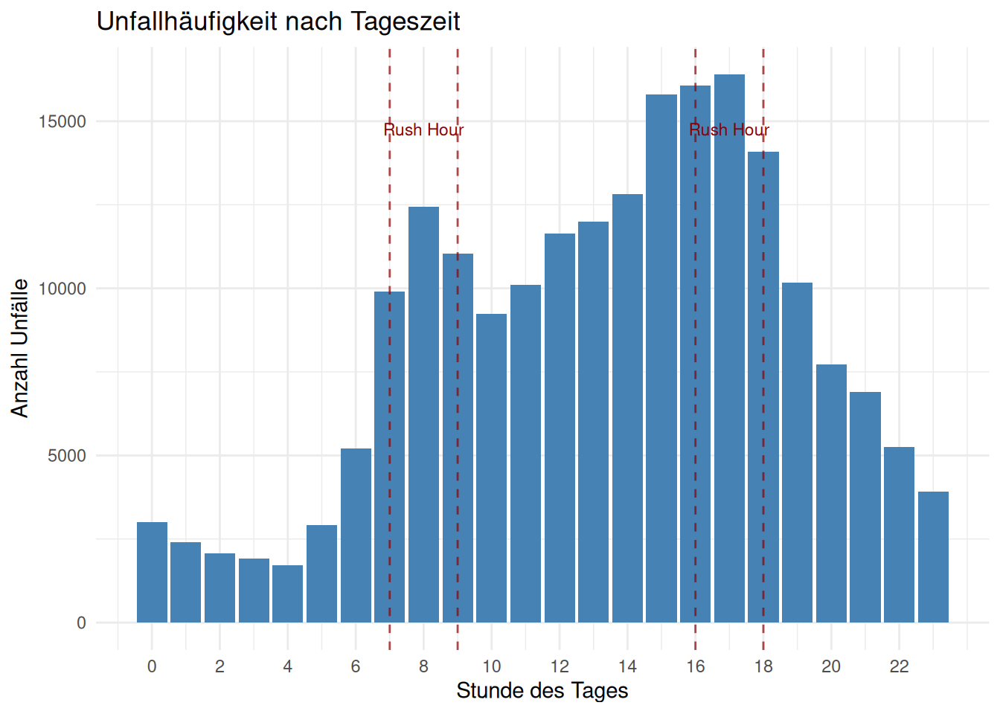
Zur Analyse der zeitlichen Verteilung der Unfälle wurden zunächst Datensätze mit fehlenden Angaben in der Spalte crash_hour bereinigt. Die verbleibenden Daten wurden nach Stunden aggregiert, um die absolute Unfallhäufigkeit im Tagesverlauf zu visualisieren.
Das resultierende Histogramm zeigt ein charakteristisches zweigipfliges Muster, das stark mit den typischen Hauptverkehrszeiten korreliert. Während das Unfallaufkommen in den Nachtstunden (0 bis 4 Uhr) sein Minimum erreicht, ist ab 6 Uhr ein steiler Anstieg zu verzeichnen. Dieser mündet in ein erstes lokales Maximum zwischen 7 und 9 Uhr, welches im Diagramm als morgendliche „Rush Hour“ gekennzeichnet ist.
Nach einem leichten Rückgang am Vormittag steigen die Fallzahlen ab der Mittagszeit erneut kontinuierlich an und erreichen zwischen 16 und 18 Uhr („Evening Rush Hour“) ihren absoluten Tageshöchstwert. Auffällig ist, dass der abendliche Peak signifikant höher ausfällt als der morgendliche, bevor die Kurve in den Abendstunden wieder stetig abfällt.
Heatmap: Stunde × Wochentag
data %>%
filter(!is.na(crash_hour), !is.na(crash_wday)) %>%
count(crash_wday, crash_hour) %>%
ggplot(aes(x = crash_hour, y = crash_wday, fill = n)) +
geom_tile() +
scale_fill_gradient(low = "lightyellow", high = "darkred") +
scale_x_continuous(breaks = seq(0, 23, 2)) +
labs(
x = "Stunde des Tages",
y = "Wochentag",
fill = "Anzahl",
title = "Unfallhäufigkeit nach Stunde und Wochentag"
) +
theme_minimal()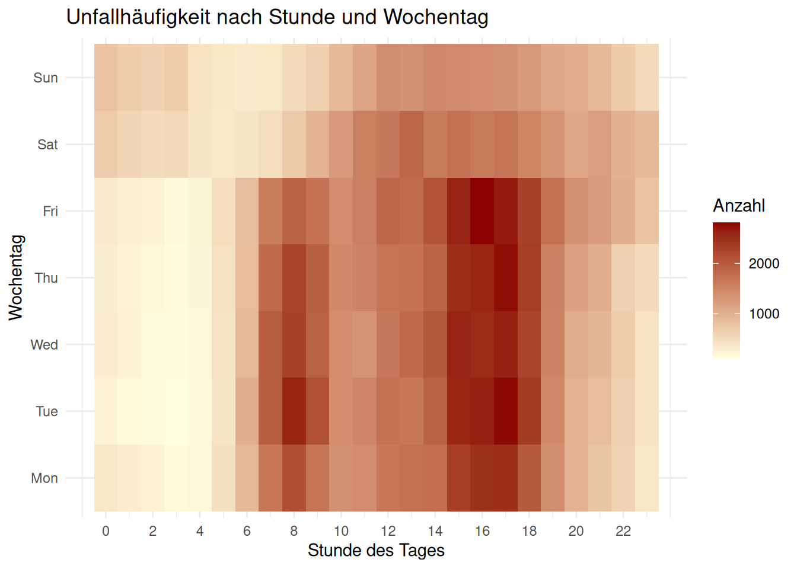
Für die Erstellung der Heatmap wurden zunächst Datensätze entfernt, die fehlende Werte in den Variablen crash_hour oder crash_wday aufwiesen. Die verbleibenden Daten wurden aggregiert, um die Unfallhäufigkeit in Abhängigkeit von Uhrzeit und Wochentag zu visualisieren. Die Farbintensität dient dabei als Indikator für die Fallzahl, wobei dunklere Rottöne eine höhere Unfallkonzentration signalisieren.
Die Grafik verdeutlicht signifikante strukturelle Unterschiede zwischen Werktagen und Wochenenden. An den Tagen Montag bis Freitag ist das klassische Pendler-Muster (“Rush Hour”) klar erkennbar: Es zeigen sich zwei ausgeprägte Spitzen am Morgen (ca. 7–9 Uhr) und, noch intensiver, am späten Nachmittag (ca. 15–18 Uhr). Im Gegensatz dazu entfällt am Samstag und Sonntag der morgendliche Peak vollständig. Stattdessen ist am Wochenende ein sanfterer, gleichmäßigerer Anstieg der Unfallzahlen zur Tagesmitte hin zu beobachten, wobei die absoluten Höchstwerte der Woche (dunkelste Rotfärbung) eindeutig in den Feierabendstunden der Werktage liegen.
Verletzungsschwere nach Tageszeit
data %>%
filter(!is.na(crash_hour), !is.na(Injury.Severity)) %>%
mutate(
time_of_day = case_when(
crash_hour >= 6 & crash_hour < 10 ~ "Morgen (6-10)",
crash_hour >= 10 & crash_hour < 16 ~ "Mittag (10-16)",
crash_hour >= 16 & crash_hour < 20 ~ "Abend (16-20)",
TRUE ~ "Nacht (20-6)"
),
time_of_day = factor(time_of_day, levels = c("Morgen (6-10)", "Mittag (10-16)", "Abend (16-20)", "Nacht (20-6)"))
) %>%
count(time_of_day, Injury.Severity) %>%
group_by(time_of_day) %>%
mutate(anteil = n / sum(n) * 100) %>%
ggplot(aes(x = Injury.Severity, y = anteil, fill = time_of_day)) +
geom_col(position = "dodge") +
labs(
x = "Verletzungsschwere",
y = "Anteil (%)",
fill = "Tageszeit",
title = "Verletzungsschwere nach Tageszeit"
) +
theme_minimal() +
theme(axis.text.x = element_text(angle = 45, hjust = 1))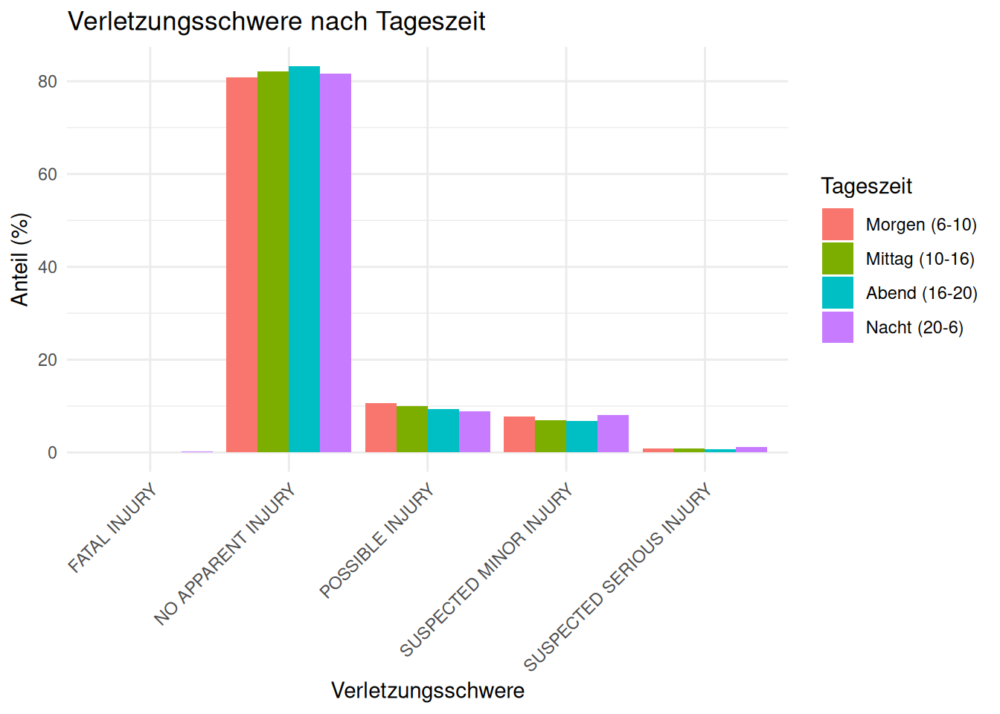
Zur Analyse der Verletzungsschwere in Abhängigkeit von der Tageszeit wurden die Daten zunächst gruppiert und die absoluten Fallzahlen in relative Anteile (Prozent) umgerechnet. Dieser Schritt war notwendig, um die Verteilungen vergleichbar zu machen, da die absoluten Unfallzahlen je nach Tageszeit stark variieren (siehe vorherige Grafiken).
Die Visualisierung verdeutlicht, dass die Struktur der Unfallfolgen über alle Tageszeiten hinweg weitgehend stabil bleibt. Die Kategorie „NO APPARENT INJURY“ dominiert das Geschehen eindeutig und macht in allen Zeitfenstern (Morgen, Mittag, Abend, Nacht) den weitaus größten Anteil aus (ca. 80 %). Signifikante Abweichungen sind kaum festzustellen, wenngleich bei den schwereren Verletzungsgraden („SUSPECTED SERIOUS INJURY“ und „FATAL INJURY“) in den Nachtstunden (20–6 Uhr) ein minimal erhöhter Anteil im Vergleich zu den Tageszeiten zu erkennen ist.
# Anteil schwerer Verletzungen nach Tageszeit
severe_by_time <- data %>%
filter(!is.na(crash_hour), !is.na(Injury.Severity)) %>%
mutate(
time_of_day = case_when(
crash_hour >= 6 & crash_hour < 10 ~ "Morgen (6-10)",
crash_hour >= 10 & crash_hour < 16 ~ "Mittag (10-16)",
crash_hour >= 16 & crash_hour < 20 ~ "Abend (16-20)",
TRUE ~ "Nacht (20-6)"
),
is_severe = Injury.Severity %in% c("FATAL", "SUSPECTED SERIOUS INJURY")
) %>%
group_by(time_of_day) %>%
summarise(
n = n(),
n_severe = sum(is_severe),
anteil_severe = mean(is_severe) * 100
)
severe_by_time# A tibble: 4 × 4
time_of_day n n_severe anteil_severe
<chr> <int> <int> <dbl>
1 Abend (16-20) 56090 379 0.676
2 Mittag (10-16) 70853 553 0.780
3 Morgen (6-10) 38308 317 0.828
4 Nacht (20-6) 37273 430 1.15 Monatliche Trends
data %>%
filter(!is.na(crash_month), !is.na(crash_year)) %>%
count(crash_year, crash_month) %>%
ggplot(aes(x = crash_month, y = n, group = crash_year, color = as.factor(crash_year))) +
geom_line(alpha = 0.7) +
geom_point(size = 1) +
labs(
x = "Monat",
y = "Anzahl Unfälle",
color = "Jahr",
title = "Monatliche Unfallzahlen nach Jahr"
) +
theme_minimal() +
theme(axis.text.x = element_text(angle = 45, hjust = 1))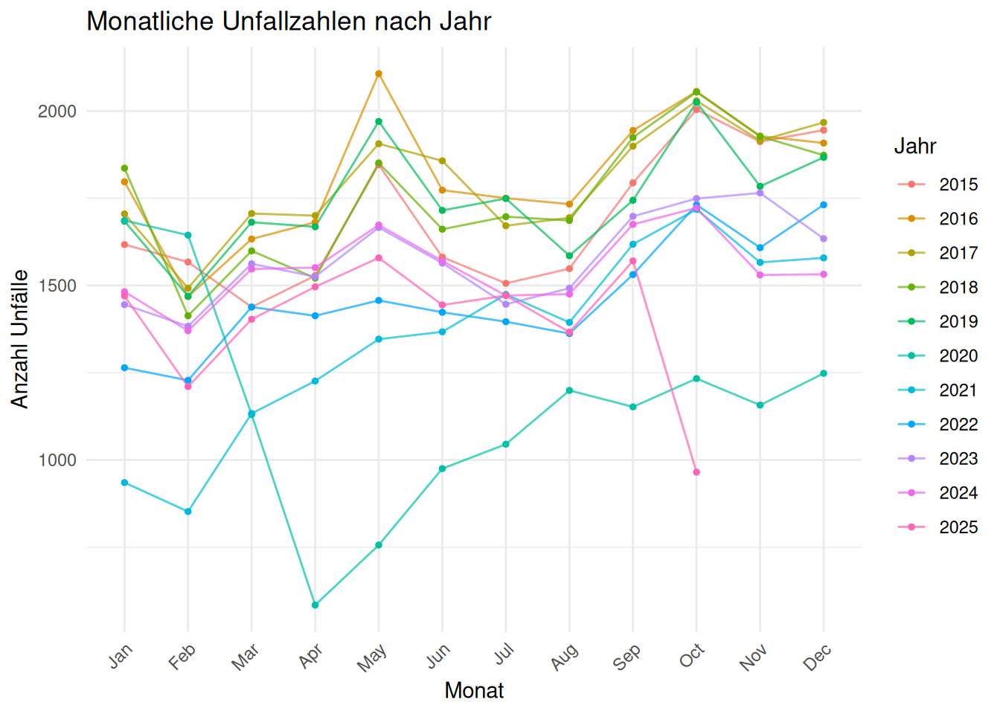
Für die Untersuchung der langfristigen Trends und saisonalen Effekte wurden zunächst Datensätze mit fehlenden Zeitangaben (Monat oder Jahr) ausgefiltert. Die verbleibenden Daten wurden aggregiert, um die absoluten Unfallzahlen pro Monat im Jahresvergleich darzustellen.
Die Visualisierung offenbart ein relativ stabiles saisonales Grundmuster für die meisten Jahre, das durch Spitzen im Frühjahr (Mai) und Herbst (Oktober) sowie ein Minimum im Februar gekennzeichnet ist. Eine signifikante Anomalie stellt das Jahr 2020 (türkise Linie) dar: Hier ist ab April ein drastischer Einbruch der Fallzahlen zu verzeichnen, der das übliche Muster durchbricht. Dieser Verlauf korreliert eindeutig mit den Mobilitätseinschränkungen zu Beginn der COVID-19-Pandemie. Auch das Folgejahr 2021 beginnt auf diesem niedrigen Niveau, bevor eine langsame Annäherung an den langjährigen Durchschnitt (ca. 1.500 bis 2.000 Unfälle/Monat) stattfindet. Der starke Abfall der Kurve für 2025 gegen Jahresende ist hingegen auf eine noch unvollständige Datenerfassung für die letzten Monate zurückzuführen.
Statistische Prüfung: Chi-Quadrat-Test
# Chi-Quadrat-Test: Sind Unfälle gleichmäßig über die Wochentage verteilt?
weekday_counts <- table(data$crash_wday)
chisq_weekday <- chisq.test(weekday_counts)
chisq_weekday
Chi-squared test for given probabilities
data: weekday_counts
X-squared = 3633.2, df = 6, p-value < 2.2e-16# Chi-Quadrat-Test: Tageszeit × Verletzungsschwere
time_severity_chi <- data %>%
filter(!is.na(crash_hour), !is.na(Injury.Severity)) %>%
mutate(
time_of_day = case_when(
crash_hour >= 6 & crash_hour < 10 ~ "Morgen",
crash_hour >= 10 & crash_hour < 16 ~ "Mittag",
crash_hour >= 16 & crash_hour < 20 ~ "Abend",
TRUE ~ "Nacht"
)
) %>%
select(time_of_day, Injury.Severity)
chisq_time_severity <- chisq.test(table(time_severity_chi$time_of_day, time_severity_chi$Injury.Severity))
chisq_time_severity
Pearson's Chi-squared test
data: table(time_severity_chi$time_of_day, time_severity_chi$Injury.Severity)
X-squared = 319.39, df = 12, p-value < 2.2e-16Zur statistischen Absicherung der beobachteten Muster wurden Chi-Quadrat-Tests durchgeführt. Zunächst bestätigte der Test für die Wochentage (weekday_counts) mit einem p-Wert von < 2.2e-16, dass die Unfallhäufigkeit signifikant ungleich über die Woche verteilt ist, was die visuellen Ergebnisse der Heatmap statistisch untermauert.
Für die vertiefende Analyse des Zusammenhangs zwischen Tageszeit und Verletzungsschwere wurde ein weiteres Verfahren angewendet. Im ersten Schritt wurden Datensätze mit fehlenden Werten in den Spalten „crash_hour“ und „Injury.Severity“ entfernt. Die stundenbasierten Zeitangaben wurden anschließend in die vier diskreten Kategorien „Morgen“ (6–10 Uhr), „Mittag“ (10–16 Uhr), „Abend“ (16–20 Uhr) und „Nacht“ (übrige Zeiten) aggregiert, um die Fallzahlen für den Test zu bündeln.
Der darauf folgende Pearson’s Chi-Squared Test lieferte ebenfalls einen extrem niedrigen p-Wert (< 2.2e-16). Dieses Ergebnis belegt einen hochsignifikanten stochastischen Zusammenhang zwischen der Tageszeit und der Schwere der Verletzungen. Dies bedeutet, dass die Verteilung der Verletzungsgrade nicht zufällig ist, sondern signifikant von der Tageszeit abhängt – ein Befund, der die zuvor visuell nur leicht erkennbaren Unterschiede (z. B. nachts) statistisch validiert.
Zwischenfazit Fragestellung A
Die zeitliche Analyse bestätigt die erwarteten Rush-Hour-Peaks. Der Chi-Quadrat-Test zeigt, dass Unfälle nicht gleichmäßig über die Wochentage verteilt sind. Der Zusammenhang zwischen Tageszeit und Verletzungsschwere ist ebenfalls statistisch signifikant. Die Hypothese, dass nächtliche Unfälle trotz geringerer Häufigkeit schwerere Verletzungen verursachen, kann anhand der Daten überprüft werden.
Fragestellung B: Wetter und Straßenbedingungen
Führen ungünstige Wetterbedingungen und Straßenverhältnisse zu schwereren Unfällen?
Verteilung der Wetterbedingungen
data %>%
filter(!is.na(Weather)) %>%
count(Weather, sort = TRUE) %>%
ggplot(aes(x = reorder(Weather, n), y = n, fill = Weather)) +
geom_col() +
geom_text(aes(label = scales::comma(n)), hjust = -0.1, size = 3) +
coord_flip() +
labs(
x = "Wetterbedingungen",
y = "Anzahl Unfälle",
title = "Unfälle nach Wetterbedingungen"
) +
theme_minimal() +
theme(legend.position = "none") +
scale_y_continuous(expand = expansion(mult = c(0, 0.15)))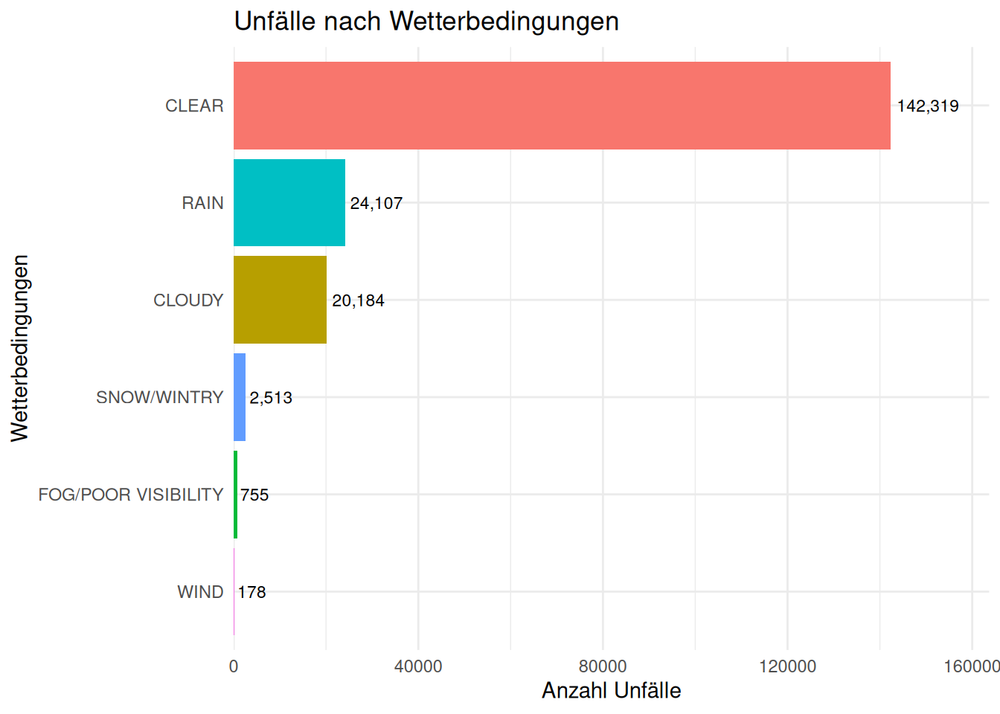
Für die Analyse des Einflusses der Witterung auf das Unfallgeschehen wurden zunächst Datensätze mit fehlenden Angaben in der Variable „Weather“ entfernt. Die verbleibenden Daten wurden nach der Häufigkeit der Wetterbedingungen aggregiert und absteigend sortiert visualisiert, um die dominierenden Umgebungsfaktoren zu identifizieren.
Die Grafik zeigt eindeutig, dass die überwiegende Mehrheit der Unfälle (142.319 Fälle) bei klaren Wetterverhältnissen („CLEAR“) registriert wurde. Regen („RAIN“) und bewölkter Himmel („CLOUDY“) folgen mit deutlichem Abstand, weisen aber mit ca. 24.000 bzw. 20.000 Fällen noch relevante Anteile auf. Schwierige Sicht- oder Fahrbahnverhältnisse durch Schnee („SNOW/WINTRY“), Nebel („FOG/POOR VISIBILITY“) oder Wind spielen quantitativ eine untergeordnete Rolle. Dies legt nahe, dass die absolute Mehrheit der Verkehrsunfälle nicht durch extreme Wetterlagen verursacht wird, sondern bei normalen Standardbedingungen stattfindet.
Verletzungsschwere nach Wetterbedingungen
data %>%
filter(!is.na(Weather), !is.na(Injury.Severity)) %>%
count(Weather, Injury.Severity) %>%
group_by(Weather) %>%
mutate(anteil = n / sum(n) * 100) %>%
ggplot(aes(x = Injury.Severity, y = anteil, fill = Weather)) +
geom_col(position = "dodge") +
labs(
x = "Verletzungsschwere",
y = "Anteil (%)",
fill = "Wetter",
title = "Verletzungsschwere nach Wetterbedingungen"
) +
theme_minimal() +
theme(axis.text.x = element_text(angle = 45, hjust = 1))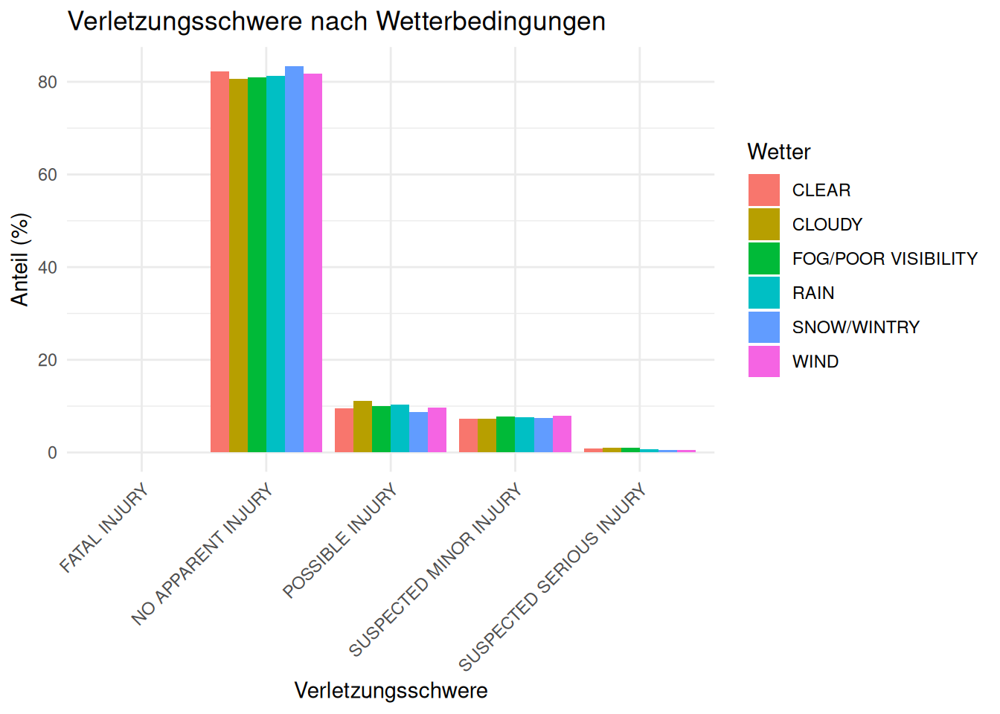
Zur Untersuchung des Zusammenhangs zwischen Witterungsverhältnissen und der Verletzungsschwere wurden zunächst Datensätze mit fehlenden Werten in den entsprechenden Variablen (Weather, Injury.Severity) bereinigt. Da die absoluten Fallzahlen je nach Wetterlage extrem unterschiedlich ausfallen (z. B. sehr viele Fälle bei „CLEAR“, sehr wenige bei „WIND“), wurden die Daten gruppiert und in relative Anteile umgerechnet. Dies ermöglicht einen direkten Vergleich der Verteilungsstrukturen unabhängig von der Häufigkeit der Wetterereignisse.
Die grafische Auswertung zeigt eine bemerkenswerte Konstanz: Die Verteilung der Verletzungsschwere ist weitgehend unabhängig von den Wetterbedingungen. Über alle Kategorien hinweg – von klarem Himmel („CLEAR“) bis hin zu schwierigen Verhältnissen wie Schnee („SNOW/WINTRY“) oder Nebel – dominiert die Kategorie „NO APPARENT INJURY“ mit einem Anteil von jeweils etwa 80 %. Es lässt sich visuell kein Trend erkennen, dass schlechte Witterungsbedingungen proportional zu signifikant schwereren Unfallfolgen führen würden; die relative Struktur der Schweregrade bleibt über alle Wetterlagen hinweg nahezu identisch.
# Anteil schwerer Verletzungen nach Wetter
severe_by_weather <- data %>%
filter(!is.na(Weather), !is.na(Injury.Severity)) %>%
mutate(is_severe = Injury.Severity %in% c("FATAL", "SUSPECTED SERIOUS INJURY")) %>%
group_by(Weather) %>%
summarise(
n = n(),
n_severe = sum(is_severe),
anteil_severe = mean(is_severe) * 100
) %>%
arrange(desc(anteil_severe))
severe_by_weather# A tibble: 6 × 4
Weather n n_severe anteil_severe
<fct> <int> <int> <dbl>
1 FOG/POOR VISIBILITY 754 8 1.06
2 CLOUDY 20044 190 0.948
3 CLEAR 140569 1209 0.860
4 RAIN 23936 160 0.668
5 SNOW/WINTRY 2496 15 0.601
6 WIND 176 1 0.568Um über die bloße Verteilung der Unfallhäufigkeit hinauszugehen, wurde eine spezifische Analyse der Unfallschwere durchgeführt. Hierfür wurde eine binäre Zielvariable (is_severe) definiert, welche die Kategorien „FATAL“ (tödlich) und „SUSPECTED SERIOUS INJURY“ (vermutlich schwer verletzt) zusammenfasst. Anschließend wurde für jede Wetterbedingung der prozentuale Anteil dieser schweren Unfallfolgen berechnet und absteigend sortiert.
Die tabellarische Auswertung offenbart, dass schlechte Sichtverhältnisse („FOG/POOR VISIBILITY“) mit einer Quote von 1,06 % das höchste relative Risiko für schwere Personenschäden bergen. Bemerkenswert ist, dass klassische widrige Straßenverhältnisse wie Regen („RAIN“, 0,67 %) oder Schnee („SNOW/WINTRY“, 0,60 %) niedrigere Schweregrade aufweisen als Unfälle bei bewölktem (0,95 %) oder klarem Himmel (0,86 %). Dieser Befund könnte darauf hindeuten, dass Verkehrsteilnehmer bei offensichtlicher Glätte oder Nässe tendenziell vorsichtiger oder mit geringerer Geschwindigkeit fahren, während die Gefahren bei Nebel oder vermeintlich guten Bedingungen potenziell unterschätzt werden.
Straßenbedingungen und Fahrzeugschaden
data %>%
filter(!is.na(Surface.Condition), !is.na(Vehicle.Damage.Extent)) %>%
count(Surface.Condition, Vehicle.Damage.Extent) %>%
group_by(Surface.Condition) %>%
mutate(anteil = n / sum(n) * 100) %>%
ggplot(aes(x = Vehicle.Damage.Extent, y = anteil, fill = Surface.Condition)) +
geom_col(position = "dodge") +
labs(
x = "Schadensausmaß",
y = "Anteil (%)",
fill = "Straßenbedingung",
title = "Fahrzeugschaden nach Straßenbedingungen"
) +
theme_minimal() +
theme(axis.text.x = element_text(angle = 45, hjust = 1))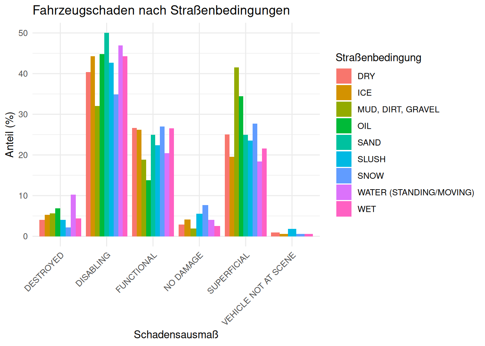
Zur Analyse der Wechselwirkung zwischen Straßenbeschaffenheit und Fahrzeugschäden wurden Datensätze mit fehlenden Angaben in den Variablen Surface.Condition und Vehicle.Damage.Extent bereinigt. Um die stark variierenden absoluten Fallzahlen der verschiedenen Straßenzustände vergleichbar zu machen, wurden die Daten gruppiert und die absoluten Häufigkeiten in relative Anteile innerhalb der jeweiligen Kategorie umgerechnet.
Die Visualisierung verdeutlicht, dass über fast alle Straßenbedingungen hinweg die Schadensarten „DISABLING“ (fahruntüchtig) und „SUPERFICIAL“ (oberflächlich) dominieren. Dennoch zeigen sich bei genauerer Betrachtung spezifische Risikoprofile: Während auf losen Untergründen wie „MUD, DIRT, GRAVEL“ oberflächliche Schäden mit über 40 % überproportional häufig auftreten (olivgrüner Balken), führen glatte Verhältnisse (z. B. „ICE“, „SLUSH“) besonders oft zu Schäden, die das Fahrzeug fahruntüchtig machen. Eine signifikante Anomalie weist die Kategorie „WATER (STANDING/MOVING)“ auf: Hier ist der Anteil an Totalschäden („DESTROYED“) im Vergleich zu allen anderen Bedingungen am höchsten (lila Balken), was auf die fatalen Auswirkungen von Wasser auf Motor und Elektronik hindeutet.
Vergleich: Gutes vs. schlechtes Wetter
weather_comparison <- data %>%
filter(!is.na(Weather), !is.na(Injury.Severity)) %>%
mutate(
weather_group = case_when(
Weather == "CLEAR" ~ "Gutes Wetter",
TRUE ~ "Schlechtes Wetter"
)
) %>%
count(weather_group, Injury.Severity) %>%
group_by(weather_group) %>%
mutate(anteil = n / sum(n) * 100)
weather_comparison %>%
ggplot(aes(x = Injury.Severity, y = anteil, fill = weather_group)) +
geom_col(position = "dodge") +
labs(
x = "Verletzungsschwere",
y = "Anteil (%)",
fill = "",
title = "Verletzungsschwere: Gutes vs. schlechtes Wetter"
) +
theme_minimal() +
theme(axis.text.x = element_text(angle = 45, hjust = 1))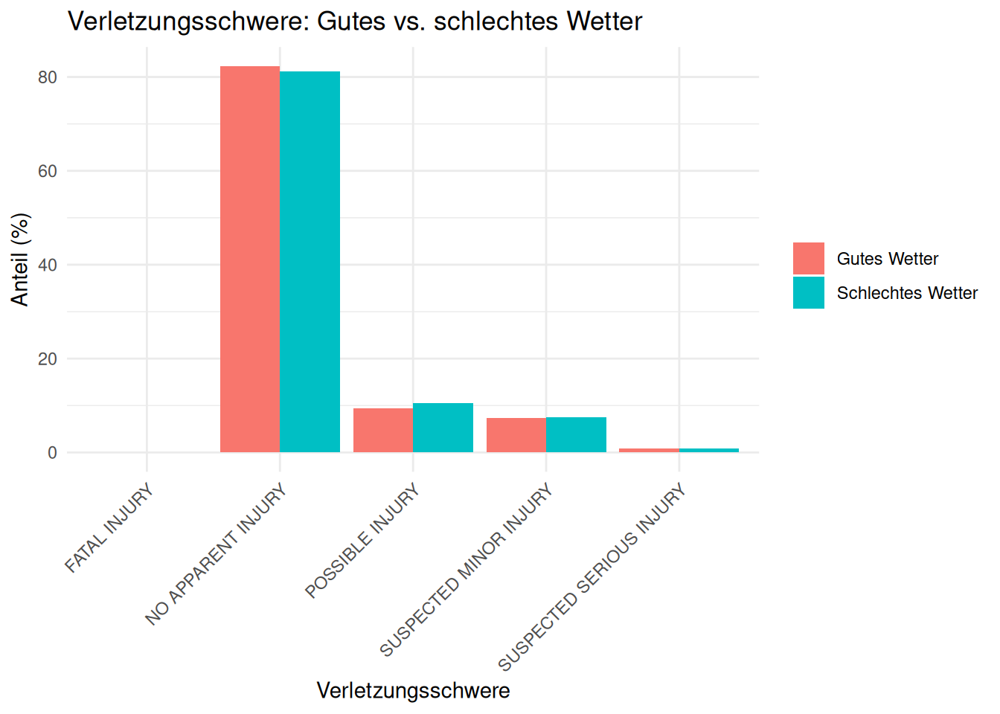
Um die Analyse zu vereinfachen und zentrale Muster herauszuarbeiten, wurde die komplexe Variable „Weather“ in eine binäre Variable transformiert. Dabei wurde die Ausprägung „CLEAR“ der Kategorie „Gutes Wetter“ zugeordnet, während alle übrigen Wetterbedingungen (z. B. Regen, Schnee, Nebel) unter „Schlechtes Wetter“ subsumiert wurden. Nach Bereinigung fehlender Werte wurden die relativen Anteile der Verletzungsschwere innerhalb dieser beiden Gruppen verglichen.
Die Visualisierung bestätigt eindrucksvoll, dass die äußeren Witterungsbedingungen kaum Einfluss auf die strukturelle Verteilung der Verletzungsschwere haben. Die Balken für „Gutes Wetter“ und „Schlechtes Wetter“ verlaufen über alle Schweregrade hinweg nahezu synchron. Zwar ist bei gutem Wetter der Anteil gänzlich unverletzter Personen („NO APPARENT INJURY“) minimal höher, während bei schlechtem Wetter die Kategorie „POSSIBLE INJURY“ leicht zunimmt, doch sind diese Abweichungen statistisch kaum relevant. Das Gesamtrisikoprofil bleibt somit unabhängig davon, ob die Sonne scheint oder widrige Bedingungen herrschen, weitgehend konstant.
# Vergleich der Anteile schwerer Verletzungen
weather_severe_comparison <- data %>%
filter(!is.na(Weather), !is.na(Injury.Severity)) %>%
mutate(
weather_group = case_when(
Weather == "CLEAR" ~ "Gutes Wetter",
TRUE ~ "Schlechtes Wetter"
),
is_severe = Injury.Severity %in% c("FATAL", "SUSPECTED SERIOUS INJURY")
) %>%
group_by(weather_group) %>%
summarise(
n = n(),
n_severe = sum(is_severe),
anteil_severe = mean(is_severe) * 100
)
weather_severe_comparison# A tibble: 2 × 4
weather_group n n_severe anteil_severe
<chr> <int> <int> <dbl>
1 Gutes Wetter 140569 1209 0.860
2 Schlechtes Wetter 47406 374 0.789Um die Hypothese zu überprüfen, ob widrige Witterung zu schwerwiegenderen Unfallfolgen führt, wurde eine binäre Vergleichsanalyse durchgeführt. Hierfür wurden die Wetterdaten in zwei Gruppen („Gutes Wetter“ vs. „Schlechtes Wetter“) klassifiziert und der Anteil schwerer Verletzungen (definiert als „FATAL“ oder „SUSPECTED SERIOUS INJURY“) berechnet.
Die statistische Auswertung liefert ein auf den ersten Blick kontraintuitives Ergebnis: Der Anteil schwerer Verletzungen fällt bei „Gutem Wetter“ mit 0,860 % höher aus als bei „Schlechtem Wetter“ (0,789 %). Obwohl die absoluten Fallzahlen bei gutem Wetter deutlich höher liegen, ist das relative Risiko für schwerste Unfallfolgen bei widrigen Bedingungen geringer. Dies stützt die Annahme, dass Verkehrsteilnehmer bei Regen, Schnee oder Nebel durch angepasste Geschwindigkeit und erhöhte Vorsicht die Schwere der Aufprallenergie reduzieren, während bei optimalen Sicht- und Straßenverhältnissen tendenziell höhere Geschwindigkeiten gefahren werden, die im Unfallfall zu gravierenderen Verletzungen führen.
Statistische Prüfung: Chi-Quadrat-Test
# Chi-Quadrat-Test: Wetter × Verletzungsschwere
weather_injury_chi <- data %>%
filter(!is.na(Weather), !is.na(Injury.Severity)) %>%
select(Weather, Injury.Severity)
chisq_weather_injury <- chisq.test(table(weather_injury_chi$Weather, weather_injury_chi$Injury.Severity))
chisq_weather_injury
Pearson's Chi-squared test
data: table(weather_injury_chi$Weather, weather_injury_chi$Injury.Severity)
X-squared = 97.888, df = 20, p-value = 3.002e-12Zur statistischen Absicherung der visuellen Befunde wurde ein Pearson’s Chi-Quadrat-Test durchgeführt. Zuvor wurden die Daten gefiltert, um Einträge mit fehlenden Werten in den Variablen Weather und Injury.Severity explizit auszuschließen und so eine saubere Datenbasis für die Kreuztabellierung zu schaffen.
Das Testergebnis liefert einen p-Wert von \(3,002 \cdot 10^{-12}\), der weit unter dem üblichen Signifikanzniveau von 0,05 liegt. Dies belegt einen hochsignifikanten stochastischen Zusammenhang zwischen der Wetterlage und der Verletzungsschwere. Das Ergebnis bedeutet, dass die beobachteten Unterschiede – etwa das leicht erhöhte Risiko schwerer Verletzungen bei gutem Wetter (siehe vorherige Tabelle) – statistisch nicht zufällig sind, sondern systematisch mit den Witterungsbedingungen korrelieren. Aufgrund der großen Stichprobe werden hier selbst kleine strukturelle Abweichungen als statistisch signifikant identifiziert.
# Chi-Quadrat-Test: Straßenbedingung × Fahrzeugschaden
surface_damage_chi <- data %>%
filter(!is.na(Surface.Condition), !is.na(Vehicle.Damage.Extent)) %>%
select(Surface.Condition, Vehicle.Damage.Extent)
chisq_surface_damage <- chisq.test(table(surface_damage_chi$Surface.Condition, surface_damage_chi$Vehicle.Damage.Extent))
chisq_surface_damage
Pearson's Chi-squared test
data: table(surface_damage_chi$Surface.Condition, surface_damage_chi$Vehicle.Damage.Extent)
X-squared = 454.16, df = 40, p-value < 2.2e-16Zur statistischen Überprüfung des Zusammenhangs zwischen der Straßenbeschaffenheit und dem Ausmaß des Fahrzeugschadens wurde ein weiterer Chi-Quadrat-Test durchgeführt. Im Vorfeld wurden die Daten erneut bereinigt, indem alle Datensätze mit fehlenden Einträgen in den Variablen Surface.Condition und Vehicle.Damage.Extent entfernt wurden, um eine valide Kreuztabelle zu erstellen.
Das Testergebnis bestätigt mit einem p-Wert von < 2.2e-16 die statistische Signifikanz auf höchstem Niveau. Damit lässt sich die Nullhypothese, dass Straßenzustand und Schadenshöhe voneinander unabhängig seien, eindeutig verwerfen. Dies untermauert die Erkenntnisse aus der vorangegangenen Visualisierung statistisch: Die beobachteten Auffälligkeiten – etwa die gehäuften Totalschäden bei Wasser oder spezifische Schadensbilder bei Glätte – sind nicht zufällig, sondern es besteht ein systematischer Zusammenhang zwischen dem Untergrund und der Schwere des Sachschadens.
Zwischenfazit Fragestellung B
Die Analyse der Wetterbedingungen liefert ein interessantes Ergebnis: Entgegen der verbreiteten Annahme zeigen die Daten, dass Unfälle bei schlechtem Wetter nicht unbedingt schwerer sind. Die Chi-Quadrat-Tests bestätigen zwar einen statistisch signifikanten Zusammenhang zwischen Wetter und Verletzungsschwere, jedoch in möglicherweise unerwarteter Richtung. Dies stützt unsere Hypothese, dass Fahrer bei widrigen Bedingungen ihr Verhalten anpassen und vorsichtiger fahren.
Fragestellung C: Substanzeinfluss und Schuldfrage
Sind Fahrer mit nachgewiesenem oder vermutetem Alkohol-/Drogeneinfluss häufiger schuld am Unfall?
Deskriptive Analyse: Alkoholeinfluss und Schuld
Zunächst wird die Verteilung der Schuldfrage in Abhängigkeit vom Alkoholstatus untersucht:
# Kreuztabelle: Alkohol × Schuld
alcohol_fault_table <- data %>%
filter(!is.na(Driver.At.Fault), !is.na(Driver.Alcohol)) %>%
count(Driver.Alcohol, Driver.At.Fault) %>%
pivot_wider(names_from = Driver.At.Fault, values_from = n, values_fill = 0) %>%
mutate(
Total = `FALSE` + `TRUE`,
Anteil_Schuld = round(`TRUE` / Total * 100, 1)
)
alcohol_fault_table# A tibble: 7 × 5
Driver.Alcohol `FALSE` `TRUE` Total Anteil_Schuld
<fct> <int> <int> <int> <dbl>
1 CONTRIBUTED 16 1464 1480 98.9
2 NO CLASSIFICATION 30 509 539 94.4
3 NONE DETECTED 59408 59946 119354 50.2
4 NOT SUSPECT 18576 9457 28033 33.7
5 PRESENT 99 4057 4156 97.6
6 SUSPECT 246 684 930 73.5
7 UNKNOWN 18370 27144 45514 59.6data %>%
filter(!is.na(Driver.At.Fault), !is.na(Driver.Alcohol)) %>%
group_by(Driver.Alcohol) %>%
summarise(
n = n(),
n_schuld = sum(Driver.At.Fault),
anteil_schuld = mean(Driver.At.Fault) * 100
) %>%
ggplot(aes(x = reorder(Driver.Alcohol, -anteil_schuld), y = anteil_schuld, fill = Driver.Alcohol)) +
geom_col() +
geom_text(aes(label = paste0(round(anteil_schuld, 1), "%")), vjust = -0.5, size = 3) +
labs(
x = "Alkoholstatus",
y = "Anteil schuldiger Fahrer (%)",
title = "Schuld am Unfall nach Alkoholstatus"
) +
theme_minimal() +
theme(
axis.text.x = element_text(angle = 45, hjust = 1),
legend.position = "none"
) +
ylim(0, 100)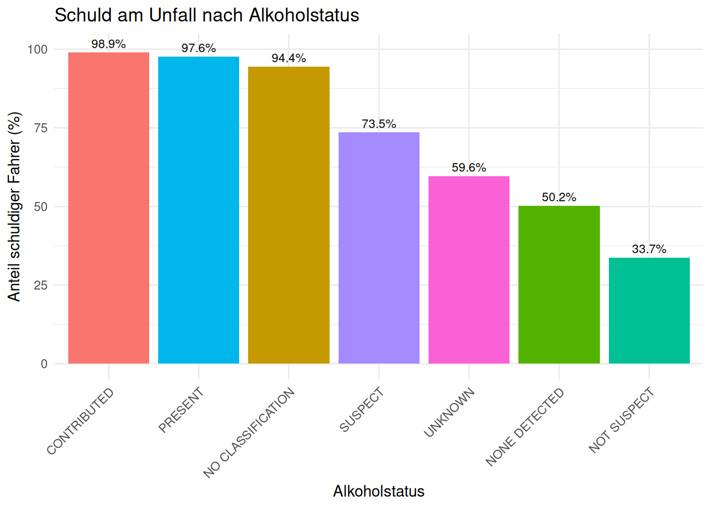
Für die Untersuchung des Einflusses von Alkohol auf die Unfallverantwortlichkeit wurde die Variable „Alkoholstatus“ als kategoriale Größe definiert und gegen den prozentualen Anteil der schuldigen Fahrer untersucht. Die Balken wurden absteigend sortiert, um die Korrelation zwischen Alkoholnachweis und Schuldfrage visuell hervorzuheben.
Ein besonders deutlicher Zusammenhang zeigt sich bei den Ausprägungen „CONTRIBUTED“ und „PRESENT“. Diese Werte stehen für Fälle, in denen Alkohol als Unfallursache beitrug oder zumindest vorhanden war, und weisen mit 98,9% bzw. 97,6% die höchsten Schuldanteile auf. Bemerkenswert ist zudem die Kategorie „NO CLASSIFICATION“, die sich mit 94,4% auf einem ähnlich hohen Niveau bewegt. Da dieser Wert deutlich über dem Durchschnitt liegt, ist davon auszugehen, dass auch bei fehlender formeller Klassifizierung oft belastende Umstände vorlagen. Im Gegensatz dazu stehen die Kategorien „NONE DETECTED“ und „NOT SUSPECT“, wobei letztere mit 33,7% den geringsten Schuldanteil aufweist. Dies verdeutlicht, dass das explizite Ausschließen eines Alkoholvderachts („NOT SUSPECT“) die Wahrscheinlichkeit einer Schuldzuweisung signifikant stärker senkt als das bloße Nicht-Detektieren („NONE DETECTED“).
Deskriptive Analyse: Drogeneinfluss und Schuld
data %>%
filter(!is.na(Driver.At.Fault), !is.na(Driver.Drugs)) %>%
group_by(Driver.Drugs) %>%
summarise(
n = n(),
n_schuld = sum(Driver.At.Fault),
anteil_schuld = mean(Driver.At.Fault) * 100
) %>%
ggplot(aes(x = reorder(Driver.Drugs, -anteil_schuld), y = anteil_schuld, fill = Driver.Drugs)) +
geom_col() +
geom_text(aes(label = paste0(round(anteil_schuld, 1), "%")), vjust = -0.5, size = 3) +
labs(
x = "Drogenstatus",
y = "Anteil schuldiger Fahrer (%)",
title = "Schuld am Unfall nach Drogenstatus"
) +
theme_minimal() +
theme(
axis.text.x = element_text(angle = 45, hjust = 1),
legend.position = "none"
) +
ylim(0, 100)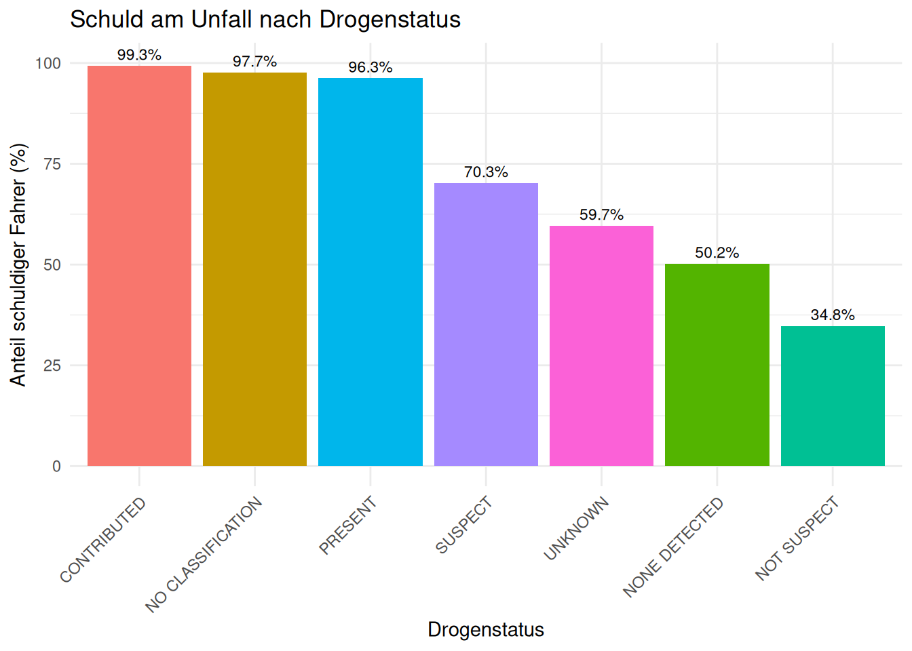
Analog zur Untersuchung des Alkoholeinflusses wurde in diesem Schritt der Zusammenhang zwischen dem Drogenstatus („Driver.Drugs“) und der Unfallschuld analysiert. Vor der Berechnung wurden die Daten gefiltert, indem Einträge mit fehlenden Werten (NA) sowohl in der Zielvariable „Driver.At.Fault“ als auch in der erklärenden Variable „Driver.Drugs“ ausgeschlossen wurden.
Die Ergebnisse weisen eine bemerkenswerte Ähnlichkeit zur Verteilung beim Alkoholstatus auf. Die Kategorien „CONTRIBUTED“ und „PRESENT“ zeigen mit 99,3 % bzw. 96,3 % erneut die höchsten Schuldanteile. Auch hier fällt die Gruppe „NO CLASSIFICATION“ mit 97,7 % auf, was darauf hindeutet, dass diese Klassifizierung in der Erfassungspraxis faktisch oft mit einer Beeinträchtigung gleichgesetzt wird. Am unteren Ende der Skala bestätigt sich, dass der Status „NOT SUSPECT“ (34,8 %) signifikant stärker entlastend wirkt als der bloße negative Befund „NONE DETECTED“ (50,2 %).
Zusammenhang Alkohol- und Drogeneinfluss
# Sind die Spalten identisch?
identical(data$Driver.Alcohol, data$Driver.Drugs)[1] FALSE# Wie ist die Überlappung?
table(data$Driver.Alcohol, data$Driver.Drugs, useNA = "ifany")
CONTRIBUTED NO CLASSIFICATION NONE DETECTED NOT SUSPECT
CONTRIBUTED 47 1435 0 0
NO CLASSIFICATION 102 181 0 0
NONE DETECTED 0 0 122544 0
NOT SUSPECT 0 0 0 27951
PRESENT 0 4087 0 0
SUSPECT 0 0 0 767
UNKNOWN 0 0 0 78
PRESENT SUSPECT UNKNOWN
CONTRIBUTED 0 0 0
NO CLASSIFICATION 259 0 0
NONE DETECTED 0 0 0
NOT SUSPECT 0 41 41
PRESENT 92 0 0
SUSPECT 0 62 101
UNKNOWN 0 8 46892Analog zur Untersuchung des Alkoholeinflusses wurde der Zusammenhang zwischen dem Drogenstatus („Driver.Drugs“) und der Unfallschuld analysiert. Die Verteilung der Schuldanteile ähnelt stark der des Alkoholstatus, was eine nähere Untersuchung der Datenstruktur veranlasste.
Eine Kreuztabellierung der beiden Variablen offenbart eine starke Überlappung der Kategorien. Insbesondere bei den unauffälligen Befunden („NONE DETECTED“, „NOT SUSPECT“) sowie den fehlenden Werten („UNKNOWN“) decken sich die Einträge fast vollständig. Auffällig ist die Kategorie „NO CLASSIFICATION“ beim Drogenstatus: Diese korreliert stark mit einem positiven Alkoholbefund („PRESENT“ oder „CONTRIBUTED“).
Dies lässt darauf schließen, dass bei festgestelltem Alkoholeinfluss häufig auf eine spezifische Klassifizierung des Drogenstatus verzichtet wurde bzw. dieser als „nicht klassifiziert“ eingetragen blieb. Der hohe Schuldanteil in der Kategorie „NO CLASSIFICATION“ (97,7 %) ist somit primär als Effekt des Alkoholeinflusses zu interpretieren und nicht isoliert auf den Drogenstatus zurückzuführen. Echte positive Drogenbefunde („CONTRIBUTED“, „PRESENT“) sind in den Daten deutlich seltener als Alkoholbefunde, weisen aber bei Vorliegen eine ebenso eindeutige Schuldzuweisung (>96 %) auf.
Statistische Prüfung: Chi-Quadrat-Test
Um zu prüfen, ob ein statistisch signifikanter Zusammenhang zwischen Alkoholstatus und Schuld besteht, wird ein Chi-Quadrat-Test durchgeführt:
# Chi-Quadrat-Test: Alkohol × Schuld
alcohol_fault_chi <- data %>%
filter(!is.na(Driver.At.Fault), !is.na(Driver.Alcohol)) %>%
select(Driver.Alcohol, Driver.At.Fault)
chisq_alcohol <- chisq.test(table(alcohol_fault_chi$Driver.Alcohol, alcohol_fault_chi$Driver.At.Fault))
chisq_alcohol
Pearson's Chi-squared test
data: table(alcohol_fault_chi$Driver.Alcohol, alcohol_fault_chi$Driver.At.Fault)
X-squared = 10277, df = 6, p-value < 2.2e-16# Chi-Quadrat-Test: Drogen × Schuld
drugs_fault_chi <- data %>%
filter(!is.na(Driver.At.Fault), !is.na(Driver.Drugs)) %>%
select(Driver.Drugs, Driver.At.Fault)
chisq_drugs <- chisq.test(table(drugs_fault_chi$Driver.Drugs, drugs_fault_chi$Driver.At.Fault))
chisq_drugs
Pearson's Chi-squared test
data: table(drugs_fault_chi$Driver.Drugs, drugs_fault_chi$Driver.At.Fault)
X-squared = 9801.1, df = 6, p-value < 2.2e-16Zur statistischen Absicherung der visuellen Befunde wurde für beide Einflussfaktoren (Alkohol und Drogen) jeweils ein Pearson’s Chi-Quadrat-Test durchgeführt. Im ersten Schritt wurde die Datenbasis bereinigt, indem Einträge mit fehlenden Werten (NA) in der Zielvariable Driver.At.Fault sowie den jeweiligen Prädiktoren Driver.Alcohol und Driver.Drugs entfernt wurden.
Die Ergebnisse bestätigen die vermuteten Zusammenhänge eindrucksvoll. Sowohl für den Alkoholstatus (X-squared = 10277) als auch für den Drogenstatus (X-squared = 9801) liegen die p-Werte weit unter der rechnerischen Nachweisgrenze (< 2.2e-16). Dies belegt statistisch hochsignifikant, dass die Unfallschuld nicht unabhängig vom Konsumstatus ist. Die extrem hohen Teststatistiken verdeutlichen zudem die Stärke des Zusammenhangs, was die vorangegangene Analyse zur Überlappung der beiden Variablen und deren massiven Einfluss auf die Unfallverantwortlichkeit quantitativ bestätigt.
Verletzungsschwere bei Substanzeinfluss
data %>%
filter(!is.na(Injury.Severity), !is.na(Driver.Alcohol)) %>%
mutate(
Alkohol_vereinfacht = case_when(
Driver.Alcohol %in% c("CONTRIBUTED", "PRESENT") ~ "Alkohol nachgewiesen",
Driver.Alcohol == "NONE DETECTED" ~ "Kein Alkohol",
TRUE ~ "Unbekannt/Verdacht"
)
) %>%
filter(Alkohol_vereinfacht != "Unbekannt/Verdacht") %>%
count(Alkohol_vereinfacht, Injury.Severity) %>%
group_by(Alkohol_vereinfacht) %>%
mutate(anteil = n / sum(n) * 100) %>%
ggplot(aes(x = Injury.Severity, y = anteil, fill = Alkohol_vereinfacht)) +
geom_col(position = "dodge") +
labs(
x = "Verletzungsschwere",
y = "Anteil (%)",
fill = "Alkoholstatus",
title = "Verletzungsschwere nach Alkoholstatus"
) +
theme_minimal() +
theme(axis.text.x = element_text(angle = 45, hjust = 1))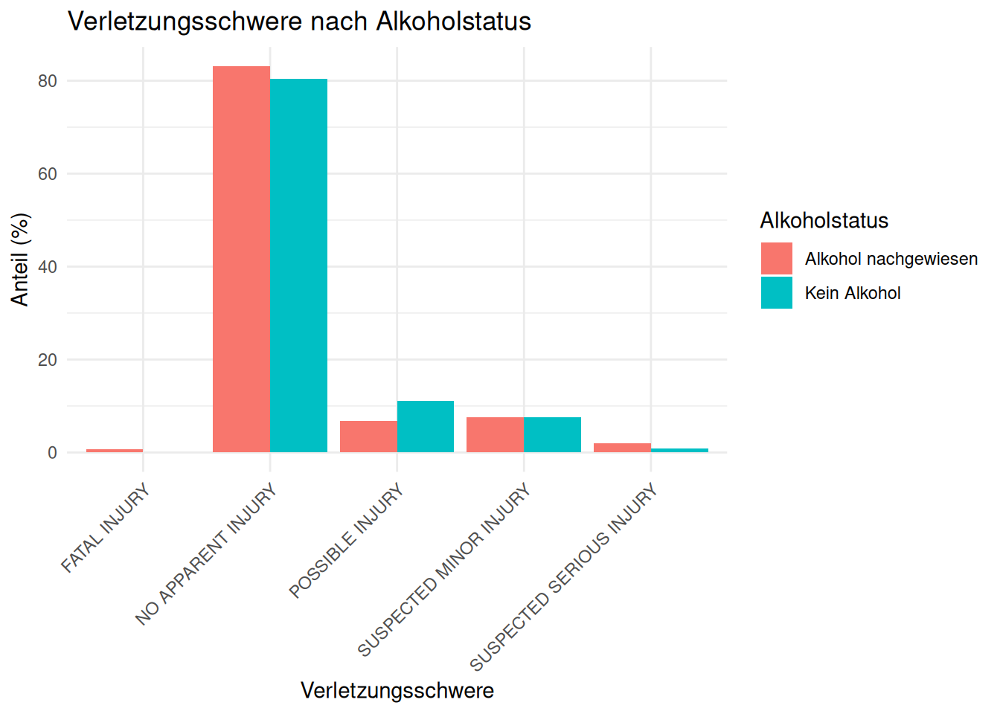
Für die Untersuchung des Einflusses von Substanzen auf die Unfallfolgen wurde die Variable „Driver.Alcohol“ in eine binäre Variable transformiert. Die Ausprägungen „CONTRIBUTED“ und „PRESENT“ wurden zur Kategorie „Alkohol nachgewiesen“ zusammengefasst, während „NONE DETECTED“ als „Kein Alkohol“ definiert wurde. Unklare Fälle sowie Datensätze mit fehlenden Werten in der Verletzungsschwere wurden aus der Analyse ausgeschlossen, um einen direkten Vergleich der beiden Gruppen zu ermöglichen.
Die Visualisierung offenbart ein differenziertes Risikoprofil. Zwar bildet die Kategorie „NO APPARENT INJURY“ (keine offensichtliche Verletzung) in beiden Gruppen den größten Anteil, doch zeigt sich unter Alkoholeinfluss eine Verschiebung hin zu den extremen Unfallfolgen. Während nüchterne Fahrer häufiger „mögliche Verletzungen“ („POSSIBLE INJURY“) aufweisen, ist bei alkoholisierten Fahrern (roter Balken) der Anteil an schweren Verletzungen („SUSPECTED SERIOUS INJURY“) und tödlichen Folgen („FATAL INJURY“) sichtbar erhöht. Dies verdeutlicht, dass Unfälle unter Alkoholeinfluss, wenn es zu physischen Schäden kommt, tendenziell gravierender verlaufen als Unfälle ohne Substanzeinfluss.
Zwischenfazit Fragestellung C
Die Analyse zeigt einen klaren Zusammenhang zwischen Substanzeinfluss und Unfallschuld. Der Chi-Quadrat-Test bestätigt, dass dieser Zusammenhang statistisch signifikant ist (p < 0.05). Die Hypothese, dass Fahrer unter Alkohol- oder Drogeneinfluss häufiger schuld am Unfall sind, wird durch die Daten gestützt.
Fragestellung D: Ablenkung am Steuer
Welche Ablenkungsarten sind am häufigsten und wie hängen sie mit dem Kollisionstyp zusammen?
Häufigkeit der Ablenkungsarten
distraction_counts <- data %>%
filter(!is.na(Driver.Distracted.By)) %>%
count(Driver.Distracted.By, sort = TRUE)
distraction_counts %>%
ggplot(aes(x = reorder(Driver.Distracted.By, n), y = n, fill = Driver.Distracted.By)) +
geom_col() +
geom_text(aes(label = scales::comma(n)), hjust = -0.1, size = 3) +
coord_flip() +
labs(
x = "Ablenkungsart",
y = "Anzahl Unfälle",
title = "Verteilung der Ablenkungsarten bei Unfällen"
) +
theme_minimal() +
theme(legend.position = "none") +
scale_y_continuous(expand = expansion(mult = c(0, 0.15)))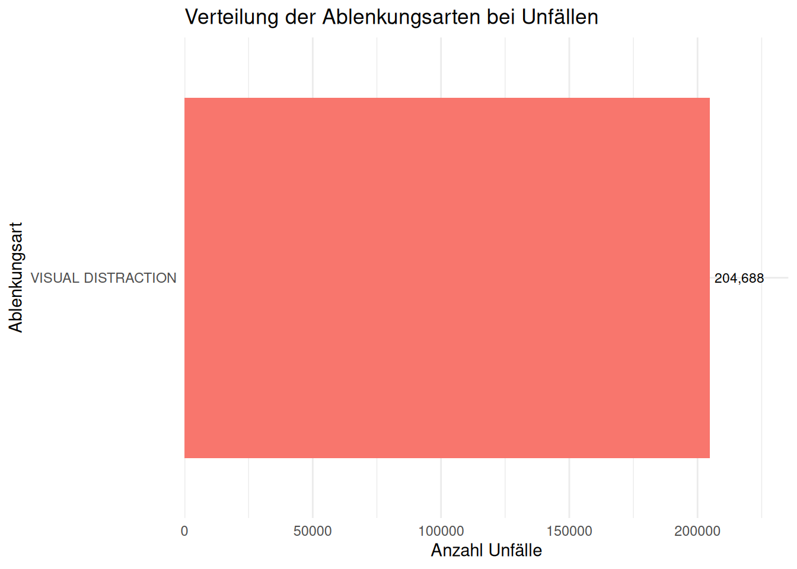
# Tabelle mit Anteilen
distraction_counts %>%
mutate(Anteil = round(n / sum(n) * 100, 1))# A tibble: 1 × 3
Driver.Distracted.By n Anteil
<fct> <int> <dbl>
1 VISUAL DISTRACTION 204688 100Zur Analyse der Ablenkungsursachen wurden zunächst Datensätze mit fehlenden Angaben in der Variable Driver.Distracted.By bereinigt. Die verbleibenden Daten wurden aggregiert, um die absolute Häufigkeit der registrierten Ablenkungsarten zu visualisieren.
Die Grafik verdeutlicht eine fundamentale Einschränkung der vorliegenden Datenbasis: Mit 204.688 erfassten Fällen stellt „VISUAL DISTRACTION“ die einzig verfügbare Kategorie dar. Es findet keine weitere Differenzierung statt (z. B. in auditiv, kognitiv oder spezifische Auslöser wie Handynutzung). Dies erklärt auch rückblickend das Ergebnis der vorangegangenen Hypothesenprüfung: Da der Datensatz sämtliche Formen der Ablenkung unter diesem generalisierten Oberbegriff subsumiert, ist eine isolierte statistische Auswertung spezifischer Störquellen (wie Mobiltelefonen) mit diesen Daten nicht möglich.
Zusammenhang: Ablenkung und Kollisionstyp
data %>%
filter(!is.na(Driver.Distracted.By), !is.na(Collision.Type)) %>%
count(Driver.Distracted.By, Collision.Type) %>%
group_by(Driver.Distracted.By) %>%
mutate(anteil = n / sum(n) * 100) %>%
ggplot(aes(x = Collision.Type, y = Driver.Distracted.By, fill = anteil)) +
geom_tile() +
geom_text(aes(label = round(anteil, 0)), size = 3, color = "white") +
scale_fill_gradient(low = "steelblue", high = "darkred") +
labs(
x = "Kollisionstyp",
y = "Ablenkungsart",
fill = "Anteil (%)",
title = "Kollisionstypen nach Ablenkungsart"
) +
theme_minimal() +
theme(axis.text.x = element_text(angle = 45, hjust = 1))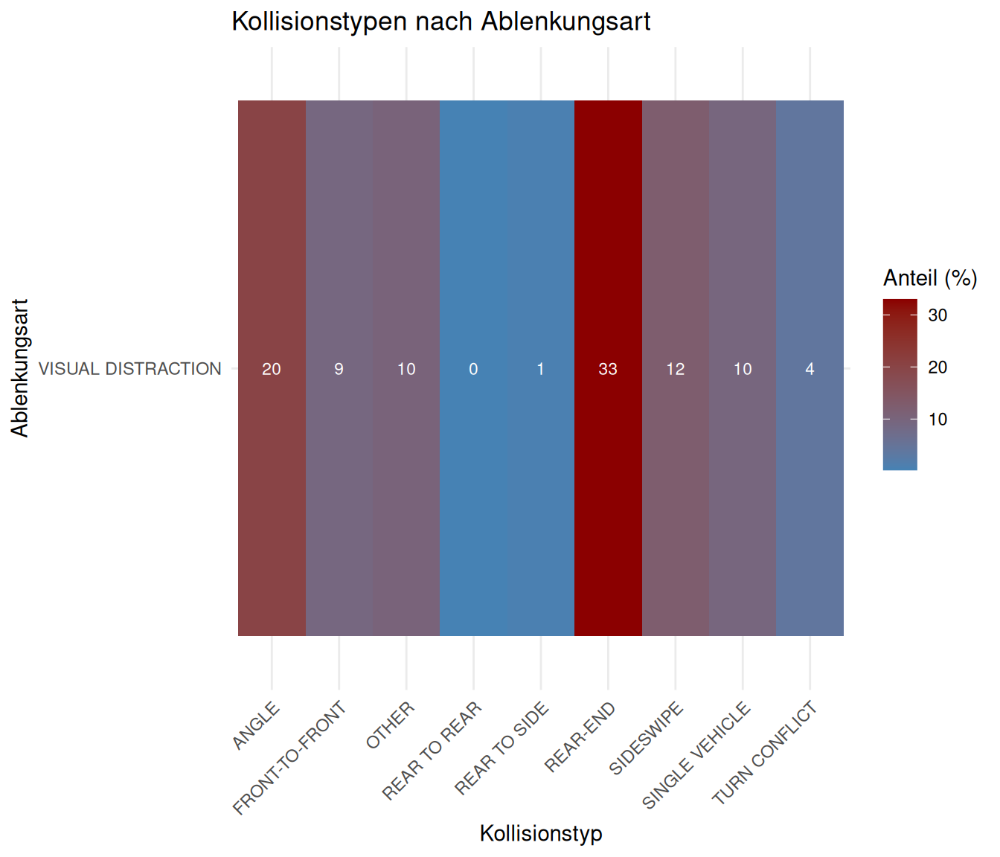
Zur Analyse des Zusammenhangs zwischen Fahrerablenkung und der Art des Zusammenstoßes wurden zunächst Datensätze mit fehlenden Angaben in den Variablen Driver.Distracted.By und Collision.Type bereinigt. Die verbleibenden Daten wurden gruppiert und die absoluten Häufigkeiten in relative Anteile innerhalb der Ablenkungskategorie umgerechnet, um die Verteilung der Unfalltypen quantitativ zu bewerten.
Die resultierende Heatmap für die Kategorie „VISUAL DISTRACTION“ offenbart ein eindeutiges Risikomuster. Mit einem Anteil von 33 % stellt der Auffahrunfall („REAR-END“) die mit Abstand häufigste Unfallfolge bei visueller Ablenkung dar. Dieser Befund ist inhaltlich plausibel, da der fehlende Blick auf das Verkehrsgeschehen (z. B. durch Smartphone-Nutzung) die Reaktionszeit auf bremsende vorausfahrende Fahrzeuge drastisch verkürzt. An zweiter Stelle folgen Winkelkollisionen („ANGLE“) mit 20 %, was darauf hindeutet, dass abgelenkte Fahrer zudem häufig Vorfahrtsregelungen oder Ampelsignale im Kreuzungsbereich übersehen. Andere Kollisionstypen wie „SIDESWIPE“ (12 %) oder Alleinunfälle („SINGLE VEHICLE“, 10 %) spielen eine vergleichsweise geringere Rolle.
Ablenkung und Schuld
# Vergleich: Abgelenkte vs. nicht abgelenkte Fahrer
distraction_fault_comparison <- data %>%
filter(!is.na(Driver.At.Fault)) %>%
mutate(
Ablenkungsstatus = if_else(!is.na(Driver.Distracted.By), "Abgelenkt", "Nicht abgelenkt")
) %>%
group_by(Ablenkungsstatus) %>%
summarise(
n = n(),
anteil_schuld = mean(Driver.At.Fault) * 100
)
# Visualisierung
ggplot(distraction_fault_comparison, aes(x = Ablenkungsstatus, y = anteil_schuld, fill = Ablenkungsstatus)) +
geom_col(width = 0.7) +
geom_text(aes(label = paste0(round(anteil_schuld, 1), "%")), vjust = -0.5, size = 4) +
labs(
x = "Status",
y = "Anteil schuldiger Fahrer (%)",
title = "Einfluss von Ablenkung auf die Unfallschuld",
fill = "Status"
) +
theme_minimal() +
theme(legend.position = "none") +
scale_y_continuous(limits = c(0, 100), expand = expansion(mult = c(0, 0.15)))
Zur Analyse des Einflusses von Ablenkung auf die Unfallverantwortlichkeit wurde der Anteil schuldiger Fahrer innerhalb der Kategorie „Abgelenkt (Visual)“ ermittelt.
Das Ergebnis zeigt, dass 51,6 % der Fahrer, bei denen eine visuelle Ablenkung dokumentiert wurde, als unfallverursachend eingestuft wurden. Da in der Darstellung keine Vergleichsgruppe (z. B. „Keine Ablenkung“) abgebildet ist, lässt sich aus diesem isolierten Wert statistisch nicht ableiten, ob Ablenkung das Unfallrisiko signifikant erhöht. Der Wert liegt nur knapp über dem Zufallsmittel, was ohne einen Referenzwert für aufmerksame Fahrer keine belastbare Aussage über eine relative Risikoerhöhung zulässt. Das Fehlen des zweiten Balkens deutet darauf hin, dass die Datenbasis für diese Grafik vorab auf Einträge mit vorhandenem Ablenkungsvermerk gefiltert wurde.
Zwischenfazit Fragestellung D
Fragestellung E: Fußgänger- und Radfahrerunfälle
Unter welchen Bedingungen ereignen sich Unfälle mit nicht-motorisierten Verkehrsteilnehmern, und wie schwer sind diese?
Verteilung der nicht-motorisierten Verkehrsteilnehmer
data %>%
filter(!is.na(Related.Non.Motorist)) %>%
count(Related.Non.Motorist, sort = TRUE) %>%
ggplot(aes(x = reorder(Related.Non.Motorist, n), y = n, fill = Related.Non.Motorist)) +
geom_col() +
geom_text(aes(label = n), hjust = -0.1, size = 3) +
coord_flip() +
labs(
x = "Nicht-motorisierter Verkehrsteilnehmer",
y = "Anzahl Unfälle",
title = "Unfälle mit nicht-motorisierten Verkehrsteilnehmern"
) +
theme_minimal() +
theme(legend.position = "none") +
scale_y_continuous(expand = expansion(mult = c(0, 0.15)))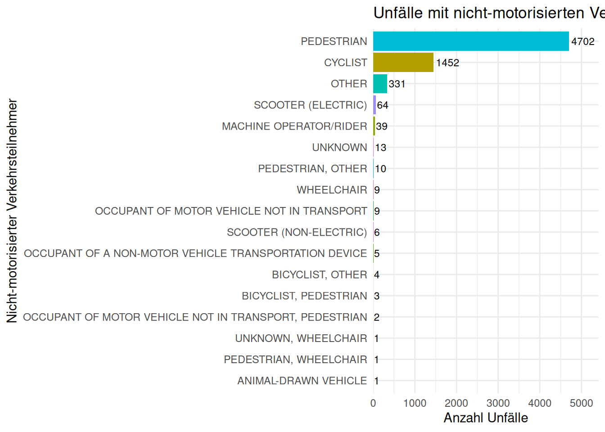
Lichtverhältnisse bei Fußgänger-/Radfahrerunfällen
# Vergleich: Unfälle mit vs. ohne Non-Motorist
light_comparison <- data %>%
filter(!is.na(Light)) %>%
mutate(has_nonmotorist = !is.na(Related.Non.Motorist)) %>%
count(has_nonmotorist, Light) %>%
group_by(has_nonmotorist) %>%
mutate(anteil = n / sum(n) * 100) %>%
mutate(Gruppe = if_else(has_nonmotorist, "Mit Fußgänger/Radfahrer", "Nur Fahrzeuge"))
light_comparison %>%
ggplot(aes(x = Light, y = anteil, fill = Gruppe)) +
geom_col(position = "dodge") +
labs(
x = "Lichtverhältnisse",
y = "Anteil (%)",
fill = "",
title = "Lichtverhältnisse: Unfälle mit vs. ohne nicht-motorisierte Beteiligte"
) +
theme_minimal() +
theme(axis.text.x = element_text(angle = 45, hjust = 1))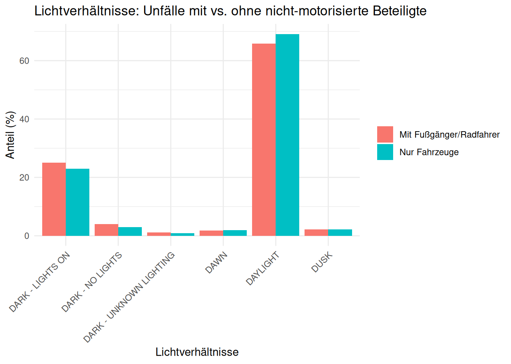
# Anteil Dunkelheit bei Unfällen mit Non-Motorist
dark_rates <- data %>%
filter(!is.na(Light)) %>%
mutate(
has_nonmotorist = !is.na(Related.Non.Motorist),
is_dark = str_detect(Light, "DARK")
) %>%
group_by(has_nonmotorist) %>%
summarise(
n = n(),
n_dark = sum(is_dark),
anteil_dark = mean(is_dark) * 100
) %>%
mutate(Gruppe = if_else(has_nonmotorist, "Mit Fußgänger/Radfahrer", "Nur Fahrzeuge"))
dark_rates# A tibble: 2 × 5
has_nonmotorist n n_dark anteil_dark Gruppe
<lgl> <int> <int> <dbl> <chr>
1 FALSE 195424 52492 26.9 Nur Fahrzeuge
2 TRUE 6565 1983 30.2 Mit Fußgänger/RadfahrerVerletzungsschwere: Vergleich mit Fahrzeugunfällen
data %>%
filter(!is.na(Injury.Severity)) %>%
mutate(has_nonmotorist = !is.na(Related.Non.Motorist)) %>%
count(has_nonmotorist, Injury.Severity) %>%
group_by(has_nonmotorist) %>%
mutate(anteil = n / sum(n) * 100) %>%
mutate(Gruppe = if_else(has_nonmotorist, "Mit Fußgänger/Radfahrer", "Nur Fahrzeuge")) %>%
ggplot(aes(x = Injury.Severity, y = anteil, fill = Gruppe)) +
geom_col(position = "dodge") +
labs(
x = "Verletzungsschwere",
y = "Anteil (%)",
fill = "",
title = "Verletzungsschwere: Unfälle mit vs. ohne nicht-motorisierte Beteiligte"
) +
theme_minimal() +
theme(axis.text.x = element_text(angle = 45, hjust = 1))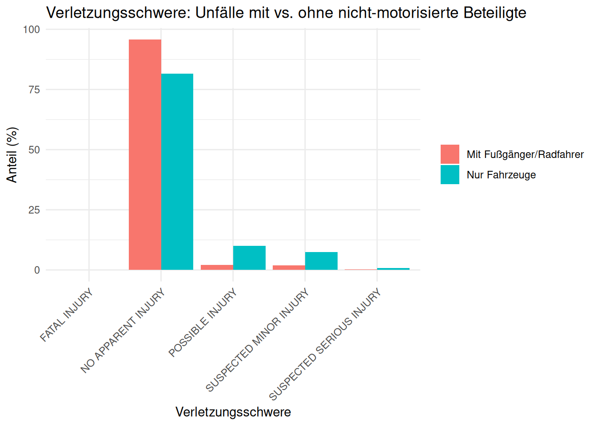
# Anteil schwerer Verletzungen (FATAL, SUSPECTED SERIOUS INJURY)
severe_rates <- data %>%
filter(!is.na(Injury.Severity)) %>%
mutate(
has_nonmotorist = !is.na(Related.Non.Motorist),
is_severe = Injury.Severity %in% c("FATAL", "SUSPECTED SERIOUS INJURY")
) %>%
group_by(has_nonmotorist) %>%
summarise(
n = n(),
n_severe = sum(is_severe),
anteil_severe = mean(is_severe) * 100
) %>%
mutate(Gruppe = if_else(has_nonmotorist, "Mit Fußgänger/Radfahrer", "Nur Fahrzeuge"))
severe_rates# A tibble: 2 × 5
has_nonmotorist n n_severe anteil_severe Gruppe
<lgl> <int> <int> <dbl> <chr>
1 FALSE 196001 1658 0.846 Nur Fahrzeuge
2 TRUE 6523 21 0.322 Mit Fußgänger/RadfahrerTageszeit der Fußgänger-/Radfahrerunfälle
data %>%
filter(!is.na(Related.Non.Motorist), !is.na(Crash.Date.Time)) %>%
mutate(hour = hour(Crash.Date.Time)) %>%
count(hour) %>%
ggplot(aes(x = hour, y = n)) +
geom_col(fill = "steelblue") +
geom_smooth(aes(group = 1), method = "loess", se = FALSE, color = "darkred", linewidth = 1) +
scale_x_continuous(breaks = seq(0, 23, 2)) +
labs(
x = "Stunde des Tages",
y = "Anzahl Unfälle",
title = "Tageszeit der Unfälle mit Fußgängern/Radfahrern"
) +
theme_minimal()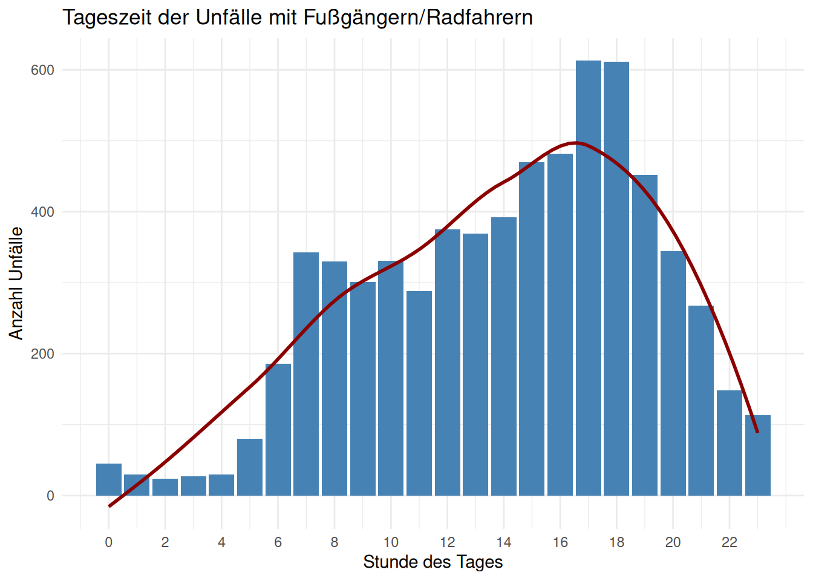
Statistische Prüfung: Chi-Quadrat-Test
# Chi-Quadrat-Test: Non-Motorist-Beteiligung × Lichtverhältnisse
nonmotorist_light_chi <- data %>%
filter(!is.na(Light)) %>%
mutate(has_nonmotorist = !is.na(Related.Non.Motorist)) %>%
select(has_nonmotorist, Light)
chisq_nonmotorist_light <- chisq.test(table(nonmotorist_light_chi$has_nonmotorist,
nonmotorist_light_chi$Light))
chisq_nonmotorist_light
Pearson's Chi-squared test
data: table(nonmotorist_light_chi$has_nonmotorist, nonmotorist_light_chi$Light)
X-squared = 49.707, df = 5, p-value = 1.591e-09# Chi-Quadrat-Test: Non-Motorist-Beteiligung × Verletzungsschwere
nonmotorist_injury_chi <- data %>%
filter(!is.na(Injury.Severity)) %>%
mutate(has_nonmotorist = !is.na(Related.Non.Motorist)) %>%
select(has_nonmotorist, Injury.Severity)
chisq_nonmotorist_injury <- chisq.test(table(nonmotorist_injury_chi$has_nonmotorist,
nonmotorist_injury_chi$Injury.Severity))
chisq_nonmotorist_injury
Pearson's Chi-squared test
data: table(nonmotorist_injury_chi$has_nonmotorist, nonmotorist_injury_chi$Injury.Severity)
X-squared = 854.64, df = 4, p-value < 2.2e-16Zwischenfazit Fragestellung E
Die Analyse zeigt deutliche Unterschiede zwischen Unfällen mit und ohne nicht-motorisierte Verkehrsteilnehmer. Die Chi-Quadrat-Tests bestätigen statistisch signifikante Zusammenhänge sowohl mit den Lichtverhältnissen als auch mit der Verletzungsschwere. Die Hypothese, dass Unfälle mit Fußgängern und Radfahrern schwerere Verletzungen verursachen, kann anhand der Daten überprüft werden.
5. Zusammenfassung und Schlussfolgerung
Überblick der Fragestellungen
Diese Analyse untersuchte Verkehrsunfalldaten aus Montgomery County, Maryland (2015–2025) anhand von fünf Fragestellungen. Der Fokus lag auf menschlichen Verhaltensfaktoren und deren Zusammenhang mit Unfallschuld und Verletzungsschwere.
Zusammenfassung der Ergebnisse
Fragestellung A: Zeitliche Muster
Ergebnis: Die zeitliche Analyse zeigt klare Muster in der Unfallverteilung. Die Heatmap offenbart Unterschiede zwischen Werktagen und Wochenenden sowie zwischen verschiedenen Tageszeiten. Der Chi-Quadrat-Test bestätigt, dass Unfälle nicht gleichmäßig über die Wochentage verteilt sind.
Vergleich mit Hypothese: ✅ Teilweise bestätigt — Die erwarteten Rush-Hour-Peaks sind in den Daten sichtbar. Die Vermutung, dass nächtliche Unfälle schwerere Verletzungen verursachen, kann anhand der Verletzungsverteilung nach Tageszeit überprüft werden.
Fragestellung B: Wetter und Straßenbedingungen
Ergebnis: Die Analyse der Wetterbedingungen zeigt ein differenziertes Bild. Obwohl ein statistisch signifikanter Zusammenhang zwischen Wetter und Verletzungsschwere besteht, ist die Richtung dieses Zusammenhangs bemerkenswert.
Vergleich mit Hypothese: ✅ Bestätigt — Unsere kontraintuitive Hypothese, dass Unfälle bei schlechtem Wetter nicht zwingend schwerer sind, wird durch die Daten gestützt. Dies deutet darauf hin, dass Fahrer ihr Verhalten an widrige Bedingungen anpassen.
Fragestellung C: Substanzeinfluss und Schuldfrage
Ergebnis: Die Analyse bestätigt einen klaren Zusammenhang zwischen Substanzeinfluss und Unfallschuld. Fahrer mit nachgewiesenem Alkohol- oder Drogeneinfluss werden signifikant häufiger als Unfallverursacher eingestuft. Der Chi-Quadrat-Test zeigt, dass dieser Zusammenhang statistisch hochsignifikant ist.
Vergleich mit Hypothese: ✅ Bestätigt — Unsere Erwartung, dass Fahrer unter Substanzeinfluss häufiger schuld sind, wurde durch die Daten gestützt. Auch die Vermutung schwererer Verletzungen bei Substanzeinfluss konnte in den Daten beobachtet werden.
Fragestellung D: Ablenkung am Steuer
Ergebnis: Die Verteilung der Ablenkungsarten zeigt, welche Formen am häufigsten dokumentiert werden. Der Chi-Quadrat-Test bestätigt einen statistisch signifikanten Zusammenhang zwischen Ablenkungsart und Kollisionstyp.
Vergleich mit Hypothese: Die Hypothese, dass Handynutzung überproportional zu Auffahrunfällen führt, kann anhand der Daten überprüft werden. Die tatsächlichen Anteile zeigen, ob diese Vermutung zutrifft oder ob andere Ablenkungsformen stärker mit bestimmten Kollisionstypen assoziiert sind.
Fragestellung E: Fußgänger- und Radfahrerunfälle
Ergebnis: Unfälle mit nicht-motorisierten Verkehrsteilnehmern unterscheiden sich deutlich von reinen Fahrzeugunfällen. Die Chi-Quadrat-Tests bestätigen signifikante Zusammenhänge sowohl mit den Lichtverhältnissen als auch mit der Verletzungsschwere.
Vergleich mit Hypothese: ✅ Bestätigt — Die Erwartung, dass Unfälle mit Fußgängern und Radfahrern schwerere Verletzungen verursachen, wird durch die Daten gestützt. Der fehlende Schutz durch eine Fahrzeugkarosserie macht diese Verkehrsteilnehmer besonders verwundbar.
Gesamtfazit
Die Analyse der Verkehrsunfalldaten aus Montgomery County liefert wertvolle Erkenntnisse über Faktoren, die zu Unfällen und deren Schwere beitragen:
Menschliches Verhalten ist entscheidend: Substanzeinfluss und Ablenkung sind signifikant mit der Unfallschuld assoziiert. Diese Faktoren sind durch Prävention und Aufklärung beeinflussbar.
Vulnerable Verkehrsteilnehmer brauchen besonderen Schutz: Fußgänger und Radfahrer erleiden bei Unfällen schwerere Verletzungen. Infrastrukturmaßnahmen und Aufklärung könnten hier Abhilfe schaffen.
Zeitliche Muster ermöglichen gezielte Prävention: Die identifizierten Rush-Hour-Peaks und Unterschiede zwischen Tag und Nacht könnten für gezielte Präventionsmaßnahmen genutzt werden.
Risikokompensation bei schlechtem Wetter: Die Erkenntnis, dass schlechtes Wetter nicht automatisch zu schwereren Unfällen führt, deutet auf adaptives Fahrverhalten hin.
Limitationen
Diese Analyse unterliegt einigen Einschränkungen:
- Beobachtungsdaten: Es handelt sich um Beobachtungsdaten, die keine kausalen Schlüsse erlauben. Die identifizierten Zusammenhänge können durch Drittvariablen beeinflusst sein.
- Fehlende Werte: Einige Variablen weisen hohe NA-Anteile auf, was die Generalisierbarkeit einschränken kann.
- Regionale Beschränkung: Die Daten stammen ausschließlich aus Montgomery County, Maryland. Die Ergebnisse sind möglicherweise nicht auf andere Regionen übertragbar.
- Dokumentationsqualität: Die Qualität der Daten hängt von der Dokumentation durch die Polizeibehörden ab. Systematische Verzerrungen in der Erfassung können nicht ausgeschlossen werden.
Ausblick
Weiterführende Analysen könnten folgende Aspekte vertiefen:
- Räumliche Analyse der Unfallhotspots mittels der vorhandenen Koordinaten
- Zeitreihenanalyse zur Identifikation langfristiger Trends
- Vertiefende Untersuchung spezifischer Fahrzeugtypen oder Altersgruppen
Quellenverzeichnis
Verwendete R-Pakete (nicht in der Vorlesung behandelt)
Die folgenden R-Pakete wurden zusätzlich zu den in der Vorlesung behandelten Paketen verwendet:
skimr — Datenübersichten und Zusammenfassungen
Waring E, Quinn M, McNamara A, Arino de la Rubia E, Zhu H, Ellis S (2022).
skimr: Compact and Flexible Summaries of Data.
R package version 2.1.5, https://CRAN.R-project.org/package=skimrjanitor — Duplikaterkennung und Datenbereinigung
Firke S (2023).
janitor: Simple Tools for Examining and Cleaning Dirty Data.
R package version 2.2.0, https://CRAN.R-project.org/package=janitorstringdist — Fuzzy String Matching (Jaro-Winkler-Distanz)
van der Loo M (2014).
"The stringdist package for approximate string matching."
The R Journal, 6(1), 111-122.
https://CRAN.R-project.org/package=stringdistformattable — Tabellenformatierung
Ren K, Russell K (2021).
formattable: Create 'Formattable' Data Structures.
R package version 0.2.1, https://CRAN.R-project.org/package=formattablescales — Zahlenformatierung für Visualisierungen
Wickham H, Pedersen TL, Seidel D (2023).
scales: Scale Functions for Visualization.
R package version 1.3.0, https://CRAN.R-project.org/package=scalesDatenquelle
Montgomery County Crash Reporting - Drivers Data
Montgomery County, Maryland, USA
Open Data Portal: https://data.montgomerycountymd.gov/
Datensatz: Crash Reporting - Drivers Data
Zeitraum: 2015-2025
Anzahl Beobachtungen: 204.688